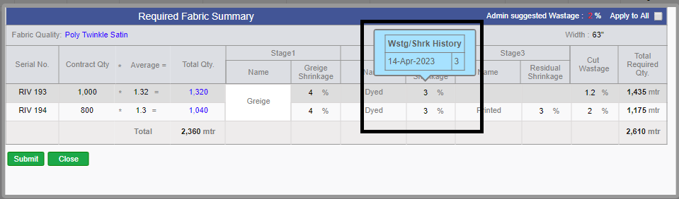
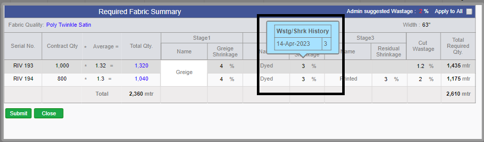
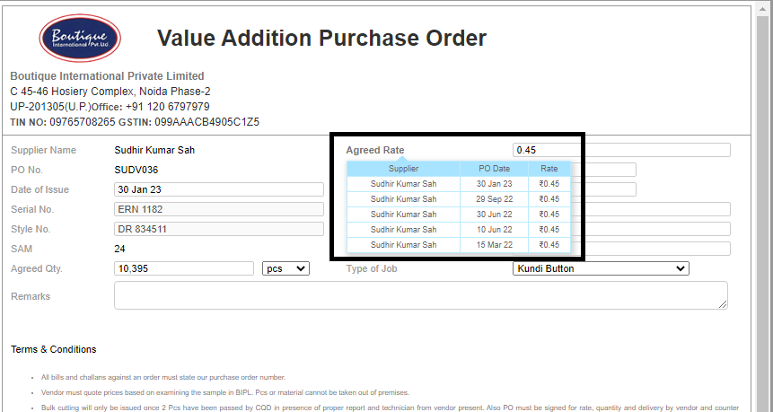

Version 9.2.7 |
Released Date (10Th May 2023) |
|
|
Version 9.2.6 |
Released Date (17Th April 2023) |
-
CREATED NEW UI TO CHANGE THE THREAD AVERAGE BY IE TEAM TILL CUT COMPLETE UP TO 99%. :-
* Now we provided a link in the MO Accessory section from where till cutting is complete up to 99%
the IE team can update the thread average and simultaneously update to Material team and Merchants. This change will take place in the costing order form and all other places.
-
APPLIED Editing of the cut wastage in the wastage pop-up of the Fabric. :-
* By default first time it will come to the default from admin as per the total first stage required quantity.
* After saving it once this will not come from admin anymore.
* This will remain editable until unless cut issue done for the quality and contract.
* Now this is implemented everywhere for required received allocation for srv and pass quantity too.
* It is required to save the pop-up whenever the cut wastage is updated to reflect the changes in the system.
* We are showing the complete calculation in the tooltip as well as the cut wastage impact meterage too in a tooltip.
* Now we are showing the Wastage and shrinkage change history for all contracts separately
* In the Wastage Popup, we are showing the different stage difference quantities in reverse order on the tooltip of Total Quantity.
 



-
Critical Path Report Amendments:-
* Report Title change to Sales Report
* In the First grid now for the 3 months we have to show the data as follows
Total Sales: Current year month Sale value (Previous year month sales value)
Total Units: Current year month Sale Units (Previous year month sales Units)
The previous value would be in Gray color. Whereas the current year’s data will be Green if this is greater than or equal to the previous year’s data else Red.
* A new filter was applied for Shipped/ Unshipped/ Both below department name.
* The exact shipping mode in place of Sea or Air.
* One more column was added just beside the Column PO Quantity Units as ikandi Price.
* In The second report Sample Tracker we added the filters as Sample delivered/ UN delivered/ both.
* After the Sample created column showed the AWB Number added at the time courier sent. The above filter will also work based on this.
* We have added Ikandi sales Manager Detail bellow the Account Manager and Designers below the Fit Merchants.


-
Stock Summary Excel Amendments:-
* Now the name of the sheets in Rates Excel will get updated as:
* “Accessory Rates” will be “Accessory Last 3”
* “Fabric Rates” will be “Fabric Last 3”
* One More Sheet need to be created as “Accessory 2 Year”, which will contain 2 years of all PO’s
* One More Sheet need to be created as “Fabric 2 Year”, will contains 2 years all PO’s
* Need to introduce Serial Numbers just after PO Number column in all the excels.
* The Rates would be Dark Green Bold as in MO in all the excels.

-
Sampling Challan Amendment in Fabric:-
* As soon as we click on Sampling for Sampling Movement, then the Textbox opens where you can Enter.
* Outhouse Name
* GST Number of Outhouse
* Address of Outhouse.

-
In Raise and Revise Fabric Po SORT BY option is added for
* PO Date
* Quality Name
-
In Fabric and Accessory FourPoint Check, claimed Quantity is automatically updated from SRV. And this will not be editable anymore.


-
In the accessory and Fabric FourPoint Check, new column Text has been added named -- ACTUAL REQUIRED QUANTITY, this is implemented to check EXTRA QUANTITY.
*Incase PO is close but GM signature sign is not done in four point check screen it will remain enable


-
In Internal Challan for Fabric and Accessory, when we select outhouse for cutting issue,
The GST number option comes, this appears only when you select OUTHOUSE.

-
New Amendment for Accessory Internal Challan:-
* In Accessory Internal challan, Functionality is provided to return the accessory quantity internally from issued to production if sur plus,
and Total issued column will be updated with the particular adjustment.

-
We have removed the C 47 from the Internal/ External Challans and POs of Fabric and accessories
as per guidance from the Audit team. We have added one more option in the existing options in the challan as “Store”.

-
Costing Logic Updated for CMT:-
* Here we have updated the logic in the costing as if Min CMT is ticked in Client costing default for a particular client as well as Is CMT Open is ticked then the CMT remains editable in costing.
* Here the CMT cannot be less than the Min CMT defined in client costing default accordingly.
-
We have completed the Stock migration with communication with Fabric team. This has been done in multiple cycle to conclude.
-
Updated Login Page UI: We've refreshed the login page to provide a sleeker, more modern look and feel.

-
Note:
Training : Given to Fabric Department for Cut Watage Implementation.
Pradeep Dobriyal.
|
Version 9.2.5 |
Released Date (27Th March 2023) |
-
Fabric PO Details Excel Amendments :-
In 'Stock Summary Excel' report following updates done as:
1) new olumn is been introduced 'Debit Returned (Fail + Pass Stock Return)' => This shows the complete return quantity for any reason.
2) Fail stock column renamed as 'Failed Stock (Fail - DebitRaised)' => Over all failed stock in for which debit challan pending.
3) Fabric default unit name (Meter/ Kg etc.) is also introduced in Stock Summary Excel.
In 'Fabric_PO_Detail' Report following amendments done as
1) New column Introduced 'Pending With Party (With Previous Stage)' => Quantity pending with Supplier in previous stage.
2) Calculated based as if Greige is send to the process then the greige pending with party for which prcess quantity not recieved.


-
BIPL Core Figure Amendments :-
Following changes done as
1) New Sheet for Accessory Latest 3 PO Rates is been Introduced in RATES Excel.
2) Excel renamed as "Rates.xlsx".
following Cosmetic Changes in Rates Excel :-
1) Date Formating now showing year too.
2) Rate is in Bold


|
Version 9.2.4 |
Released Date (23rd Feb 2023) |
-
HSN Code association with Fabric and Accessory quality.
-- Bellow Implementation Removed as the requirement changed at the time of release
HSN Code implemented in Group admin for the Fabric quality and Accessory quality.
Same has been displayed in the Po raised on the said quality of any stage.
HSN Code is mentioned in all the Challans.
HSN Code is mentioned in both Debit and Credit notes as well.
Final Implementation
NOW in all the external Challans and FOC Challans for Fabric and Accessory we are providing the entry field for HSN Code.
So every time the HSN Code need to save in the External Challan. It's mandatory.
We are allowing the Alpanumeric characters in the text box.
The HSN cannot be changed after signature.


-
Multiple bill with one SRV. :-
* We have already allowed one bill number to multiple SRV. But if the bill number is utilised once then further none otherv debit note cannot be served.
Now mupltiple Bill Numbers can be associated with an SRV by following bellow conditions
*The bill of last 3 months which don’t have any debit associated and amount is greater than debit amount can be associated only.
*Always debit will get raised against bill number not on SRV.
(Note: This is implemented only in case of fabric.)


-
MO Tooltip Implementation.
* We have added two columns in MO ToolTip in both Fabric and accessory.
-- Cut Required Quantity
-- Requested Vs Cut %
* Now bellow the BIH % we have implemented the Cut issue % over cut Required.
* Inhouse % logic Updated to calculate the inhouse % by considering the currect cut wastage of the system.


-
--> Change in Weighted SAM
* In Core Report the Grid named as "Monthly Costed vs Actual CMT", We made the change in the calculation of the Weighted SAM.
* Now using those contracts which have stitching in the said month only.

-
--> Debit Note Email to all the users who are added in the particular supplier admin
|
Version 9.2.3 |
Released Date (03th Feb 2023) |
-
* On the "agreed rate" on VA Po tooltip is been created.
* latest 5 rates (paired with type of job) sorted desc with rates and supplier and date.
* This will give intelligence on previous rates For Ref.

-
Stock Summary Report :-
* In this report, will try to summarize the Global Stock, stage wise so that for every stage of fabric we know the following information from this report:
| * Global stock Quantity : |
Total stock quantity which is usable but not yet used |
| * With Processor : |
Total quantity which is issued to the processor |
| * SRV in checking : |
Quantity received in SRV but not checking yet |
| * Pass Stock : |
Pass stock but not issued yet |
| * Failed Stock : |
Total Failed stock after checking |
(Note: Stock Summary Report for Fabric is implemented and as of now is in under observation.)


-
We have updated the logic behind the BIH on MO for fabric and accessory both.
*Here earlier this was calculated as
(Final Stage SRV Recived / Actual Cut qty Required) * 100
*Now this is getting calculated as
(Final Stage SRV Recived / Final Stage Required quantity) * 100
-
Added Text 'Final Stage Required Vs Cut Required' on Mouse Hover of ToolTip and AM Performance Report (Columns yet to added.)
-
Design Issue Fixation.
|
Version 9.2.2 |
Released Date (17th Jan 2023) |
|
|
Version 9.2.1 |
Released Date (29th Dec 2022) |
-
CMT Factors in Wastage and CMT admin:
As of now the CMT is get calculate based on the CMT multiplier factor to SAM based on quantity range in the costing now this will get change accordingly.
We introduced 3 new columns in the Wastage and CMT admin as given bellow and Renamed the Column named as “CMT Multiplier” as “Stitch CMT”.
The new columns are as follows:-
* Cut CMT (Value will be set in admin as per quantity range)
* Stitch CMT (Value will be set in admin as per quantity range and the actual MT will be calculated as the “Stitch CMT * SAM” as Stitch CMT)
* Finish CMT (Value will be set in admin as per quantity range)
* CMT OH (Value will be set in admin as per quantity range)
(NOW the CMT in costing (All new will be based on quantity range. This will be sum of all the four factors explained above.)

-
Different shades of GST percent in Accessory.
* For accessory qualities groups Process GST and Finish GST is introduced. This will help to manage different GST applicable in Separate stages individually.
* Now onwards the stage wise GST will be applicable everywhere in PO and credit and debit notes of Accessory, everywhere.Need to add 2 more columns as GST Finish, GST Process.

-
New Validation is added in Internal Gobal stock challan 'INTGS' and External FOC challan 'EXTFOC', As seen in below images.


-
Logic updated in Fabric Debit Note :-
* In case, if there is single party bill numbers with multiple SRV's, in debit note particular Party bill nummber with multiple SRV's is reflecting vertically.

-
In CMT admin -- 'SLOT OH' column is introduced.

-
Required Fabric Summary Page changes :-
* Quantity in Comma seperated.
* Percent sign according to values.
* MTR along with value.
* Header changed to -- (Cotract qty * average = Total Qty.)

-
As of Now, In Fabric credit note Total Amt is reflected in Round's, as shown in image.

-
Note:
Training : Given to Fabric Department for FOC Challan and Internal Global Stock Issue Challan.
Pradeep Dobriyal
Sandip Singh Gill
|
Version 9.2.0 |
Released Date (13th Dec 2022) |
-
Foc challan:-
---> FOC Stands for the free of charge. In case where the processor has done some malfunctioning and the fabric issued for processing get wasted partially
or complete, Now the processor is asking for the same quantity of the previous stage to process again even he is agreeing to pay the debit against the base fabric.
Following are the important points:
* Now FOC link with all the PO’s other than first stage PO.
* This link will appear in the Manage PO screen in the Challan section, until unless the PO is not closed. Removed : complete quantity is not received in SRV.
* When click on the FOC then the send challan will open, and it will show the total send quantity till now for the PO.
Here it will show you the Stock available quantity too.in case if it is open from the FOC link, It will ask for Stock Challan Qty and Reverse stock Challan Qty both.
* Previous total Challan quantity will be shown for the validation so that in FOC, User will not send the extra quantity than previously raised total challan to the supplier,
Here we can give the po specific extra FOC % column and by default its value would be 0 if the material manager need he can allow the extra issuing of FOC by changing the %.
Total Challan quantity will not include the FOC Challan quantity.
We showed the Total FOC challan quantity too as there may be multiple FOC Challans as well.
* We also need to store the Challan quantity and the latest max previous stage rate for raising the Debit. So that whenever Debit is raised the FOC debit also get listed.
If few quantities are reversed from FOC challan, then this also need to be managed in debit too.
* If the FOC Challan is done for the 3rd stage, then it means in FOC there will be second stage Stock quantity so the Rate for debit will include as follows
i.(Greige shrinkage adjusted rate of first stage) + (Max Process Rate latest)
* If second stage and we are raising the FOC of first stage stock then consider max latest rate of previous stage quality, to avoid any losses.
* We were showing the actual calculated rate in debit, but it will be editable in debit note. We will store the latest previous rate and current rate both.
* So, the complete outcome is that in case of FOC we can issue a challan of max total send quantity till date without FOC and this cannot exceed the availability limit in the stock for the said fabric quality of previous said stage.
*The complete FOC Challan quantity will be liable for the debit and the data with comments will get stored in a table which will appear in any of the debit created against the PO number.
* One PO Multiple FOC Challan can be created. We also need to have tracking that is the Debit note is raised for particular or not.
Always consider those FOC’s in Debit for which Debit is not raised yet.


-
Extra Stock issuing in Production :-
* In the production to issue the extra fabric beyond the requirement from the stock. Until unless there are some quantities allocated as
pass pending to issue in a contract the said functionality will not work.
* In case the complete issuing done but settlement is pending only in this case the Stock allocation will be open which will show the stock available quantity.
* The allocated extra quantity will be available for extra cut entry and the entries in the further stitching and finishing as usual.
* Here for the cutting entry as by default we allow the 2% of the Order quantity extra.
* Here we will show the Stock available quantity, Extra issuing to production and Reverse from Extra issuing.
These will be available in the challan. All these will be available till final settlement is done.


-
In design Form, there is validation for style number it must be of 5 characters.
-
On MO, Closed PO is now visible in RED color.
-
Fabric Purchased Order name changed to Purchase Order.

-
On Costing Sheet, percent and rupee symbol is visible in Financial section.

-
Required Fabric Summary Page had some new amendments, as shown in screenshot.

-
Raise and Revise PO screen, opened for the default tab based on the first stage of the fabric should be selected.

-
In Accessory selection on design form and costing sheet, Rupee symbol is now reflecting.

-
Sales Report :-
* Optimization of sales Report for more reliability.
* Issue fixed where on submission of sales report, MO changes according to parameter passed on MO.
-
In Manage Target Admin, new logic updated for 'COPY FORM' link.
-
UI issue fixation of previous release.
-
Note:
Training : Given to Fabric Department for FOC Challan and Internal Global Stock Issue Challan.
Pradeep Dobriyal
Sandip Singh Gill
|
Version 9.1.9 |
Released Date (18th Nov 2022) |
-
Revised Release Note (25th Nov 2022)
* PO rate increased in size, in both Fabric and Accessory.
 * In accessory Ext Challan, Debit Note, Credit Note -- GST number and supplier name is reflecting.
* In accessory Ext Challan, Debit Note, Credit Note -- GST number and supplier name is reflecting.


* In costing Garment Cut Wastage name changes to 'Gmt. Cut Wastage & Other Samples'.

-
Daily in and out excel renamed as “Daily Fabric Movement.xlsx”.
* In “Daily Fabric Movement.xlsx” duplicate is removed instead of dublicate comma separated serial numbers is reflecting.

-
MO Design updates :-
* Accessory section Colour Print name aligned in left.
* In UI Border duplicity removed.
* Photoshoot Title is in Gray.
* Order Date is in same colour as PO and Stage icon.
* Photoshoot date is in same colour as PO and Stage icon.
* The Revenue value besides the BIPL price is in bracket and un bold and same colour as PO and Stage icon.
* Accessory name BG colour is removed and size is reduced as SAM title.
* Top Status text and Technical link as size of details.
* On Hold text is in Gray.
* Mode text colour same as colour as PO and Stage icon.

-
Technical Section Popup Changes :-
*As of now, Order qty, Contract no., Serial no., Ex-factory is visible on top for reference.
* Header have these columns introduced as given bellow, and the values will be visible accordingly.
| Technical |
ETA |
Planned |
Actual |
*ETA is Black and Bold.
*Dates Logic for technical section.
--If the Actual is less than or equal to ETA then Green else Red colour.

-
Costing Overhead Logic :-
*Overhead Column is added just after CMT Multiplier in Wastage and CMT Admin and previous overhead columns removed from Client Costing Default admin.
*The max range will least Overhead, As the qty range decreases the Overhead Value increases.

-
In every costing when click on the last order price in pop up there will be another grid in bottom with same column only style code will be style numbers.
Here for all costing the costing versions, latest order price is shown if order raised.
Style is shown of any shipped / Unshipped order assigned with it and Order by Exfactory desc in second grid.
First grid logic is intact.

-
Bipl Core Figures Changes :-
*Production stock detail excel used in the Core figure report the values is coming in full, not in Crores.
*In the Production stock summary report the Total is consider the issued stock now.
*In the Monthly Costed vs Actual CMT we have introduced one more column as Stitched FOB just after the Stitched Qty.
* Value will appear in ₹ and Cr.

-
Excel header is showed in 2 lines for visibility perspective.

-
After releasing the In and Out Daily Report Excel have to check with Fabric team to be verified the live report with their data.

-
On the Raise and Revise po following updates:-
*Change To received ==> To receive.
*To Receive second last row is Total PO to receive.

-
Fabric/Accessory PO :-
*All Headers and Titles is in Gray.
*Dear …. Text is removed.
*Fabric Quality name is in bold.
*C&C GSM is Black un-bold and Bracket removed.
* Receivable and Send Quantity is bold.
*Quantity is bold everywhere, In PO.
*Address in PO and other places have managed in 2 lines.
*The Address font is same as the General Instructions shown in PO. Here the values is bold but title like GST and Fax etc is un bold.
*PO Date and ETA Date is in black and Bold.
*In the title of Greige shrinkage and Residual shrinkage % sign is removed, if there are data then % with value is reflected.
*Rate is in bold and green and size is same as rupee symbol.
*The Header implemented in all POs, Credit Note, Debit Note and Challans etc in both Fabric and accessory.


-
As of Now, Challan Number in fabric/accessory SRV is visible in both 4 point checks.


-
Format change for SRV in Fabric and accessory.

|
Version 9.1.8 |
Released Date (02th Nov 2022) |
-
MO Design updates :-
* Order Date in Gray colour.
* Serial Number in blue colour.
* Style Number in Bold.
* BIPL Rate in green and bold.
* Total Value just beside the BIPL Rate in bracket and in Gray colour. The size is same as the Wt value size.
* IKANDI price in blue and bold.
* Margin % is same font as Total Value Updated.
* In Accessory section the colour print name colour becomes Gray after receive more or equal to 100%. This show in black and check the same in fabric too.
* In Production section PCD is un bold and align in left top.
* Ex-factory is Bold and be placed in the centre top row.
* DC must be placed in the top right side of the Row.
* “Cost. SAM:” and “OB:” size reduced as the Wt Value size. Value sizes also reduced. OB value Un Bold.
* St. date and text controls hide. In place of it, now Technical Link.
* All the Links like Plan, Detail and others are Reduced in size as new OB title. The colour is Gray and on mouse hover controls turns blue.
* Quantity size same as ex-factory and also bold. This remain black always.
* Mode in middle of the Quantity row and no colour required here.
* 'Rs' symbol inside the bracket, PCD date reduce size to be same as DC date, Stage & PO reduce size reduced to smallest.
* Order Qty 1 size bigger.
* PCD Date size of DC and unbold.

-
Bipl Core figures Report :-
* Name/ title of the Report is added now as “Production Stock Summary”.
* quantities in k and rounded up to 0 decimal.
* Weighted SAM is in whole number without decimal, and rounded to 0 decimal places.

-
Heading of the Excels wrapped based on the max data contains in the said column.

-
In the Daily in and out summary report for the Fabric and Accessory, both will show last working day (If there are holiday then it will bypass those days) data.
-
In Daily In and Out Report of both Fabric and accessory, Value will show in Lacs without decimal value.
-
In the Raise and revise screen for fabric following changes has done as given bellow :-
remove the bellow columns
* Qty To Order and Qty to Receive – Removed
* Balance in House --- Removed
Now in last column the final detail of the contents are as follows:
Title – Quantity Breakdown:
To Order: same to Qty To Order
To Received (After Shr./ Waste.): same to Qty to Receive with link
Stock in House : same to Balance in House
PO Ordered (send):
PO to Receive:
Pending to Order (This will open when click on the pendig po raised quantity either -ve or +ve). Shown in Tabular format as bellow
| Actual |
Shipped but not Issued |
Shipped and issued |
Total |
- Note:
Training : Given to Fabric Department.
-

-
Fabric PO changes :-
* the quality name, GSM, Count construction and width seperated.
* the style number and serial number as in quotation seperated
* In Required pop up, serial number, contract number and color print is reflecting.

-
In Fabric External Challan , Debit note, Credit Note 'GST number and Supplier address' is now Visible.


-
Costing Changes :-
Corrugated Boxes - Rate and quantity is coming from Database, instead of 'Accessory Quality Admin' as per excel given by accessory Team.


- Note:
Training : Given to Merchandising Department.
-
-
Issue Fixation of Previous Release.
|
Version 9.1.7 |
Released Date (12th Oct 2022) |
-
Stock summary Report:-
The report Stock summary and its excel “DetailsFromCutToShip_Excel.xlsx” Renamed as “Production Stock Detail.xlsx” and moved in the BIPL Core Figures Report.
Cut to the first position in grid
In Case of Issue – cut to use 65% of calculated FOB
introduce quantity and value both in the table.
In Excel, Pending issue section prior to cut section.
one extra column as Total in end of the grid.


-
Second Report Daily In/Out summary report in both Fabric and Accessory :-
Issued section renamed as Issue to Cutting
In Title, info about the Value (This is complete value including all stage prices).
Fabric_Issued_Quantity.xlsx need to be renamed as Cut Issue Status.xlsx.
This created on based on challan only. Name of this sheet 'Daily Stock Movement.xlsx'.


-
Technical Section Updates :-
Ex-factory fore colour changed as per logic of the bg color in the production section will be in left.
PCD Date is in same line as ex-factory but in most right of the production section. Same as the bg color logic applied on fore color.
Shipping Mode is in the middle of the ex-factory and pcd line.
As of Now, there will be one more row just below the ex-factory row in the production section. In right most put the Technical Detail Icon and on click show in pop up.
In the second row left OB and sam as in the technical, STC status same as in the technical, planning date will appear in first row before PCD.
Titles be in header as Ex-Fac, PCD, Stitch Plan Dt, Mode


- Note:
Training : Given to Merchandising Department.
-
MO Design updates :-
Direct Repeat in MO will be visible as (DR) in Grey colour
Serial Number would be bold
Shipping Mode is in the middle of the ex-factory and pcd line.
Rate and price font size would be as style number.
Description would be italic on MO.
Reduce size of stage and po link same as old rate size (the smaller one).
In Accessory section the stage and po section need to be moved in the last of the grid.
The tooltip grid for fabric and accessory need to remove the Qty and Pcs from title.

-
Sales Report changes :-
CMT and material cost removed.

-
Hourly report Changes :-
We have removed barrier of daily overhead 15000 per day,
now it will calculated as on (30K * Slot No./No. of pcs)
-
For Cutting new logic amended :-
IE team can do total cutting of (total pcs issued on that particular order + 2% of total order quantity on issued pcs)
-
Debit note remarks column updated :-
have facilitate better printing options in Challan's.
-
Return challan EXT :-
Now We can Mention Return Challan Qty in External Challan.

- Note:
Training : Given to fabric Department.
-
Credit note number :-
Generation of Credit note number changed to same as debit note.

-
PO close schedular- logic changes :-
As of now, Scheduler is checking remaining quantity before closing PO.
-
Qty Reallocation for both Fabric and accessory is implemented and as of now under observation.

|
Version 9.1.6 |
Released Date (26th Sep 2022) |
-
As of now, Cutting Entry is not be greater than issued Quantity.

-
Description is opened for Return Fabric challan, description is freezed when fabric team mark complete issue.

-
UI issue fixes.
-
Order Form Validation :-
(Note :- same color print for same fabric is not accepted.)
As of Now, 'Ramms' name changed to be 'Gratitude Export'.

-
In supplier Admin, GST percent is mandatory, when we add new supplier.

|
Version 9.1.5 |
Released Date (14th Sep 2022) |
-
New Task will be Created with Name:CutIssue Settlement in case CutIssue Complete not marked and order got shipped, Also Fabric Issue Requested will be visible even after cutting.
-
Added calender on specs upload from where 2 days prior date can be selected by AM:-
Note:
i) As discussed with AM's STC will be auto approved on STC Sample Sent Cycle
-
Mo Updates:
i)Nowonwards on performance Report itself Po_number,Quantity, FirstSRVDate,LastSRvDate can be seen directly.
ii)Now Required Qty & Issued quantity along with each Stage will be visible in MO ToolTip.
iii)Cut average will be visible in black & bold and width color in grey. (Shortfall/Tailed information will be visible below of average).
iv) Now Stage Selection and raise and revise Po icon will be visible in the same row as Quality Name and Order.
v)Bipl price bold .
vi)Srv date and qty. separate in Production detail report pop up.
vii)Name need to change :from R to Stage and P to PO. In fabric this should by as PO bellow Stage where as in accessory side by side.
viii)Srv quantity need to be in K e.g 1.2K (if <1000 then full number in decimal if applicable else up to 1 decimal k format).
IX)Inhouse color changed to pastel colour.
x)BIH Date will be visible at Centre and View Button at Right and Eye Icon has been hided.
xi)Inspite of View Button Detail Text type button added with color Grey which will be changed to Blue on Mouse hover.
- In Quotation page GSM, Width, count construction, Style Number Color Changed to black and Serial Number To Blue.
- * Decimal Logic Changed in MO ToolTip Section :-
i) If quantity < 1000 then quantuty will be visible with Decimal
ii) Else if quantity >= 1000 and < 10000 then quantity will be visible in K along with one decimal Place.
iii) Else will be visible in K without decimal
-
In AccessoryIssueQuantity Excel Qty to Issue renamed as Balance to Issue, Also Separated the % in a extra column with named 'Considered Wastage %' and provided filter too.
-
Removed the shipped styles from the Fabric/Accessory report.
- As of Now, Costing comment format will be in year i.e, "19 sept 22", but old comments remains in old Format
- Note:
The complete package is tested and demo has been given. This will be in our survillance to after release for few days.
|
Version 9.1.4 |
Released Date (23th Aug 2022) |
- We have handled the case in Raise & Revise PO Section where if the same fabric quality with different color print is used in a contracts. Earlier this was the cause of duplicate view.
- Added one new functionality in Fabric Cut issue Section for Challan Qty. Now the returned quantity which is surplus from production also can be adjusted in the previous issue challan.
- In Fabric & Accessory Material Report, the Values are shown as thousand comma separators for easy reading.
- IN MO Tool Tip Section Now Overall values will be shown in K till 1 decimal place if the value is greater or equals to 1000. If the value is less than 1000 then the full value is displayed without k.

- Overall Performance Improved of ERP and boutique public Website Index Page.
- Bouqtiue Website Collection page redirected To Boutique Instagram Page.
- In Daily shipment Report the Penalty Chart Logic is corrected as now we are adding the discount in the penalty earlier it was deducted. Reason behind is that the discount is stored in the system as nigative. Now the case is handled.
- Here for the Landed and Exmill used in the PO is maintained and driven by admin. In supplier admin we have added the default delivery type. This get inherited in the Quotation page. Now in PO based on the supplier selection the default Delivery type get selected but its open to change as well till po signature is not done.
- In Supplier Quotation Page Fabric/Accessory Quality, Count Construction, GSM,Width,Colorprint Column has been separated and merged based on same type. This is the complete revamping of the quotation page as per management feedback. We have removed the color print column from greige quotation screen.
- Now We are showing considered wastage percent in Issues Quantity Excel For Accessory.
- The complete accessory module is now handled in decimal. Following are the sections in which the updates has done
i) SRV
ii) Inspection
iii) Internal and external challan
iv) Debit Note
v) Cut issue
vi) All the schedulers which handled the quantity allocations and adjustment including the stocks.
vi) All the schedulers which handled the quantity allocations and adjustment including the stocks.15:49 23-08-2022.
- Note:
The complete package is tested and demo has done to the Accessory GM as well. This will be in our survillance to after release for few days.
- MO also has been updated with new changes.
1)The First Row will have the following things in a Row --> Order Date | Serial Number | Style Number | Rate
2)Second Row --> Department | ContractDetail | Weight
3)Third Row --> Photoshoot | Description
4)BIH Date need to show at Centre and View Button at Right and Eye Icon need to hide.
5)Inspite of View Button Only Text with name Detail should be there and color will be Grey and on hover color need to be blue.
- Acessory SRV page has been optimized.
- Search Option Given in Invoicing page and several design option has been changes. This belongs to the Shipping department.
|
Version 9.1.3 |
Released Date (20th July 2022) |
-
You have Define Days , In manage Group Admin according to Accessory Group.:-
* when we create PO eta date is derive from manage Group admin.
* Eta logic updated according to the first extchallan.
* Logic --> (Eta Date - Po Date + 1st Extchallan Date)
-
Following Points implemented in Fabric and Accessory reports.:-
* Totals in Body report should be in Blue colour.
* In Totals no decimal required.
* The quality Name need to be separated in Body report as Quality| C&C | GSM Use the colours as well.
* Quantity should be in k and with single decimal. In totals no need of decimals but in k.
* Value in lack as it is with single decimal and in totals no decimal required.
* In Detail Body Report show as following
Greige
Quantity| Value
* In Excels show the Issued Quantity in cutting and balance to issue
* The top Body Report of summary will have only 3 sections divide in 3 parts having 2 subparts as follows
| Total active PO |
With Mill |
Inhouse |
| Qty |
Value |
Qty |
Value |
Qty |
Value |
- This should be independent of type. This will be combined supplier specific.
- Above points is implemented in the current Fabric and accessory reports

-
Fabric and Accessory PO mail body changes.
- Unregister Fabric Text changes to 'Red color' in costing Sheet.
-
Ikandi Costing changes :-
* Direct and landed costing places inter change.
- As of now, you can change (Reduce or Increase) Srv quantity before signature in Accessory Section.
- In suppplier Quotation, Days column is been removed.
- In Fabric PO, there is new check-box for rate 'Ex-mill and landed'.
- Hourly Production Report, Logic have some Changes for Inhouse Percent.
-- We have taken refrence from another Table ('TblfabricPendingorder' for Inhouse Percent) in Database.
- For Value Addition PO, Managment is removed from CC.
- * MO Updates :-
* Basic section and Fabric sectic is reflecting in Vertical.
* In accessory, BIH is not shown.
* To check Summary for accessory, there is 'VIEW' button.
* For Print of Accessory Working, there is 'ACCESSORY WORKING' button.
* For Fabric :-
* BIH TEXT should be in Green, when SRV is 90%.
* Click on BIH, you can Print Working for Fabric.
* For Fabric Summary, there is 'VIEW' button.

Training Given
Fabric
Pradeep
Vikas
Accessories
Chandan
Merchandising
Ac. Manager
Production Merchandising
|
Version 9.1.2 |
Released Date (30th June 2022) |
-
This build we have also updated and made update,fabric and Accessory Summary mail amended for more details. Latest changes discussed is in progress


-
Now For Samrat Sir, 'Outhouse PO Value Addition Po' and 'Stitched Outhouse PO' is opened Directly through the Task.


- LEAD DAYS FUNCTIONALITY :-
* You have Define Days , In manage Group Admin according to Fabric Group.
* when we create PO eta date is derive from manage Group admin.
* Eta logic updated according to the first extchallan.
* Logic -- (Eta Date - Po Date + 1st Extchallan Date)
** we are in progress to complete the development for accessory and very soon will be updated in live


- For PD merchandiser in design form, now Remarks will be updated But to see changes you have to reload page..

- In Debit note for Fabric and Accessory, Party bill number is visible in SRV ID column. For the Cut issue particulars the srv and bill number showing is not possible.

- In fabric and Acessory 4 point check, Overall PO quantity is also Visible now.

- One quantity left in accessory 4 point check is Fixed.
- MO Logic is updated for SRV date and BIH complete. Logic - On MO date is updated when 90% SRV is inhouse.
- PARTICULARS "SHORTFALL" CHANGE TO "LAYERED SHORTFALL" in Fabric.
- New Amendment, Costing Paired History for delete the record is Made.

- In manage Accessory and Fabric PO, Balance Qty Logic is changed for left quantity after adjusting the failed quantity.
- Conversion Rate update in costing is opened for only Samrat and Vikrant Sir.
- Debit Note functionality,some new amendmant ;- One on One mapping with SRV and Four Point check when we create New Debit note, for both Fabric and accessory.

- Updated task names as instructed by SAM Sir "Final Approval VA PO" and "Final Approval Stitch Outhouse PO"
|
Version 9.1.1 |
Released Date (24th May 2022) |
- Now We can search via ColorPrint along with Fabric_quality in RRPO Section.
- Now We can search via ColorPrint/SupplierName/Po Number along with Fabric_quality in Manage Fabric PO Section.
- Debit Number Format Change to 'Current_Financial_Year/Debit_Serial_Number' eg: '2022-23/40' in both accessory and fabric.
- Now we can search via SupplierName/Color Print along with Fabric Quality in Supplier Quotation Section.
- Change in Supplier Quotation page :
Previously Po Number were shown at the right section now they have been removed from it, and same can be opened by Clicking on
Fabric/Accessory Quality where You can check status of PO's along with Required Action need to taken.
mg src="images/5.24-may.png" alt="img"/>
- In Fabric/Accessory Challan Section(External) now Amount breakup (along with rate, CGST/SGST/IGST) will be visible.
- Now you can select outhouse units while sending to Cut issue.
- Now in SRV Entry Section we will be able to see actual received quantity along with checked quantity.
- In Fabric Quality admin two additional Column added for Dyed Griege Shrinkage and Print Griege Shrinkage
- UI Changes in Costing
- In Internal Cut issue for fabric one column added named 'Residual Shrinkage Adjustment'.
- In Fabric/Accessory, we have opened Debit note, now we will be able to make debit note without four point check by associating Party Bill No. in SRV
- Also In case of shortfall you will be able to raise debit note.
- On Cancel of PO in Fabric/Accessory Email automatically shooted.
- Mail implemented for Fabric Report.
- Now in Accessory All supplier will be visibile in PO regardless of quotation done or not.
- Fabric and accessories will only in issued in the same unit.
|
Version 9.1.0 |
Released Date (28th April 2022) |
- Now,'IKANDI' related updates done.
- Financial Year extend upto 2022-2023.
- Cut Issue: Now you can make Internal Challan for cut issue without 'STC APPROVED'.


|
Version 9.0.9 |
Released Date (19th April 2022) |
- Optimized Supplier Quotation Page.
- Optimized Raise & Revise PO page also, Now Best three supplier Will not be visible in that page. Instead of that an (I) Option has been given for same.

- Color Coding also has been done for showing different status. For an Instance If quotation is not there then it will be highlighted in Grey Color.
- Now On Cancelling PO , A Cancel Po Mail along with cancel watermark will be shooted.

- In Quotation and 'Raise & Revise PO' more meaningful name given in header Section.

- Now in Four Point Check, Serial Number will be visible.

- Flexibility given in intenal and External Lab report task.Now, Task will be removed if any one of them is completed if signed on Lab Manager Option Section.

- Animation and color change in default drop down Menus.
- In Debit Note Color_print and quality name is visible now.

- In Debit Note Particulars Srv Number is visible Now.

- UI Changes In Virtual Showroom. Also, Footer(Company Initials) will always be visible regardless of any page/Section.

|
Version 9.0.8 |
Released Date (24th march 2022) |
|
|
Version 9.0.7 |
Released Date (08th march 2022) |
- Costing agreement task is made for Account Managers named (Agreement Pending), now AM's is also close the agreement.
- Client Code is now reflecting in Purchase order in both Fabric and accessory as well as now when you give PRINT for Purchase order (PO).
- Export to excel report for price difference :-
- There is one extra column in Excel named (Adjustment Amount) which shows differnce between bipl price and ikandi price.
(BIPL PRICE - IKANDI PRICE = ADJUSTMEN AMOUNT)
- In costing accessory cost will appear from po extra 10% and for fabric too, its separate.
- New amendment, costing comments does not copy when we make version from design form.
- for update bipl price(Karan), GM shipping can change bipl price from MO, there is (P) button for change Bipl price.
- History is made, when Bipl price updated by GM shipping in Order form.

|
Version 9.0.6 |
Released Date (25th February 2022) |
- In 4 point check of fabric and accessory, there is new amendment :-
- For internal and external reports Lab manager has to take decission (PASS/FAIL)
- For QA manager, there is 'COMMERCIAL PASS' decission is implemented.


- In accessory Raise and Revise PO page, when PO is raised, LINK is generated in 'PO number' where uou can directly go for SRV raise.

- In Costing Page, open and close agreement POP-UP is removed, there is button instead of POP-UP and message come 'COSTING SAVE SUCCESSFULLY'.

- Griege width and C&C is reflecting in Supplier Quotation, Raise and Revise PO, SRV, 4 Point check page.

- In Costing sheet, double page reload is been resolved.

- In Accessory working, there is some accessory which has been excluded, incase quality is been added in working and there is no SRV recieved, then BIH completed automatically.

|
Version 9.0.5 |
Released Date (15th February 2022) |
- Remark option is given in purchase order(PO) in Fabrics and history of changes is reflect, when you click on 'H' button. Width and GSM is highlighted.

- Remark option is given in purchase order(PO) in Accessories and history of changes is reflect, when you click on 'H' button.

- Expected quantity is remain open in costing.

- Supplier has 'ACCEPT' button to confirm PO for Griege, Dyed, Print and Finished.

- For Acessory working, now you can give print in vertical and horizontal and accessory manager signature is also reflecting.

- For PD merchant, there is new reports in Merchandising Menu Bar to see the rates of Accessory and Fabrics.


- As of now, you can enter numeric value as a color print in acessory detail.

- In order form, there is some cosmetic changes
- *Style number is in black bold color
- *BIPL and IKANDI price color changed
- *Date and Time is reflected when MANAGEMENT done their signature
- *Fabric is highlighted in Blue color
- *Delivery Modes is in black color.

- As of now,Cost width = cut width - 1 and In case of ERN Cost width = Cut width.

|
Version 9.0.4 |
Released Date (07th February 2022) |
- Now N/A is editable in Order Form (Accessory Working Detail) and if you edit the same system will pick it as a Color and in stage selection you have to select both process (Griege and Process) for default.

- In Accessory Manage Working PO now you will be able to add duplicate Challan Number while receiving SRV.

- While creating design at least one fabric need to mention, If not sure then please mention TBD.

- In order Form Flexibility given to modify print number until Stage Selection.

- Select All option given under 'update order price' in Costing sheet.

- Send Mail option given in Revise PO after both parties signature done.

- Now 'Open costing and Accept and close costing' name changed to 'Open Agreement and Accept and close agreement'.

- Now 'Open costing' task name changed to AGREEMENT PENDING'.

|
Version 9.0.3 (Material Module) |
Released Date (16th February 2022) |
Costing Form
- Now Costing form is revised and there are individual sections for Fabric, accessory, Value Addition Process.
- Also now If Embroidary and Emblishment is associated with Fabric to purchase need to be defined here as well
- Costing can be done with unregistered fabric and accessory but order cannot be confirmed without Registering it
- Always fabric and accessories need to be updated as registerd in the costing then only the order can be confirmed.
- Defaul accessory qualities will appear automatically
- Now in costing only Open and Close options are there no more agreement hassle.
- Complete segmented History is get created
- In case of open state and agreement pending all the changes get demoted by yellow dot and on mouse hover complete change detail is shown

Order Form
- Order form is also revised and the content comes from the costing now.
- Accessory color can be defined from here but no quality appending is possible here.
- Now order form has 2 more signatures of fabric and accessory manager.
- First of all need to create an order with one contract and save then after further contracts can be added or get splitted.
- If in accessory colour is TBD, then only Greige Stage can be selected
- If there is N/A in accessory then only finished stage will get selected in Pending screen for accessory.
- You can edit the average of the accessory and fabrics in the order form by clicking on 'FABRIC WORKING DETALIS AND ACCESSORY WORKING DETAILS'.
- You can go to the costing sheet from order form by clicking on the 'PRICE AGREED'.

Supplier Admin
- Suppliers need to be registerd in our erp now for fabric and accessories with contact detail and GST number.
- In supplier admin you can see the mapped supplier according to the fabric and accessory quality.
- Supplier also get the email from BOUTIQUE INTERNATIONAL of there PO, in accessory and fabric.
- In supplier quotation, you can see the best quoted prices for the Fabric and Accessory.

Fabric Quality admin
- In Fabric quality admin you can see the Fabric which are registered in the ERP.
- There is (+) button where you can add and register fabric.
- In fabric where you can see the Greige shrinkage,residual shrinkage,count construction,GSM,Width of fabric.
- In fabric quality admin you can map the supplier according to the fabric quality.

Accessory Quality Admin
- In Accessory quality admin you can see the accessory which are registered in the ERP.
- There is (+) button where you can add and register accessory.
- In accessory quality admin where you can see the default sizes,wastage and shrinkage and unit of the accessory.
- In accessory quality admin you can map the supplier according to the accessory quality.

Fabric Quotation
- In fabric quotation, supplier give their rates and days where they can supply the fabric to the BOUTIQUE INTERNATIONAL PVT LTD.
- In fabric quotation best price of the supplier is reflected in the Green in the ERP.
- In fabric quotation, supplier give their rate and lead days for the fabric.

Pending Fabric Stage selection
- In pending fabric stage selection, there are different stage- GRIEGE,DYED,PRINT,EMBROIDERY,EMBLISHMENT,FINISHED.
- In fabric stage selection where you can select the stages for Fabric and finalize the stages for fabric.
- After stage selection you can proceed to raise PO.
- You can directly go to the stage selection by clicking on (P) button on the MO.

Raise and Revise PO Fabric
- In raise and revise po, you can seen supplier which are mapped in the supplier quotation page of the particular fabric.
- In raise and revise po, you can see the best quoted price of the supplier which are are mentioned in the supplier quotation page.
- In raise and revise PO, there you can Raise and revise po according to the management.
- In raise and revise PO, you can see overall and required quantity of the fabric of the stages you had selected in stage selection.
- ETA dates of supplier PO which you have been raised is reflecting in MO.
- PO raise date of fabric is reflecting in 'AM PERFORMANCE REPORT'.


Manage PO
- In manage fabric PO, where you can see raise the SRV according to Supplier PO.
- In manage fabric PO, where you check the status of 4 point check of the fabric which is recieved through srv.
- In case you recieved extra quantity this will reflect as Global stock in MO page.
- In manage fabric PO, where you can done Inhouse Percent entry of the fabric according to the SRV recieved for the fabric.
- In manage fabric PO, where you raise debit note and credit note against the supplier.
- For debit note, you can click on the SRV number, there is Party bill number where you can associate previously bill to raise debit note.
- For debit note, particulars for debit note is come from 4 point check page and internal fabric cut issue.
- After that when you raise the debit note, credit note issue link opened where you can raise the credit note.

Fabric SRV and 4 Point Check
- After raising supplier then after you can raise SRV.
-
- In manage PO Admin, you can raise SRV from there.
- In SRV, you can enter PARTY Challan number, Gate number, Remarks and select the Unit.
- When doing 4 point check, Checker's name is mandatory.
- In case you have recieved extra SRV, this will reflect in extra quantity in 4 point check screen after the signature of Fabric QA manager signature.
- when Fabric QA fail some quantity in 4 point check this will reflect in the fail quantity.
- After raising SRV, you can click on the SRV number, there is Party bill number where you can associate previously bill to raise debit note.
- After raising SRV, you have to do 4 point check of the Fabric quality
- In 4 point check, when the Srv recieved, task is been made for the Fabric Qa, so that they can enter length, quantity and defects of the Fabric Quality.
- According to that, Fabric quality will pass and fail according to the defects quantity.
- In 4 point check, where we have send the fabric quality to the LAB for inspection of the quality where lab manager upload the internal and external lab report.
- After that fabric QA manager,check the reports and pass and fail the fabric quality according to the reports.
- After that GM fabric, check the status of 4 point check of fabric quality and if there is fail and extra quantity, GM fabric have to decide what he has to do with quantity.
- After deciding the fail and extra quantity, GM fabric will done their signature.
- After signature of GM fabric, extra quantity(extra quantity is reflecting as usable stock) and fail quantity is reflecting in MO page.


Fabric Cutting Issue
- For fabric cutting issue, Fabric BIH is 100% inhouse and you have to complete the technical cycle in MO.
- After that, PPC manager has to complete the task (FABRIC ISSUE REQUESTED).
- When PPC manager complete their task, after that one task is made for GM fabric (FABRIC ISSUE REQUESTED).
- After that, they have to make the INTERNAL CHALLAN and enter quantity and the unit where they want cut the fabric quality.
- When they send the challan, if any quantity left GM fabric has to decide what they want to raise debt or use as a global stock for left quantity.
- If they want to raise debt, enter the particulars for DEBT RAISE other wise enter the quantity in extra quantity and it will reflect as global stock in MO.

Accessory Quotation
- In Accessory quotation, supplier give their rates and days where they can supply the accessory to the BOUTIQUE INTERNATIONAL PVT LTD.
- In Accessory quotation best price of the supplier is reflected in the Green in the ERP.
- In Accessory quotation, supplier give their rate and lead days for the accessory.
.

Pending Accessory Stage selection
- In pending accessory stage selection, there are different stage- GRIEGE,PROCESS,FINISHED.
- In accessory stage selection where you can select the stages for accessory and finalize the stages for accessory.
- In case you have not entered the color of accessory in order form, you cannot select the stages for accessory.
- After stage selection you can proceed to raise PO.
- You can directly go to the stage selection by clicking on (P) button on the MO.
.

Raise and Revise PO Accessory
- In raise and revise po, you can seen supplier which are mapped in the supplier quotation page of the particular accessory.
- In raise and revise po, you can see the best quoted price of the supplier which are are mentioned in the supplier quotation page.
- In raise and revise PO, there you can Raise and revise po according to the management.
- When you rause PO for accessory you can also add accessory wastage, when raising PO of particular accessory.
- In raise and revise PO, you can see overall and required quantity of the accessory of the stages you had selected in stage selection.
- ETA dates of supplier PO which you have been raised is reflecting in MO.
- PO raise date of accessory is reflecting in 'AM PERFORMANCE REPORT'.


Manage PO Accessory
- In manage accessory PO, where you can see raise the SRV according to Supplier PO.
- In manage accessory PO, where you check the status of 4 point check of the accessory which is recieved through srv.
- In case you recieved extra quantity this will reflect as Global stock in MO page.
- In manage accessory PO, where you can done Inhouse Percent entry of the accessory according to the SRV recieved for the accessory.
- In manage accessory PO, where you raise debit note and credit note against the supplier.
- For debit note, you can click on the SRV number, there is Party bill number where you can associate previously bill to raise debit note.
- For debit note, particulars for debit note is come from 4 point check page and internal accessory cut issue.
- After that when you raise the debit note, credit note issue link opened where you can raise the credit note.

Accessory SRV and Quality Inspection
- After raising supplier then after you can raise SRV.
-
- In manage PO Admin, you can raise SRV from there.
- In SRV, you can enter PARTY Challan number, Gate number, Remarks and select the Unit.
- In case you have recieved extra SRV, this will reflect in extra quantity in 4 point check screen after the signature of Accessory QA manager signature.
- When doing 4 point check, Checker's name is mandatory.
- when accessory QA fail some quantity in 4 point check that will reflect in the fail quantity.
- After raising SRV, you can click on the SRV number, there is Party bill number where you can associate previously bill to raise debit note.
- After raising SRV, you have to do 4 point check of the accessory quality
- In 4 point check, when the Srv recieved, task is been made for the accessory Qa, so that they can enter Volume, Dye lot,Actualand Claimed Quantity of the accessory Quality.
- According to that, Accessory quality will pass and fail according to the defects.
- In 4 point check, where we have send the accessory quality to the LAB for inspection of the quality where lab manager upload the internal and external lab report.
- After that accessory QA manager,check the reports and pass and fail the fabric quality according to the reports.
- After that GM fabric, check the status of 4 point check of fabric quality and if there is fail and extra quantity, GM fabric have to decide what he has to do with quantity.
- After deciding the fail and extra quantity, GM fabric will done their signature.
- After signature of GM fabric, extra quantity(extra quantity should be entered as usable stock) and reflected as global stock and fail quantity as fail quantity in MO page.


Accessory Cutting Issue
- For Accessory cutting issue, Accessory BIH is 100% inhouse and you have to complete the technical cycle in MO.
- After that, PPC manager has to complete the task (ACCESSORY ISSUE REQUESTED).
- When PPC manager complete their task, after that one task is made for GM fabric (ACCESSORY ISSUE REQUESTED).
- After that, they have to make the INTERNAL CHALLAN and enter quantity and the unit where they want cut the accessory quality.
- When they send the challan, if any quantity left GM fabric has to decide what they want to raise debt or use as a global stock for left quantity.
- If they want to raise debt, enter the particulars for DEBT RAISE other wise enter the quantity in extra quantity and it will reflect as global stock in MO.

Training Given:
- Account Manager : Palak, Raj and all
- Merchandising : Jeena
- Fabric : Pradeep, Manoj
- Accessory : Chandan
- Lab : Binod
- Shipping : Yashpal
|
Version 9.0.2 |
Released Date (23rd August 2021) |
- Existing Accessory working Sheet
- For Casual dress department, we have added the default accessory as Return Deterrent Tag And Kimble. This is done on request of Account manager.

- Costing Sheet Update
- When Price quoted changed to 0 by some one then history of this will also appear.

- Update in invoicing section
- If Bank reference number has Keyword New the full payment recieved status checkbox cannot be checked by any means.

- Training Given:
- Account Manager : Palak
- Merchandising : Anu, Jeena
- Shipping : Yashpal
|
Version 9.0.1 |
Released Date (21st April 2021) |
- Hourly Report Update
- For Covid season working hour is updated by 9 hrs in place of 11.25 hrs.
- All the projection calculation in hourly is working on this only. This need to be updated again as per Management instruction.
|
Version 9.0.0 |
Released Date (5th March 2021) |
- Monthly Costed vs Actual CMT Report and Admin
- Updated BIPL Export admin and added one more grid from where Finance team can add Monthly Actual CMT for the financial year month.

-
Now in BIPL Core Figure Report added one more grid as Monthly Costed vs Actual CMT Report.
-
In this report Actual CMT column has the values entered by Financial Team.
-
Costed CMT is based on (Monthly Stitched Value * Costing CMT).
-
In the final column we are showing the Difference as Costed CMT – Actual CMT. If in + then green and if – then red.

- Training Given:
- Finance Team : Mr Vinay Gupta
|
Version 8.9.9 |
Released Date (25th Fab 2021) |
- Update in Costing and Client costing default
-
Now in Case of Coffin Box default Accessory in the Costing we have developed a Technik to use this Name dynamically as well as value. If another name and value defined for the Client and department then this will remain changed in the costing. For rest it will remain old one.
-
This is implemented for ASOS Casual Dress costing as “Returns Deterrent Tags +Pin” in place of Coffin box and its value is Rs. 4.
- Two extra column is implemented in client costing default to handle this on client and department specific.
-
Applicable Coffin Box -> Default value is Coffin Box and on client and department specific this can be updated.
-
Applicable Coffin Box Value -> this is for the admin value of the any other name used in place of Coffin Box.


- Updates in the Score calculation in Production Performance Report
- Achievement constraints updated in case of Stitching and Production Managers & IE case as follows:
- For 100% its 90% and for 0% its 70% now.
- Score Guideline PDF is also updated.
|
Version 8.9.8 |
Released Date (19th Jan 2021) |
- Update in Costing and Client costing default
- Caption updated in Client Costing Default and Costing as “Customs, Doc & Platform” in Place of Freight & Platform.
- Update in Boutique Website
- New Collection added Named as “Customs, Doc & Platform”

|
Version 8.9.7 |
Released Date (08th Jan 2021) |
- Update in Costing and Client costing default
- Caption updated in Client Costing Default and Costing as “Freight & Platform” in Place of FRT upto port.
- Also made the Text entry non editable in costing


|
Version 8.9.6 |
Released Date (24th Nov 2020) |
- New Unit added as C52 in ERP
- We have Added new unit in the ERP. All the dependency handled.
- The complete flow is verified.
- All tasks are coming for entry and audit as well.
- As there are new requirement only finishing is running in this unit without stitching so made all required amendments to match it.
- All the Menu of the ERP is also handled under consideration of C52.
- MMR Report is handled and managed the budget etc.
- All other reports including bellow reports are managed for this:
- Hourly Report
- Shipment Report
- Production performance report and
- Audit reports etc.
- Website Updates
- We have updated the website Designs page and the header updated as Collection.
- All the collection styles are arranged as per sales team guidance.
- Basic updates as per company is also updated as factory increase and capacity etc.
- We have disabled the downloading of the style images by restricting the right click in the website.

- Hourly Report Update for Factory Finish WIP
- As discussed with Planning team and Karan it has come that a serial number will get plan in one production unit only.
- Based on above condition the finish WIP of the Production unit will calculated as follows.
- Total particular production unit Stitching based on planned contracts = X
- Now for all the stitch planned contracts total finish quantity independent of production unit = Y
- Now Production Unit Finish WIP = X- Y
|
Version 8.9.5 |
Released Date (20th Oct 2020) |
- BIPL Website Update
- We have revised the Menu and added one more item here.
- We have added “Accreditations ” between CSR & Contact Us.
- This will navigate to the new page having PDF of the Export 2 Star Certificate.


- Order Confirm Merchant Task Update
- As per Anu and Karan request we have added the Order confirm merchant task to PD for Order visibility perspective only.
- PD can see the Orders based on allocated departments only.

- PD cannot complete the task.
|
Version 8.9.4 |
Released Date (13th Oct 2020) |
- BIPL Core Figures Report Update
- Added one more grid in top as “Inhouse Fabric Value %”
- Here we are considering fabric material only.
- Based on their inhouse quantity value we are showing In House Value %.

- Update in Production Details Pop up
- Now we are showing the dots in the top of header columns having discrimination for IH/OH.
- When click on the this the particular column will hide itself.


|
Version 8.9.3 |
Released Date (25th Sep 2020) |
- Legacy Website and Main Website
- In Legacy web site has all orders before 1st April 2018 based on order created Date
- In Current Main website all orders after 31st March 2018 based on order created Date
- Value Addition PO Update
- Now in VA PO we are showing the Start and End date which was added in agreement before starting output.
- These dates are visible in grey besides the start date and end date text boxes.
- This will help to compare the delivery delay from agreement.

-
Menu Updates
- We have updated few menu items from the main menu which were not usable now. List is given bellow
- Finance -> All Links
- Top Management -> Files -> Manage Order (No one used it from here everyone used from top right menu).
- Merchandising -> Forms -> Costing (No one used it from here everyone used from top right menu).
- Merchandising -> Forms -> HOPPM (No use accessed from MO)
- Merchandising -> Forms -> Limitation (No Use)
- Merchandising -> Forms -> Order (No one used it from here everyone used from top right menu).
- Merchandising -> Forms -> Risk Analysis (No use accessed from MO)
- Merchandising -> Forms -> Approval (No Use)
- Merchandising -> Forms -> Partner Registration (Need to discuss)
- Fabric -> Forms -> Fabric Working (No use accessed from MO)
- Accessory -> Forms -> Accessory Working (No use accessed from MO)
- Production -> Forms -> Cutting
|
Version 8.9.2 |
Released Date (21th Sep 2020) |
- Legacy Website and Main Website
- We have separated the Legacy and main website now.
- In main website has data from 2018 onwards.
- In Legacy website has data from January 2010 to December 2017.
- Direct URL for Legacy website is
- http://192.168.0.4:84 Or http://www.boutique.in/Public/Login.aspx
-
Legacy website is just for review purpose. No updates can be done here as all the submit buttons are disable.
- The Direct URL for the Main Website is same as earlier.
- WHEN go through the www.boutique.in then when click on login bellow page appear:

- Need to select the particular option and here we go.
- After Login too in both websites we have given option to move in one another as follows


|
Version 8.9.1 |
Released Date (16th Sep 2020) |
- BIPL Hourly Report Update
- As per discussion if a particular style code is running on multiple lines then in this case first of all we are projection based on the productivity of the serial number and ex-factory specific.
- If a serial number of style code is plan multiple lines with one ex-factory then based on combined output of 2 slots the projection is done.

- Reallocation History
- Now in Reallocation page for every change is done by team the history get maintain.
- This will help to identify the support concerns and also user will be aware what changes they have done.
- Permission In Reallocation Form and MMR
- Now in the Reallocation Form we have added the dynamic permissions for the save button.
- Now MMR Form has permission for IE too but they can only see the entries.


|
Version 8.9.0 |
Released Date (10th Sep 2020) |
- BIPL Core Figures Chart Update
- AS per SAM sir instruction the comparison Chart for Material Costed is now in % for 2 financial Years.
- Also CMT Comparison Chart is also visible in % now.

- Permission In Reallocation Form and MMR
- Now in the Reallocation Form we have added the dynamic permissions for the save button.
- Now MMR Form has permission for IE too but they can only see the entries.


- Attendance Mail Notice
- Now in attendance mail Body Notice added regarding deductions in the Incentives based on late coming and Top leave takers.
- New Currency Added
- New Currency added as Chf, as per instruction.
- Training given: IE
|
Version 8.8.9 |
Released Date (04th Aug 2020) |
- Core Financial Report
- As per instruction we have created monthly table for the Core Financials for current financial Year.
- The table has 4 sections as follows:
- Ex Fact (Cr) – This column has monthly total fob for the Ex-factory in the Range defined. This Value comes as (BIPL Price * Conversion Rate * Quantity) in Crore.
- Material Cost (Cr) – This column contains (Fabric Rate + Accessory Rate + Other rates except CMT) * Quantity in Crore.
- CMT Cost (Cr) –This Column contains (CMT * Quantity) in Crore.
- OH + Profit – This Column follow the formulae as ((BIPL Price * Conversion Rate) – (A+B+C))*Quantity.

- Now For all four columns Chart is also created in monthly comparison format between the current and previous financial years.


- Weight Update from MO and Costing
- If a contract for the style has selected mode as Shared mode then either shipped or unshipped then Weight cannot be updated from costing or MO.
|
Version 8.8.8 |
Released Date (27th July 2020) |
- QC Performance Report
- Now as discussed with Narender ji and Baldev sir now QC Types are removed.
- Reason behind is that Any type of QC can work any type of job depending on the requirement and situation.
- Here Now Roaming QC get selected every time from slot entry.
- Roaming QC will have the 5 % part of total slot stitching and if multiple lines then divided by no of lines too.
- If Line QC then the actual pcs recorded will be the Pcs handled.
- In case of Outhouse 10% of the total outhouse pcs with in range of the date.
- Fabric Average saving Report Update
- Now excel revised and we are showing the % Saving and Revenue.
- For total of financial we are doing weight on the quantity.
- Here in bellow excel The revenue is shown in Rupee.

- Now we are showing the current financial years monthly grid for Revenue and weighted % for Cost to order and Order to Cut.
- Revenue shown here in Lacs till one decimal place. % is also shown up to one decimal place.

- One more report with complete summary of financial years is also shown below:

- One more Average Deviation report is also implemented with in 0 to 1 and Beyond.

- Now We have also Implemented the comparison chart for the all 4 types for current and previous financial years. For Cost to Order and Order to Cut.
- Bellow showing the snap of all four charts.


|
Version 8.8.7 |
Released Date (22th July 2020) |
- Monthly Achievement Chart
- In Production Performance Report now we have added the monthly Achievement chart
- This Chart is visible between Stitching Eff and Finish Rate Chart

- Hourly Report
- In Hourly Report now Projection of Ending is calculated based on last 2 slot output.
- If a style code is running on multiple row then for same ex-factory total pending will be combined for style code and ex-factory. Also we are taking complete output of last 2 slots average based on style code and ex-factory.
- If Style code is on single line then same logic as earlier is running.
- We are also now showing Total also in the Tooltip at the CMT%.

- Pending Quantity Logic Update in hourly Report
- If Style is also running in Outhouse then Pending Stitch quantity logic updated as follows
Pending Quantity = (Max of Order Quantity or Cut Quantity) – Total Outhouse Cut Issue – Overall stitched Inhouse
It was earlier as
Pending Quantity = (Max of Order Quantity or Cut Quantity) – Total Outhouse Pending Stitch – Overall stitched Quantity
|
Version 8.8.6 |
Released Date (15th July 2020) |
- New PDF Attached in Outhouse Report
- Based on Online PO raised for VA we have created a report.
- Report is in PDF format and showing the VA specific vendors and Minimum Report.
- Bellow is the Snap of the PDF:

|
Version 8.8.5 |
Released Date (13th July 2020) |
- MMR Implementation
- We have done some UI Updates in MMR Report and entry screen and Report. These updates done for easing the entry.
- Hourly Report Update
- Now in the Projection section is updated in the hourly report.
- If same style code is running in more than one lines at a time then Planned frame wise projection will work. Here Remaining Qty is based on frame based planned unstitch quantity only.
- If style code is running in one line only then every projection comes according as earlier based on Style Code specific.

- KT Given: Karan
|
Version 8.8.4 |
Released Date (8th July 2020) |
- MMR Implementation
- We have analysed existing excel and based on this we have created the entry screen for the MMR
- We have Created a menu for this in the HR main menu as follows:

- Permission of Menu is given to HR for entry

- Here for budget section permission is given to Top management including Baldev sir only.
- In the Todays section HR can make the entries.
- All the calculation done based on the given excel.
- Here for MMT Checker entry need to done in Stitching but in calculation it takes part in stitching and finishing both divide by 2.
- Worker Type, department wise and Date wise filter is given.
- For now Outhouse detail is also getting added from here.
- BIPL Budget shortfall shown above the normal entry and comments and remarks can be added from here.
- Here now reports will get created and by email scheduler the mail can be shoot.
- Scheduler created need to decide the time to shoot the report.
- UI of the MMR summery report will be as follows:

- Now Details of The OB can be updated from menu in the Workforce MMR.
- Bellow is the MMR workforce admin which play the key role to generate the MMR Report

- Stitching Entry Update
- During Slot wise entry now on the line need to select the Roaming QC as Supervisor is selected.
- Now Roaming QC Pcs calculated as 5% of total stitch pcs. Developed as per IE Instruction.

- KT Given::
- HR: Baldev Sir, Richa
- IE: Narender, Padam
|
Version 8.8.3 |
Released Date (2th June 2020) |
- Outhouse Stitching and Finishing PO
- As per the requirement now we have developed the an option in Outhouse PO to Raise Stitch and Finish PO.
- Now from Job type dropdown need to select Stitch & Finish. This will show you the Finish SAM dropdown. Need to select the particular SAM.
- We have updated the PDF and Mailed PO as well for these changes.


- Delivery Mode Admin
- In the Mode Admin the Mode name and Description was not visible properly.
- We have Updated to show the data in full.

- Note:
- MMR Report is in progress.
- Projection of hourly report based on style code version is under testing.
- Training Given to:
|
Version 8.8.2 |
Released Date (29th May 2020) |
- Outhouse Finishing Entry Pop Up
- We have finalised and implemented the Outhouse finishing entry pop up from MO now.
- History of outhouse entry is also shown in the pop up.
- Here allowed the 0 pcs entry too on request from IE as this will make identification that finishing started but no output received till date.

- Note:
- MMR Report is in progress.
- Projection of hourly report based on style code version is under testing.
- Training Given to:
|
Version 8.8.1 |
Released Date (19th May 2020) |
- Working SAM on Stitch Entry Page and at Hourly Report
-
In case where few SAM of the garment is executed by contractor, so in this case the effective SAM on line get reduced.
-
Now in the above condition during entry of stitching the working SAM need to be added.
-
If working SAM not added or even in the first slot the default Planning SAM will override it. On first change in a day following slots will show the same SAM until unless not updated.
-
Earn minute and Efficiency always base on the same. Output recorded as a complete SAM.
-
We also show the Working SAM in the Hourly report.
-
If we are taking help from contractor and this few SAM like 1 or 2 minutes are getting done by other line then User can mark this as half stitch.

- Earn minute also calculated based on the working SAM only and efficiency also. We show the working SAM too in the hourly Report
- Out House QC
-
Now for Out house in the same day for a contract and out house unit multiple QC entry can be done.
-
The History is also evolved to show this in the entry screen opening from MO.

- QC Performance Report Update
-
Now In this report too we are considering the Outhouse QC performance if worked in multiple unit.
-
We are showing the Latest Unit name with Outhouse QC.

- Date wise Scheduled Report
-
Now we have done some dynamic arrangements implemented so that we can Send the said month and till date Report.
-
This is for the hourly Report, QC Performance, Production performance report and others.
- Daily Slot wise QC Report
-
This Report is developed for the Internal IE purpose to verify their slot wise entry.
-
Here we show the Roaming and Line QC list with their outputs.
- User can verify his last 60 days data entry with this Report.

- Note:
- MMR Report is in progress.
- Projection of hourly report based on style code version is under testing.
- Training Given to:
|
Version 8.8.0 |
Released Date (19th Mar 2020) |
- QC Performance Report Update
- Now for Roaming QC we are taking the average pcs of the lines or clusters associated with the Roaming QC independent of the QC on those lines.
- For Rescan regarding Roaming QC we take average for all the lines and clusters associated with the said Roaming QC
- For outhouse QC we are taking 10% of total stitch Pcs.
- Rest calculation of Score is same.
- We have added description in the footer.

- Lineman Performance report
- Here in this report too we have added Description Note in the footer too.

- Policy 8. PD & Sales Score
- We have implemented this score and PD showing the department score in the Sampling status report first grid Footer

- We are following the criteria as defined in the bellow snap

- Here the clients which are added in last 2 years are considered as new.
- Policy 9. Material Score
- We have implemented this score and showing the Material (Fabric/ Accessory) department score in the Merchandising & Fabric Performance Report in second number grid.

- Policy 10. AM & PM Score
- We have also implemented the Score in the AM Report too and in place of Revenue share now started showing the Score %.

|
Version 8.7.9 |
Released Date (16th Mar 2020) |
- Hourly Report Update
- Now for CMT % calculation we are using 15,000 per slot Overhead fixed.
- Per Pcs Overhead is calculated based on dividing the 15,000 by total Pcs made in the particular slot.
- If we reach more than 10 slot then the Overhead as a total will not exceed to 1,50,000 in calculation for a day.
- On tool tip we are showing the per pcs rate of cutting, stitching, Finishing and Overhead.

- Training Given:
- IE: Padam, Narender
- HR: Baldev Sir
- Planning: Karan
|
Version 8.7.8 |
Released Date (12th Mar 2020) |
- AM Performance Report
- Now in place of Previous quarter we are showing data of the current quarter

- Sampling Report
- Now in place of Previous quarter we are showing data of the current quarter

|
Version 8.7.7 |
Released Date (04th Mar 2020) |
- Outhouse Stitch / VA PO workflow update
- Now the Start and End Date of the Outhouse Stitch detail in shipment report is sync with the Outhouse Stitch PO.
- Now the Start and End Date of the Outhouse VA detail in shipment report is sync with the Outhouse VA PO.

- Accessory Order Form Update for Thread
- Now as per Palak request in case of ASOS contracts following changes done:
- Removed Tag for ASOS Only
- Added the bellow defaults now for ASOS only
- Poly Bag Sticker
- Stitching Thread
- Polybag

- About US page update
- In our website boutique.in about us page is updated now.

- Production Performance Report
- Now Incentive Score Policy grid is renamed as KPI Score.

- Lineman Performance Report Updated to show the Scores of all individual lineman. Using the excel formulae of Policy 9.
- Added the columns of FOB Value and Score in %.

- QC Performance report is also updated added the column of Score and Quality audit % of the particular unit.
- Score is calculated based on quality audit and Rescan based on Formulae of policy 10.

- Renaming the PDF attached with the Production Performance mail as “Score Guidelines.Pdf”
- Now added one more column under Cutting in Monthly and Quarterly grid with the detail of the Fabric Avg Saving.

- Training Given:
- IE Team: Narender and Team
|
Version 8.7.6 |
Released Date (28th Feb 2020) |
- Outhouse Stitch / VA PO workflow update
- We have done an update in the workflow of the creation of the PO for Outhouse stitch and VA.
- Now After creating the particular PO first task created for Vendor approval to the PP Executive.
- After Approval from the PP Executive on behalf of the Vendor then task created to GM Planning and Shipping (Mr. Karan).
- Now after Karan approval for final approval task get created to SAM.
- Accessory Order Form Update for Thread
- Now after the HOPPM IE department also can open the Accessory order form to update or add the thread named accessories only.
- IE department will be able to see only Thread related sections and can add the new thread options.
- The revised Accessory order form can be seen by Accessory department as well as Merchandising department.
IE View of the Accessory Working:

- By this way IE department can interact with above screen for thread options only. IE Department cannot add or update anything not contains thread keyword.
Merchandising/ Accessory department View of the Accessory Working:

- Fabric Average Saving report Update
- Now we have added the charts for the Fabric average saving Monthly comparison for all units.
- Here we are showing monthly comparison of 2 financial years and unit specific.

- Production Performance Report
- Now attached the Policy Excel PDF with the Production Performance report .
- In this report Monthly incentive score grid from Policy 4 to Policy 8 is visible for all units now.

- Out House stitch Entry
- Now in outhouse stitch entry daily the QC will get stored with Pcs.
- So that with individual Outhouse QC the actual handled pcs can be get.
- CQD need to select the Outhouse QC in the inspection sheet.
- After this for every factory the assigned Outhouse QC with their details will be visible.


- Outhouse QC Report
- Now Outhouse QC report is updated to show the Outhouse QC when the QC is selected in the inspection sheets by CQD.

- Training Given:
- IE Team: Narender and Team
- CQD: Ashutosh
|
Version 8.7.5 |
Released Date (18th Feb 2020) |
- End Date Planner calculator
- Qty, OB, Eff and Start Date will be editable.
- By default Qty will be the total contract quantity. This will be editable
- If the style loaded on line then actual OB else show 40 and it will be editable.
- Eff will be based on the Wastage Admin and Quantity added in the textbox. this will remain editable
- Start Date will be from Planning, this will also be editable with calendar control
- SAM will be actual SAM not editable.
- Pcs Per Hr will be calculated as (OB * 60) / (SAM/(Eff/100)) Non Editable
- Pcs Per Day Calculate as Pcs Per Hr * 11 Non Editable
- No Of Days calculated as Qty / Pcs Per Day Non editable.
-
For End date calculation need to consider the holidays from the production calendar Non editable.
End date = Start Date + Holidays in range + No Of Days

- Hourly Report Update
- New CMT % implementation done in the bottom of the hourly report for BIPL now.
- The CMT % Row is added just below the BIPL Price. Here we are showing slot wise and Total CMT % Achieved. Calculation is done as follows:
- Stitch Rate = Cost per hr ( From admin) * Total slot wise OB
- CMT % = (((Cutting Rate + Finish Rate Actual + Stitch Rate + Overhead) * Total Pcs Stitch) / (Slot Specific BIPL Total Price)) * 100

- Training Given:
|
Version 8.7.4 |
Released Date (13th Feb 2020) |
- VA Updates
- Now in VA admin the suggested list of VA is updated with the rate.
- Initial rates can be updated for any in the VA Admin now.
- By default initial Rate will come from admin if available. If from admin or equal to admin then get freeze else will remain open.

- Training Given:
|
Version 8.7.3 |
Released Date (11th Feb 2020) |
- PO Upload Update
- As per requirement of uploading the 3 PO docs for few clients, Now we are allowing to upload the 3 docs.
- This is optional if required then up to 3 files can be uploaded.
- The number of uploaded files will be visible in the MO.

- Wastage admin Update
- Now in Wastage admin in place of CMT multiplier factor we have CMT Eff%.
- For each quantity range now the Efficiency set in the wastage admin.

- CMT Admin Updates
- Now in CMT Admin we have updated and appended the following details. These Factors take active role to calculate the CMT
- Cutting Cost /Per Pcs (Entry Field)
- Factory OH/ Per Pcs (Entry Field)
- Finishing Cost/ Per Pcs (Entry Field)
- Labour Base Salary (Entry Field)
- PF ESI (Entry Field in %)
- Govt Mandatory yearly Bonus + Diwali Gifts (Entry Field in %)
- Absenteeism, work stoppage, notice pay, gratuity etc (Entry Field in %)
- Actual Salary
Freeze Auto calculated as
Labour Base Salary + (Labour Base Salary * ((PF ESI) + (Govt Mandatory yearly Bonus + Diwali Gifts) + (Absenteeism, work stoppage, notice pay, gratuity etc))/100)
- Actual Working Days (Entry Field)
- Working Days Per Month
Freeze Auto Calculated as (Actual Working Days/12) the Decimal value will store and will take part in calculation. Whole rounded value will be visible in front.
- Cost Per day
Freeze Auto calculated as (Actual Salary / Working Days Per Month with decimals)
- Cost Per Hour
Freeze Auto calculated as (Cost Per day/ 8)

- Client Costing Default
- Add one more Column before Min CMT as Is CMT Open as checkbox.
- Set as Uncheck by default and the CMT text box will be Un editable in costing based on the check box is un checked.
- If the Is CMT Open checked then CMT will be editable in the costing.
- In the dropdown of Client now the sorting done as, all those clients with whom no orders in last 3 years and no costing created in last 1 year will come in the last.


- Costing Sheet
- CMT Calculation Update in costing now this depends on the four factors as given bellow:
- Cutting Rate (From CMT Admin)
- Finishing Rate (From CMT Admin)
- Factory OH (Rent, Electricity, Water & Maintenance) (From CMT Admin)
- Stitch Cost
Calculated as follows:
(OB * Cost Per Hr) / ((OB * 60)/(SAM/(Efficiency based on Quantity Range/100)))
- Training Given:
- Merchandising: Anu, Jeena
|
Version 8.7.2 |
Released Date (3th Feb 2020) |
- Task update for Value addition PO creation
- As per discussion now for recutting we are not creating the individual PO creation task.
- Link is still available so that if required PO can be created.
- For inhouse Recutting no po required but in case of outhouse recutting PO required.
- Global entry task close Update
- Now Global entry task get closed on the check of the particular checkbox which depends on the IE Team.
- Now they can make the entry in three times for cutting then after some time stitching and finishing and task will close when they check and submit.

- Training Given:
- IE: Padam
- Planning: Atish
|
Version 8.7.1 |
Released Date (28th Jan 2020) |
- Global IE Entry Update
- Now we are taking the daily entry of Cut quantity, Stitch quantity and finish quantity.
- Based on the above quantity we are showing the Cut rate, Finish rate and Stitch Eff / Stitch Achievement.
- In Calculation we always weight on the quantity to the get exact value.

- Updated Report is below. Showing quantity in k (Thousands) comma separated.

- Training Given:
|
Version 8.7.0 |
Released Date (22th Jan 2020) |
- Outhouse and Value addition PO
- We have managed VA and Out house stitch PO raising from ERP.
- Now when ever the Planning team finalise the VA or out house stitching vendor then a task of Create PO is get created to them.
- PO cannot be created until unless Vendor is not registered. The Create PO link will not appear.
- After creating the PO by Planning team task created to the Planning GM and he need to have the signature.
- After GM Planning signature all the history get maintained.
- The agreed price will rollback in the parent screen after Signature added by GM Planning.
- After Planning GM signature Planning team will have a task for Vendor approval and Planning team on behalf of the Vendor will apply signature.
- When GM Planning will apply signature by selection the Mail sent option as Yes on submit mail will shoot to vendor.
- Mail will get shooed in CC to Karan ji, Vinay ji, Baldev sir, Shivraj sir, Atish and Itsupport. In bcc mail also be sent to SAM sir.
- After GM Planning and Vendor signature Final approval task will created to SAM sir.
- PO PDF can be created accordingly.
- We have done amendment in the Vendor registration too for adding the email id.
- If PO Raised then finalise checkbox will freeze else on uncheck of finalise checkbox task will remove.
- PO need to be created by planning
- Freeze the supplier name.
- PO will not lock and changes will be there and for every update history should appear.
- On updates based on the manual decision mail of PO need to be sent to vendor again.
- Following sections will be freeze in PO as
- Supplier Name will appear from previous window.
- PO No. Auto Generated and Freeze
- Date of Issue (Default today can be updated)
- Serial No Freeze from parent
- Style Number freeze from Parent
- SAM given for selection in case of multiple style
- Agreed Qty will also come by selection based but editable
- Agreed Rate Appear from parent and editable will update the parent after Planning GM signature
- Delivery Start (Date) Entry by Planning
- Delivery End (date) Entry by Planning
- Actual Ends (Date) appear after max is completed date
- Debit for late Delivery Entry amount
- Debit for Alteration amount entry by Planning
- We also made updates in the VA addition on MO to check the check box named as Is Complete.
- Snaps are shown bellow:
- Create PO Task for Planning Team

- Finalise Check box on Reallocation page

- Create PO screen

- Both Task at Planning GM


- Task at Top management

- Mail Content

- PDF Format

- VA Entry

- QC and Lineman Admin
- We have created 2 admins for the QC and Lineman.
- Now users added from these two admins.
- Checkers, Floor In charge and Lineman added from lineman admin and All types of QC added from the QC admin.
- There are Line QC, Roaming QC, Outhouse QC, Fabric QC and Cutting QC.


- Following are the impacted pages and reports in which we made the changes and data migration
- Stitching Slot wise entry
- Stitching Outhouse entry
- Value addition Entry
- CQD Entry
- Production Performance Report
- Hourly Report
- Manage Production Unit
- Line Plan and
- Training Given:
- IE: Padam
- Planning: Atish and Karan
- CQD: Ashutosh
|
Version 8.6.9 |
Released Date (3th Jan 2020) |
- Global Entry for Units is also required
- Now as IE team is doing entry for the daily Stitching Achievement will also entered along with Cut Rate, Finish Rate and Stitch Efficiency for BIPL will also require for all 3 factories too.
- We have updated the implementation as well for the same.

- Production Detail report
- Now Added the Achievement as well.

- Costing
- When click on the End Cost Confirmation Request Button now we are not showing the confirmation message.
- Daily Shipment Report
-
Now we have added one more column in the Upcoming Ex-factory Excel as Destination Code having Delivery country code in it.
|
Version 8.6.8 |
Released Date (30th Dec 2019) |
- Global Entry for Units is also required
- Now as IE team is doing entry for the daily Cut Rate, Finish Rate and Stitch Efficiency for BIPL will also require for all 3 factories too.
- We have updated the implementation as well for the same.

- Costing Confirmation Update
- Now when Requested for cost confirmation raised at the same time “End Request Confirmation” Button Appears in front of BIPL.
- Now Either Cost confirmed by IKANDI or End Request Confirmation clicked the status resolved and again Request cost confirmation button appears to BIPL.
- Changes get recorded in the history.
- Now in this case when the Price matched the task can be completed from BIPL as well.

- Training Given:
- IE: 'Padam, Rahul and Shubham
|
Version 8.6.7 |
Released Date (26th Dec 2019) |
- Lineman Performance Report
- Now the Lineman Performance report is monthly.
- Always this report will come for the current month only. Monthly Stitch Pcs Target revised to 20,000 now.
- Showing the Current Month and Year in title.

- Pending Cost Confirmation Report
- Show only Unshipped and avoid Cancel and On hold contracts.
- Add total in Excel footer.
- Now in the body we are also showing the Total difference in the last column. In lacs without decimal.

- Production Performance Report Updates
- Removed the link “Factory specific QC Fault Summary Report”
-
Compliance audit and Quality Audit Report links should be changed as
- Compliance Audit Report : C47, C45-46, D169, BIPL
- Quality Audit Report : C47, C45-46, D169, BIPL
- Qc Faults and CQD Faults reports removed now.

|
Version 8.6.6 |
Released Date (24th Dec 2019) |
- Pending Cost confirmation Report
- Here we are showing all the pending cost confirmation from Ikandi side.
- There are cases where Requested cost and agreed price is same but still cost confirmation pending. May be due to Update order price.
- Showing the Pending cost confirmation report in the merchandising report body at second place.
- Segregated by the account managers names and based on first ex-factory of latest order.

- We have also created the excel regarding the above report as well.
- Here we are showing the unshipped quantity and the difference of the price between the Requested cost and agreed cost. Using costing conversion rate to show in Rupees.
- We need to show the Totals as well.
- Line Man Performance Report
- Now we are showing the total stitch quantity Lineman specific for current quarter.
- Target for the Lineman for a quarter is set as 60,000 Pcs.
- Now calculation done based on the actual Pcs stitch / ((Days till now in quarter/90)*Target stitch quantity).

- Training given:
|
Version 8.6.5 |
Released Date (23th Dec 2019) |
- VA Task contract specific
- Now when few Pcs cut then we are showing the value addition task contract specific. For entry purpose get navigated to the MO.
-
If more than or equals to 90 % entry done then the particular task get closed.

- CQD Inspection Page Update
- No in the inspection sheet we are showing the factory manager, QC and Line Man full name.
- This will help to maintain the uniqueness during selection.
|
Version 8.6.4 |
Released Date (18th Dec 2019) |
- QC Performance Report Update
- Now in QC Performance report for Rescan using Upper Limit as 20. If Rescan is above or equals to 20 then the weighted performance value will be 0.
- Similarly for CQD Fault count upper limit is 15 now. If CQD Fault count is above or equal to 15 then the weighted performance value will be 0.
- If total Quantity checked is 0 then overall performance would be 0. Now target checked quantity for quarter is 20,000
- Rescan weight is 70, Total CQD Faults weight is 20 now. There are no weight added for quantity checked.
- Formulae for Rescan is (Weight – (Weights/Upper Limit) * Actual Rescan) * (Total Checked quantity/((20,000 * Days till date in current quarter)/90))
- Formulae for CQD Fault Count is (Weight – (Weights/Upper Limit) * Actual CQD Fault Count)
- Formulae for CQD Inspection is (Actual Checked/ Target)*(Weight/100)*100

- Lineman Performance Report
- Everything is same except now logic is updated on St. achiev in place of St. Eff.

- Critical Path report Update
- Following columns added again in the Critical Path Report as follows:
- STC Date
- Fits/TOP Status
- Delivery Date as DC

- Update Order Price in Costing
- Now on the group selection to instantly the updates will get display in same pop up

|
Version 8.6.3 |
Released Date (12th Dec 2019) |
- QC Performance Report Update
- Now in QC Performance report for Rescan using Upper Limit as 20. If Rescan is above or equals to 20 then the weighted performance value will be 0.
- Similarly for CQD Fault count upper limit is 15 now. If CQD Fault count is above or equal to 15 then the weighted performance value will be 0.
- If total Quantity checked is 0 then overall performance would be 0.
- Formulae for Rescan is (Weight – (Weights/Upper Limit) * Actual Rescan)
- Formulae for CQD Fault Count is (Weight – (Weights/Upper Limit) * Actual CQD Fault Count)
- Quantity Check Formulae is (Actual Checked/ Target)*(Weight/100)*100
- Formulae for CQD Inspection is (Actual Checked/ Target)*(Weight/100)*100

- Lineman Performance Report
- In line man performance report we have merged the Achievement report and also average Compliance total too.
- Here for Performance column in calculation there 4 columns which get used as follows:

-
Calculations for all 4 is done as follows:


- Design Form Update
- Now when creating a version of a Style from design form then new targets get created for the recently created version.
- Country Code Update for Monnari (PL)
- Now in mode admin new country code PL is implemented.
- All the settings done for Monnari.
- As suggested by Karan we are setting in admin as DC Weeks as 10 and DC-EX days as 13.

|
Version 8.6.2 |
Released Date (10th Dec 2019) |
- Accessory working sheet update
- Now in the accessory working sheet open from MO can be saved only by submit button.
- After saving the working sheet a page will open with success message and Click to print will displays.
- When click on this then again a new page open in un edited mode and print can be taken from here.
- Please follow the bellow Snaps..


- Monthly CQD Faults Packed Chart
- Now created one more chart in the production performance as Monthly CQD Faults packed.
- Here Logic behind is we are taking the percentage of the Faults against actual sample checked in the final inspection in the given date range.

- Training given:
- Karan
- AMs: Palak and all
- CQD: Ashutosh
|
Version 8.6.1 |
Released Date (06th Dec 2019) |
- Critical Path Report Update
- As per instruction by Vikrant sir following updates done in Critical path report. The following columns are added here, details as follows:
- We have matched the view of the client as they asked for by renaming the columns.
- We have removed the following columns from UI and from excel as well
- Fabric Inhouse Date
- Accessory Inhouse date
- Seal to Cut date
- Fits/Top Status
- Columns Rearranged as follows
- Department (“Casual Dresses” is shown as “Woven Day dresses WO”)
- Image
- Supplier Reference (Style Number)
- Department Category (Sub Category)
- Style (Contract No)
- Style Description (description)
- PO Number
- MDA
- Initial Ex-Factory Date
- Delivery Date
- Fulfilment Centre
- Po Quantity Units
- Ikandi Order Reference
- Order Status
- Ikandi shipped quantity
- Shipment Mode
- ETD
- ETA to warehouse
- Ikandi Comments
-
Excel also get created in same format


- Update in QC Performance Report
- We have updated the QC performance report which opens from Production performance report. Link is shown in bellow snap

- The Report is updated as follows
- Now Total checked quantity is based on the slot wise checked quantity entry
- The Performance calculated based on the Weight of the four items shown in the mock up. The weight and target is shown in the header tooltip.

- All the columns except Performance will be black.
- If the performance less than 71 then red else green.
- MO Update
- Basic image has zoom in effect on mouse hover now.

- Cutting Sheet Update
- Added Country Code in cutting sheet.

- Training given:
|
Version 8.6.0 |
Released Date (28th Nov 2019) |
- Production Plan and Booked Qty Pop Up
- When click on the Plan link in production section of the MO then showing the ex-factory specific detail in pop up. As we have implemented the country code and based on this DC can be different for same Ex-Factory. So to handle the duplicate data we are considering the DC as well with Ex-Factory for quantity showing.

- The same is updated for the Booked link available in costing too.
- Critical Path Report Update
- As per discussion and instruction by Vikrant sir and Karan following updates done in Critical path report. The following columns are added here, details as follows:
- MDA (Showing)
- Fulfilment Centre (Based on country code)
- Order Status (Here we can show only Shipped, Unshipped as well as Delivered status)
- Shipping Mode (Air and Sea)
- ETD (We are showing Ex-Factory)
- ETA to Warehouse (Showing DC)
- IKANDI Comment (Blank

- Update Order Price In Costing
- Now updated the screen in the costing as user can check all the check boxes one go and BIPL price get updated automatically.
- Also showing the a message as “BIPL Price will update on selection of the checkboxes immediately” as FYI.

- This report has 2 sections as follows:
- Average Deviation (Cut Avg. - Order Avg.)
- In this report we are showing the 2 ranges for Meter and Kg Unit fabrics for the current financial year
- The ranges are as “-0.05 to 0.05 Meter Or -0.01 to 0.01 Kg” and “0.05 to 0.10 Meter Or 0.01 to 0.02 Kg”
- Based on the defined ranges showing the In range occurrence data in %.
- Beyond has data except the complete range.

- Monthly Financial Savings Report
- This report is for current financial year all month. Here excluding all those where cut average is not added, As for the future month ex-factory orders have no cut averages.
- We are showing the individual sections for (Order Average – Cost Average) and (Cut Average – Order Average).
- In the above both sections we are showing the Meter saved section in Thousands and Kg Saved section in Kg.
- Qty saved section is in full numbers.
- Revenue is in Lacs up to 1 decimal places.
- If (Order average – Cost average) < 0 then in Green (benefit) else in Red (Loss).
- If (Cut average – Order Average) < 0 then in Green (benefit) else in Red (Loss).

- An Excel sheet is also attached with detailed information. This Excel also contained Totals. Here again Loss is shown in Red and Gain in Green. Details are here
- Header updated in single row to ease the filter.
- Meter and Kg is Rounded in whole number.
- Revenue in single decimal lacs format.
- If there are data in cell but after rounding its getting blank then also we are showing the BG colour.

- Mail get scheduled Daily basis in the morning.
- Mail will sent to Itsupport, Mr. Vinay, Mr. Lalit, Mr. Samrat, Mr Roshan, Mr. Karan, Mr. Baldev, Mr. Hemant
- Training given:
|
Version 8.5.9 |
Released Date (14th Nov 2019) |
- Client Code Update in Order
- Now in Order form need to select the country code which is in use during shipping.
- Master set of country code is created with the ship cost as follows:

- Here for the set of UK/ GR, US and BL we set up the DC and DC to Ex as per management guidance. Modes admin Is also updated accordingly

- In Order form at the time of creation default Country Code is selected as UK. Further this can be updated by particular account manager and Top Management.
-
Whenever country code changed DC will also get changed as per admin settings.

-
Now in MO basic section too we are showing the Country code as well.

- Training given:
|
Version 8.5.8 |
Released Date (04th Nov 2019) |
- Design Form
- When designer (Khushboo) create design then in this case initial costing BIPL task not create at PD end.
- Costing Form
- In Costing sheet, hide order CAD, Cut CAD and remane Cost CAD to CAD.

- Merchandising performance reports
- Add Accessories BIH section for current quarter, Past quarter and previous financial quarter, Logic and Colour code remains same as Fabric BIH.

- Daily Shipment reports
- There are some production figure which involved in daily shipment reports.


|
Version 8.5.7 |
Released Date (31th Oct 2019) |
- Sampling Module Update
- Now in sampling module pre order cycle can be reinitiated till order confirmed status.
- Production performance Report
- Updated the link arrangements
- CMT Admin
- Removed the BIH section from here as there are no use of it for now.
|
Version 8.5.6 |
Released Date (23th Oct 2019) |
- Meetings Update
- Now updated the 15 minutes differences in the Time List.

- Now “One Time Only” option is also created. Here we are giving selection of Year, Month, Day and Time.
- If Same day mail and time is later from current time at same time mail will shoot and the Scheduled option will deactivated and disappear.
- If Planned for future then the scheduler will send the mail one day before its occurrence.
- Merchandising & Fabric Performance Report
- This report UI is updated as suggested by Management. Sample sent Row is removed Now

|
Version 8.5.5 |
Released Date (18th Oct 2019) |
- Sampling Module cycle Implementation
- This implementation mainly impacts on Sample based and Pattern based styles.
- Now in case of sample based styles Following tasks must created in first go as follows:
- Hand Over
- Pattern Ready
- Sample sent
- Now after the above if required PD again reinitiate the cycle from history window by follow the link as “ Initiate…”
- Now in this flow PD can select “Finalise with Sample” or “Finalise with out sample” Option. Based on the options Sample sent task created or not.
- The Cycle can be initiated as many time as required until Order not placed.
- If Order placed and any Cycle is in between then that cycle need to be follow same flow.
- In Pattern based only till Patter Ready task get created.
- If required the Sample for pattern based style then need to change the type as Sample based for the style this can be done by PD own or with the help of the IT support.
- Master auto allocation is done automatically and can be updated by Gulbas too.
- For Pattern based style we show the Finalise with sample as freeze.


- Merchandising & Fabric Performance Report
- In this report now the following report presentation is changed as follows. Rest section has updated to handle multiple cycles of sampling for counts of Handover, Pattern Ready and Sample sent.
- Master Monthly Performance Report
- In the Master Quarterly Report, we are showing Master specific quarter per day average count and total count of the quarter as well.
- In Remake also we are showing the Total count and daily average in bracket.
- In the WIP Section showing the allocated pattern counts in sampling and fits to the particular
- In the Tailor section we are showing the quarter specific Average and total figures
- WIP is based on pending and Current Quarter Sample made average.

- Sampling Status Report.
- Here we have updated the logic to capture all the cycles of Pre order sampling now.
- Training given:
- Sampling: Gulbas
- PD Team: Anu , Jeena and all PD Team.
- Karan
|
Version 8.5.4 |
Released Date (16th Oct 2019) |
- Production performance report
- Now in this report we are showing only charts and links.
- All the 6 reports of body is available as link now and a html will get created and shown on navigation

- 2 more Charts are introduced as follows:
- Quality Audit Monthly report

- HR Compliance Audit Monthly Report

- BIPL Global Daily IE Entry
- Now Daily task created for entering the followings on daily basis.
- BIPL Cut Rate
- BIPL Finish Rate and
- BIPL Stitch Efficiency
- When all the 3 entries done for the day the particular task will close.

- Training given:
|
Version 8.5.3 |
Released Date (11th Oct 2019) |
- Costing Update
- Now base version of costing cannot be deleted by PD.
- Base costing can be deleted only by Top Management and Anu, Jeena.
- Meetings Module
- Now we have created the Meeting Module here various meetings can be scheduled in following ways.
- Daily
- Weekly
- Monthly
- Quarterly and Yearly
- For each and every option there are a manual option too.
- When we save for same day and time is future time then a mail goes to all attendees defined for the particular mail.
- Schedular always works for the next day scheduled mail.
- If next day is holiday then mail goes for next day.
- Also if next day is holiday then we sent a mail to remind that following mails need to reschedule as tomorrow is holiday.
- After sending the manual scheduled mail, the manual option get reset again.


|
Version 8.5.2 |
Released Date (17th Sep 2019) |
- Internal Audit Category Admin
- Internal Audit Category admin facilitate to add and edit the name of the different Audit categories
- We are allowing here soft delete only.
- Internal Audit Category Detail
- Here we can add various options of a category.
- Every Option can be associated with individual department and their designations.
- Here we can also store the Auditors name (multiple) with the same category all options as well as All category all options too.
- Based on the savings the Logged in auditor can do the Audits accordingly.


- Internal Audit Screen
- In the Internal audit screen need to select the need to select the particular category and the assigned auditor can do audit entries with their logins.
- If fail then CAP need to be added as well as CAP Date.
- Observations also can be added here.
- Multiple files can be uploaded for every options too.


- Internal Audit Report
- All the Internal audit summary will be visible category wise in the mail which will shoot monthly.
- For every month there will be only one report.
- For all uploaded images there will be link for all. Auditor name will also be visible.
- Report will include the CAP, Observation and CAP Date too.

- Training given:
- HR: Baldev Sir, Richa Vazirani and Balvinder singh
|
Version 8.5.1 |
Released Date (03th Sep 2019) |
- Sampling Report Update
- We have added Previous quarter column have detail of Sales Qty. and Sales Val. Based on order booking in previous quarter for PD

- Training given:
|
Version 8.5.0 |
Released Date (29th Aug 2019) |
- Fault Entry Update
- Now for every slot total checked and failed quantity will get inserted.
- Default checked quantity is 5 for now.
- Individual fault count cannot be greater than total checked quantity.
- Now checked quantity is not restricted failed quantity cannot be greater than checked quantity.

- Hourly Report Update
- The fault section is updated in the hourly report. Now showing daily and slot DHU.
- Slot DHU = (Slot Failed Qty /Slot Checked Qty) * 100
- Day DHU = (All Slot Failed Qty Total /All Slot Checked Qty Total) * 100
- For Factory total the same is implemented

- Merchandising Performance Report Update
- In AM Performance report in the last previous quarter section added and we are showing the bellow
- Style code handled
- Total revenue value AM wise
- Total quantity of revenue AM wise and
- Revenue share as well.

- Training given:
- IE: Padam and Rahul
- To be given:All AMs
|
Version 8.4.9 |
Released Date (26th july 2019) |
- Fabric Reorder case
- In case when the complete fabric which came in-house is failed then in case of reordering need to handle.
- The inhouse start date need to be updated.
- Now in this case we have given a button on cut issue screen as “Scrap and Refill” and the BIH start date will get updated again which cannot be the previous date.

- New Excel Comments pending over a week
- One more excel is added as Fit comment Pending over a week in “Merchandising performance report” as “FitComment_pending.xlsx”.

|
Version 8.4.8 |
Released Date (23th july 2019) |
- Charts added in the Production Performance report
- BIPL Efficiency Monthly comparison chart created for the current and last financial years.
- BIPL Rescan Monthly comparison chart created for the current and last financial years.
- BIPL CQD Inspection Pass Monthly comparison chart created for the current and last financial years.
- BIPL Finish rate Monthly comparison chart created for the current and last financial years.


- Penalty Chart in Daily Shipment Report
- BIPL Penalty in Lacs Monthly comparison chart created for the current and last financial years.

|
Version 8.4.7 |
Released Date (15th july 2019) |
- Shared delivery Mode Update
- With shared mode only Hangers get selected as delivery instruction in the Order Form, But this need to be Flat as per AM’s and Karan ji So we have updated the logic to have Flat in Place of Hangers in the Order form as delivery instruction on selection of Shared mode.

- Line Plan split Concern
- We have handled the Line plan split concern in case of same contract is running in different frames of the same line or at two lines of single unit.
- HOPP Print (R&D)
- In HOPPM section now for (newly added section) R&D Print was not coming now rectified and updated in live.
|
Version 8.4.6 |
Released Date (28th june 2019) |
- Target Sates Report
- We have created the Ikandi delivery report Chart monthly comparison based on DC date.

- We have indulged one more grid for Ikandi based on DC date as “Ikandi DC Target Report”. This is similar to Ikandi Sales Target Report but based on DC Date

|
Version 8.4.5 |
Released Date (18th june 2019) |
- CQD Sheet Update
- Now CQD can select the particular Factory unit in which they are doing the Inspection.
- Here we show all the units to whom the contract is allocated and CQD can select any of them.
- Now QC and Checkers can be selected accordingly.

- Outhouse Finishing Entry and MO update
- Now for outhouse finishing update we are giving a pop up for entry same as for the stitching outhouse entry.
- The pop up will open only when finishing allocation is there in particular outhouse unit.
- Finish complete is the manual entry no auto update.
- QC and checker need to be selected.
- Manpower entry is not mandatory.

- HOPPM Update
- We have added one more R&D section remark here based on the users remark.
- All the functionality of this Remark section is same as others.

- Training given:
- IE: Padam, Shivam
- CQD: Ashutosh, Satya and team
|
Version 8.4.4 |
Released Date (6th june 2019) |
- Inhouse Update
- Now for all the fabrics of a contract BIH get done based on all fabrics achievement of inhouse up to 90% or more.
- In the MO the Target and Actual dates get updated accordingly based on inhouse date and this get updated on every entry after 90%.
- Daily Outhouse summary report
- Now the production multiplier factor chart is getting prepared based on quarterly basis.
- The table and chart data has slight difference due to reason as in the chart we are considering all shipped and unshipped records for the quarter but in table we consider only unshipped records.


- Shipping Penalty History
- We have implemented the shipping pop up change history. We are storing this in a database table that can be used further as a record history.
|
Version 8.4.3 |
Released Date (29th May 2019) |
- Shipment Report Update
- We have updated the Shipment Planning grid now. In place of ASOS showing IKANDI.
- The complete IKANDI shipment planning is considered here.
- KASUKA and RAMAS will not be p[art of it.

- Daily Outhouse summary report
- Two charts are introduced for monthly comparison of two financial years as follows:
- Monthly BIPL Outhouse Production Multiplier Factor.
- Monthly BIPL Outhouse Delay in weeks.


- Fabricator In Production grid is updated now as follows:
- Machine in use is shown based on last 6 months and based on current quarter dynamically.
- Similar is implemented for Style costed, Monthly Pcs Stitch, Initial Multiplier, Production Multiplier and Avg. Delay in Weeks.

|
Version 8.4.2 |
Released Date (21th May 2019) |
- Shipment Report Update
- BG colour for first grid is white now, all the fore colour text will be black if it is grey or black, for red or green the same logic will work.
- WIP logic updated as in the WIP details.

- Daily Sales Report
- In this report like monthly sales report we have implemented the monthly delivery report as well.
- We have also created the monthly comparison chart with last financial year.


|
Version 8.4.1 |
Released Date (16th May 2019) |
- Shipment Report Update
- In penalty report updated the text of Last Year as Current Financial year.

- Daily Outhouse Report
- In the said report we have made some update in Fabricator in Production report.
- Now average delay is coming in weeks without decimals in place of days.

- Courier sent update
- Now when courier sent is done and a new checkbox per style named as Sample sent is not checked the only courier sent task will complete.
- If the said checkbox is selected and courier sent is done then both courier sent and sample sent done task get completed.

- Training given:
- Arbind (Need to give when he will back from leave)
|
Version 8.4.0 |
Released Date (9th May 2019) |
- Shipment report Updates
- In top shipment detail report weekly section is removed.
- Only footer row with current month total row visible.

- In WIP Detail report, we are using header as value and quantity in the fabric, cut, Stitch and finish wip section.

- Now Penalty report (Monday) will be removed and penalty grid is the part of shipment report.
- Only penalty value will get display in L rounded to whole numbers. Layout is as follows:

- Hourly Report Update
- In hourly report now slot wise background colour will be slot specific and particular slot specific target.
- In previous existing always colours depends on the recent target and in that case by some reason if targets reduce then old red slots also get green.
|
Version 8.3.9 |
Released Date (8th May 2019) |
- MO and sales report Updates
- Now the default financial year will be 2019 – 20 on MO.
- 2019-20 covers from April 2019 to December 2020.

- Attendance Update
- In Mail Body first grid title need to update as " Late Comers above 15 minutes monthly average Based on 3 months ". Now shorting and ranking is working on the 3 months period.
- Second grid title update as “Leave takers beyond 10 days in last 3 months”. Now shorting and ranking is working on the 3 months period.
- Another grid for Top 10 best performers in terms of In time based on last 3 Months is also added. Grid will be same as First grid with Rank. Title of the grid is as follows “Top 10 best performers in terms of In Time based on last 3 Months”
- One more grid is introduced as “BIPL Summary”. Here Monthly average leaves are shown till 1 decimal place.


- Mode Change ship Rate update
- Now we have done the update of the shipping price as 135 per kg in place of 110.
|
Version 8.3.8 |
Released Date (2th May 2019) |
- Merchandising performance report
- We have moved the Weeks key word from lower header to upper header of first grid.
- Now Dly is changed to Delay in the same report for better readability.
- In the “AM_and_Fabric_Performance.xlsx” file we have introduced 2 more columns for both sheets for BIH and SEAL as “Avg ETA Weeks” and “Avg Actual Weeks” just after “First Fabric BIH Act” and “STC Act” columns.

- Production Performance Report
- Now fresh charts are coming in the production performance report in MAC too.
- Here all the footer total average sections will have the same font as rest and the back ground colour will appear as earlier and yellow text.
- Now Borders are coming properly in MAC.
- Attendance Module Update
- In Mail Body first grid title need to update as " Late Comers above 15 minutes monthly average Based on 6 months ". Added one more column in first place as ranking. Now this grid has all those candidates list who are late above 15 minute on an average based on last 6 months.
- Second grid title update as “Leave takers beyond 20 days in last 6 months”. Added one more column in first place as ranking here too. This grid contains those candidates which have taken more than 20 leaves in last 6 months
- One more grid for Top 10 best performers in terms of In time based on last 6 Months is also added. Grid will be same as First grid with Rank. Title of the grid is as follows “Top 10 best performers in terms of In Time based on last 6 Months”
- One more grid is introduced as “BIPL Summary”. This grid has 2 sections one for Average delay in minutes and other one is Monthly average Leaves. Both will be based on last 1 year, last 6 months and last 3 months. This is complete BIPL average Delay incoming and Monthly average leave trained.


|
Version 8.3.7 |
Released Date (25th Apr 2019) |
- PCD, STC and Other ETA Updates
- Now logic for the STC and BIH has revised with following logic.
- PCD = STC + 7 Days
- If difference between Ex-Factory and Order date is less than or equals to 5 Weeks then STC and BIH will be Order Date.
- If difference between Ex-Factory and Order date is between 6 week to 14 week then STC , BIH = Order Date + ((ExFactory - Order Date) Weeks - 5 Weeks)
-
eg: if difference between order date and Ex-Factory Date is 12 weeks then
STC,BIH ETA = Order Date + (12-5) Weeks
- d. If difference between Ex-Factory and Order date is more than 14 week
then STC , BIH = Order Date + 10 weeks
- eg: if difference between order date and Ex-Factory Date is 15 weeks or 28 Weeks then
STC,BIH ETA = Order Date + 10 Weeks
- Target revised as follows:

- Production Performance Report
- Production performance report is updated on UI part now the bulky Background colour is removed. We have used the fore colours. For Orange Back ground colour now text colour is black rest is same.
- Average Monthly Managed quantity is in Grey.

Training given:
- AM: Palak, Pragati, Gayatri, Shikha and Raj
- IE: Sandeep Charak, Jeevan
- Fabric & Accessories : Hemant ji and Rakesh
|
Version 8.3.6 |
Released Date (24th Apr 2019) |
- Target Sales Report
- We have introduced one more chart for monthly sales BIPL.
- Here in this chart we are showing comparison between monthly sales in last financial year and current financial years.

- Merchandising & Fabric Performance Report
- Now considering and showing only those contracts for which actual BIH Date is available.
- The same is considered in the First grid and the “AM_and_Fabric_Performance.xlsx”.
- Cutting Sheet Permission
- In cutting sheet now planning guys will not be able to anything with check boxes for cutting sheet.
|
Version 8.3.5 |
Released Date (19th Apr 2019) |
- Cutting Sheet Update
- Now when cutting sheet is get created and selected few contracts then the background colour and its date get preserved for future reference.
- When un check then the date get vanish.


- AM Performance Report
- All contracts detail will be the part of a new excel report name as "AM_and_Fabric_Performance" and columns arrangement will be as follows:
- Order Date
- Serial Number
- Style Number
- Contract Number
- Line Number
- BIH Target
- First Fabric BIH Act
- Delay Fabric
- STC Target
- STC Act
- Delay STC/PP Sample
- Ex-Factory Date
- AM
-
- Here for Seal we will not show BIH columns (BIH Target ,First Fabric BIH Act ,Delay Fabric)
- Also for BIH we will not show the Seal Columns (STC Target, STC Act, Delay STC/PP Sample)
- In the excel Delay Now showing the in weeks and if greater than 0 then red background else green background
- Training Given to:
- Raj, Palak, Pragati, Gayatri, Shikha
|
Version 8.3.4 |
Released Date (18th Apr 2019) |
- AM Performance Report
- AM Performance report Quarter wise colouring need to be corrected dynamically. Now only Active Quarter will have colour. The Report arrangement case by case will be as follows:
- If in first quarter then there will be following sections only
- If in second quarter then there will be following sections only
- Q1,Q2 & Last Financial Year
- If in third quarter then there will be following sections only
- Q1,Q2,Q3 & Last Financial Year
- If in fourth quarter then there will be following sections only
- On Time % will get removed.
- All contracts detail will be the part of a new excel report name as "AM_and_Fabric_Performance" and columns arrangement will be as follows:
- Order Date
- Serial Number
- Style Number
- Contract Number
- Line Number
- BIH Target
- First Fabric BIH Act
- Delay Fabric
- STC Target
- STC Act
- Delay STC/PP Sample
- Ex-Factory Date
- AM
- Report Renamed as Merchandising & Fabric Performance Report as in subject of MAIL.

- Training Given to:
- Raj, Palak, Pragati, Gayatri, Shikha
|
Version 8.3.3 |
Released Date (10th Apr 2019) |
- Shipment Report
- New Excel sheet created for WIP Detail as FabricWIP.xlsx which includes 4 sheets as follows
- Fabric Issued WIP ( All Fabrics issued in cutting but not cut meterage and cost)
- Cut WIP (Cut Pcs but not Stitch and its value)
- Stitch WIP (Stitch Pcs but not Pack and its value)
- Pack WIP (Pack Pcs but not Shipped and its value)

- Summary grid is implemented as WIP Detail

- MO Update
- In technical section removed the PP sample target row.
|
Version 8.3.2 |
Released Date (5th Apr 2019) |
- AM Performance Report
- Sealing section of AM Performance report
- Now in sealing section if a particular client have pp sample required in admin then for fresh order we consider the STC target and actual contract specific. If repeat order then STC get automatically done but as PP sample required checked in admin then we go through the contract specific PP target and actual.

- Sales Revenue target Report
- New Monthly Financial sales reports is introduced.
- Here in first column all the months of the financial year comes from April to march.
- Current and last financial years data comes here.
- Showing value in crore and Pcs in lacs here.
- There are 4 columns for every financial years as ERN, ASOS, Others and Total.

- Training Given to:
|
Version 8.3.1 |
Released Date (27th Mar 2019) |
- Attendance Report Update
- In the Top 10 Late commers and Top 10 Leave takers reports we have done amendments as per SAM sir instruction
- Top 10 Latecomers In 6 Months to Top 10 Latecomers (past 6 months) (monthly avg.)
- Ideal Time to Reporting time
- Avg. In-time Based In Last 6 Month to In time (6 months)
- Avg. In-time Based In Last 3 Month to In time (3 months)
- For minutes create new column name “Delay”.
- Monthly Average Top 10 Leave Takers Based On Last 6 Months to Top 10 leave takers (6 months) (monthly avg.)
- Total Leave to Monthly Leaves (6 months)
- Total Leave Based On Last 3 Months to Monthly Leaves (3 months)
- Also against both above columns for leaves add a column Total Leaves (6 months) and Total Leaves (3 months) respectively where you show total leaves taken in that period.

- PP Sample in repeat order after STC approved
- In client form added one more field as a checkbox for PP sample required. This will be true for ERN and others will be false.
- If order before STC then this will work normally and PP sample cycle execute.
- In case of repeat order now STC will be approved but pp sample must be required show status on MO as "STC Approved PP Sample Pending". This will work like TOP and contract specific.
- A separate link is created for this on STC link page.
- TOP will also be open in parallel and can be done.
- Previous PP sample status can’t be selected.
- If PP sample approved the PP Sample Done will get automatic selected

- Training Given to:
|
Version 8.3.0 |
Released Date (19th Mar 2019) |
- Attendance Report Update
- In the mail body of the attendance report one more column is increased in both grids.
- Now we are showing the 3 months average for the top 10 late commers and top 10 leave takers, to identify that is their any improvement or not.
- If improvement recorded the Black bold otherwise red bold.

|
Version 8.2.9 |
Released Date (15th Mar 2019) |
- Outhouse & VA Report Updates
- In Outhouse report the Fabricator in Production we are showing only those fabricators details who are actively involved in production now.
- Now in Costed Outhouse / VA Style Code Details section for VA section too now we are considering the Initial agreement done in place of final quote.
- Now the grid having only initial rates is removed from the report.
- MM Report Updatese
- Now in TOP report the count is based on style number and colour/ print combination only. This is updated for TOP pending to sent section only.
- In TOP Report Excel added the AM name and first fabric inhouse %.

- Training Given to:
- Planning Team: Vijay, Atish and Devendra (Pending we will give on his availability today will be closed updated on phone)
|
Version 8.2.8 |
Released Date (11th Mar 2019) |
- Reallocation Page Update
- In reallocation Page now we have given option to take the Cutting and Finishing Rates of the Outhouse suppliers.
- Now based on this we have also revised the Out House excel report to include the cutting out house and finishing Outhouse.

- Auto allocation Update
- Now on order confirmation if the style code order quantity for the clients ASOS and Collusion is less than or equals to 2,000 then by default contract will be allocated to the D 169 Unit by default.
Hourly Report
- Now in case of future planned style code too, if the fabrics inhouse % which is not green will have St ETA and END ETA in format of DD MMM in tool tip.

Training Given to:
- Planning Team: Vijay, Atish and Devendra (Pending we will give on his availability today will be closed updated on phone)
|
Version 8.2.7 |
Released Date (05th Mar 2019) |
- Merchandising Performance Report
- In AM Performance report we have removed the decimals now and rounded all values.

- In all the sheet of TOP Report excel add one more column before the Ex-factory and show the Test Report status which can be one of the bellow:
- Pending
- Fail
- Pass
- Waive off Pass

- In Po upload Track Report, TOP Pending Approval and TOP Pending to send column will have two sections now as count and Test Report pending counts.

- Daily Shipment Report
- Created New Excel as WIP having two sheets as follows
- Cut WIP (All Unshipped contracts in which Cut Ready quantity greater than Stitched quantity)
- There are columns same as Upcoming ex-factory Excel till Colour Print.
- After the above columns Order Quantity, Cut Quantity, Cut Ready Quantity, Ex-Factory, Line Plan Status, Start Date, Unit (Lines), Stitch Quantity.
- Finish WIP Excel (All Unshipped contracts in which Stitched quantity greater than Finished quantity)
- There are columns same as Upcoming ex-factory Excel till Colour Print.
- After the above columns Order Quantity, Cut Quantity, Cut Ready Quantity, Ex-Factory, Line Plan Status, Start Date, Unit (Lines), Stitch Quantity, Finished quantity.
- Hourly Report
- Now Stitch WIP back ground colour and size will be same as for stitch pcs.
- If the pending stitch (qty/ per hr output) > 33 then green else red
- All the fabrics inhouse % which is not green will have St ETA and END ETA in format of DD MMM in tool tip

- Training Given to:
- Account Managers: Palak, Pragati, Gayatri, Shikha, Raj
|
Version 8.2.6 |
Released Date (28th Feb 2019) |
- Production Performance Report
- Now in case where QC is not entered by IE for a running line or cluster where finish pass pcs coming and Zero Productivity is not selected we are storing the Latest previous QC stored for the line/cluster and unit.
- We handled the migration in the old data for QC if not added then its previous latest QC records updated.
- We have also implemented the QC Detail Link colour as If no entry then in Blue, If entered then Green and if system has done with above logic then Orange colour.

- Now in Production Performance report’s QC Performance report section We have replaced Last section by Rescan % (Avg Monthly managed qty).
- Here we are showing the QC specific Slot wise finish entry and Mark as rescan total based on particular quarter date span.
- Also showing the monthly average managed quantity based on the selected quarter or month rescan. If current quarter we have entry of 2 months only then we will divide by 2 only.

- Shipment Report
- For all the 4 links now on scroll header is freeze.

- Attendance Report Updates
- Now for the top 10 delay if any user comes before its ideal time then Intime will be considered as ideal time.
- 2. All the 3 M based logic in Report will be based on 6 M now.

- Merchandising Performance Report
- Avg Ex Week Column is GRAY now
- last 3 Quarters will be GRAY like MO, as used in shipped case.
- On Time Column BG colour removed now.
- Avg Delay week column has BG colour logic applied now.

- MO Changes
- Everywhere we have used yellow color should be pastel yellow as we have used in stitching Total Pending Rescan quantity will be in red bold now.

|
Version 8.2.5 |
Released Date (19th Feb 2019) |
- Merchandising Performance Report
- Now in the AM Performance report we have separated the Quarters separately. So in all cases we will show the current quarter and last 3 quarters.
- One more column for every section and quarter added where we are showing the ex-factory and order date difference in week for the contracts coming in range.
- PO reports figures are now black.
- Separated the 1M and 3M columns separately.
- In Approval Columns if numbers greater than 3 then red background colour.
- In Case of send if numbers less than 2 then back ground colour will be red.


- Attendance Report Updates
- Removed total leave taken column.
- Show average monthly over all leave taken in last 3 months and column need to be added just after Unauth absent with in Monthly Avg Based on last 3M.
- Now in Mail body too we are showing the following two reports as
- Top 10 Late commers based on last 6 months
- Top 10 Leave takers based on last 6 months


- MO Changes
- Now in all cases stitch total cell BG colour will be Yellow.
- Pending Rescan quantity will be in red bold now.

- D 169 Dependency
- We have checked and updated the reports dynamically in following sections
- Auto Allocation
- Line Plan
- Stitching, Finishing Entry
- Hourly Report
- Penalty report
- Audit Report Admin and task
- Reallocation and shipment report
|
Version 8.2.4 |
Released Date (8th Feb 2019) |
- Production Plan Pop up
- Now for the particular style number and ex-factory combination if overall first fabric In House % < 90 then we will show the max Inhouse End ETA for the said fabric belongs to the set of contracts with same serial number and Ex-Factory.
- The End ETA would be right aligned and black-Bold.

- Training Given
|
Version 8.2.3 |
Released Date (31th Jan 2019) |
- MO On Hold Updating
- Now for all hold contracts will be Display on MO default as current workflow.

- Cutting Sheet Print Update
- Now when click at PCD date then a pop up will open which shows selected orders all contract's highlighted with pastel green color and top position of pop up. And rest of the orders/contracts of that style code which are unshipped and not on hold will display.
- Sorting:
- Highlighted contract: Ex-factory.
- Rest of order: Serial number, Ex-factory.

|
Version 8.2.2 |
Released Date (28th Jan 2019) |
- MO On Hold Updating
- Now for all unshipped and on hold contracts back ground colour will be in orange pastel colour as finalised by SAM sir.
- Please take a ref. of the following screen shot for this.

- Cutting Sheet Print Update
- Now when click at PCD date then a pop up will open which shows the style code specific all unshipped contracts list which are not on hold. This screen has same Colum up to quantity and then showing a checkbox to select the particular contract for the cutting sheet print now on submit based on the distinct serial numbers tabs get created.
- Now select any tab and take the cutting sheet print out easily.


- Mode Change Pop Up Update
- when no check box selected then penalty total will be blank.
- further total will be visible based on check box selections.
- Merchandising Performance Report
- Now we have added one more report here named as “Po On hold Summary Report”.
- In this report we are showing complete count of the on hold contracts for the particular date spans.
- Date is based on ex-factory dates.
- A detailed excel for such contracts also created and attached with this mail named as “PO_Onhold_report.xlsx”

- Training Given
|
Version 8.2.1 |
Released Date (21th Jan 2019) |
- MO On Hold implementation
- Now we hide and comment out the Planned for section till first drop down before IH OH list having value Auto and Manual. Rest behind logic is remains same.
- In place of above content we have added a check box named as On hold. When required user can do on hold for a particular contract. By default check box will remain un check.

- The permission is given to Samrat sir and Karan. It will visible to all in disabled mode.
- Changes are implemented in PDF too.
- If contract is on hold then following impact on ERP can be noticed:
- In production planning screen which open in pop up on click at Plan show the (H) in the block of the day if at least one contract of the style number and particular Ex-factory is on hold. The same is implemented in costing screen pop up too.

- Restricted this contract to plan, even showing to plan list but this should not be planned and check box remain disabled. If already planned then check box enabled and we are doing nothing on this.

- In Cutting sheet we are showing the on hold contract in different colour for time being.

- Shipment Report
- “Shipment Due or Ready Summary Report Week wise” is updated and we are considering weeks from Sunday to Saturday. This is independent of sales report week logic.
- Training Given
- Merchandising:
- Planning :
|
Version 8.2.0 |
Released Date (16th Jan 2019) |
- Cutting Sheet Task
- Now cutting sheet task will be done contract specific in place of order specific.
- Mode Change Form
- Penalty value and total penalty value will have rupee symbol inline now.
- If penalty is negative then green else red.

- Shipment Report Update
- Grid "Shipment Due or Ready Summary Report (Based on Planned for weeks)" is removed and in place of this another grid is added as follows:
- In place of "Planned For Date" showing "Exfactory Weeks"
- Previous weeks should be combined in top row. next 8 weeks including current week will appear as row same as sales report.finally all the rest weeks combined in bottom
- For ASOS showing the Air and Sea separated.
- Now this is based on Exfactory logic.

- Hourly Report Update
- In hourly report now for BIPL total production value is shown.

- Training Given
- Planning Team:
- Vijay, Devender and Mr. Karan
li>Merchandising:
|
Version 8.1.9 |
Released Date (14th Jan 2019) |
- Attendance Module User Profile
- Now in attendance future leaves can be planned without affecting the current day.
- Manage Order Updates
- gms in gray now in basic section.
- on mouse hover at Kg figure showing Airing charge in k (Calculating as Kg value * 110 *1.15) .

- Mode Change Form
- Adding column for Penalty value have data as BIPL Penalty * Quantity.
- Sum of quantity and penalty is also implemented in the screen.
- DC is un bold now.
- Mode is separated now in different column.
- One more column with all fabric details added to show the following details
- Fabric quality name
- Color/ Print
- % Inhouse
- Start / End ETA
- Applied a toggle in the top right header as Individual Ex factory and Group Ex factory. If Group Ex factory selected then when select any contract of ex factory 25 Jan then all contract with 25 Jan ex should be selected and if other option selected then individual ex can be selected only.

- Shipment Report Update
- Grid "Shipment Due or Ready Summary Report (Based on Planned for date)" is removed and in place of this another grid is added as follows:
- In place of "Planned For Date" showing "planned for Week"
- Previous weeks should be combined in top row. next 8 weeks including current week will appear as row same as sales report.finally all the rest weeks combined in bottom
- For ASOS showing the Sir and Sea separated.
- Start / End ETA

- Training Given
- HR Team:
- Balvinder ji and others for future planned leave updates
|
Version 8.1.8 |
Released Date (03th Jan 2019) |
- Attendance Module User Profile
- Now in user profile card number is also saved.
- If the user is part of the staff attendance then card number is mandatory.
- Planning for automatic fill the in and out time from the excel generated from the attendance application

- Acknowledgement task
- Manage Order
- In basic section parent department name is bold and the arrangement is like Casual Dresses (Core).
- Removed the "weight" text. Now implemented in kg of complete contract rounding to 0 decimal whole number. Gms weight is black rest grey.
- fabric quality name is Bold now.
- Print colour is black bold.
- In production section Total text color is gray. Allocate quantity total is black only un bold.
- Stitching total background colour should be yellow pastal as used in hourly report. Text will be same black bold

|
Version 8.1.7 |
Released Date (27th Dec 2018) |
- Upcoming Ex-factory Excel
- Now added one more column for the “Ikandi Value in Thousands”. This has the pound symbol and up to 2 decimal places.

- Merchandising Performance Report
- Now AM Performance report has Average Delays in week now.

- Outhouse style and VA Report
- Now modified the “Fabricator in Production” Report we have corrected the total and average here.
- Audit and compliance entry
- We have done the optimization here.
- We have also made an option dynamic to make the entry allowed in old dates as well.
- Training Given
|
Version 8.1.6 |
Released Date (25th Dec 2018) |
- MO Updates
- Now in basic section Profit margin is coming with out decimal. This is already rounded but there were 2 zeros after decimal which is rectified.
- BIPL REVENUE is also rounded now with bellow rules
- If Revenue is less than10 Lacks then up to 1 decimal place.
- If Revenue is greater than or equals to 10 Lack then whole number with rounding.

- Upcoming Ex-Factory Excel
- Now showing the IKANDI Price as well in GBP just after the BIPL Price in thousands.
|
Version 8.1.5 |
Released Date (19th Dec 2018) |
- Merchandising Performance Report
- Now AM Performance report Avg ETA is coming in weeks till one decimal place.
- Average delay day if negative then green else red.
- The complete used logic is as follows also mentioned in the summary.pdf.

- MO PDF Update
- Now MO PDF is updated and all the latest changes covered in the MO PDF.
- In MO now the BIPL Revenue will be in green color.
- In MO if Profit % is -ve then this should be red and on mouse hover we are showing the Costing agreed price even if agreed price is 0 in costing then we show as costing agreed price missing.

|
Version 8.1.4 |
Released Date (14th Dec 2018) |
- Merchandising Performance Report
- Now AM Performance report revamped.
- Header and complete UI is updated. We have separated the Avg Delay Days in separate column and there are no color logic for this.
- We have introduced more columns for Avg ETA days from order date. No color logic is applied for the same as well.
- The complete used logic is as follows also mentioned in the summary.pdf.


|
Version 8.1.3 |
Released Date (11th Dec 2018) |
- Sampling Report Update
- PD Specific Delay report placed above the Department specific Delay Report.
- Department specific Delay report Pending overall column is split as per second and third column of the PD specific delay report. Name of the columns under Total
- Total Pending to send.
- Delayed and Upcoming in 1 Wk.
- Place this logic in the pdf as well
- Total pending to send: PD and Department specific breakdown.
- Delayed And Upcoming In 1 Wk Eta in 1 Wk: PD and Department specific breakdown.

- Merchandising Performance Report
- Performance section separated with account managers name and this is appearing in the top of the report.
- Here regarding sealing if Sealing date is before order then exclude this from the scope.
- Total should be bold everywhere.
- Also show the Average Seal delay in days.
- We also show the average delay days for the BIH as well.
- For current quarter we are taking start date as quarter start date and end date as today date.
- PDF updated
- Sealing
- Q1+Q2(Avg.) (AM's total seal count in Past quarters in time / No of Targets in Past quarters) * 100.
- Q3(Avg. delay day) (AM's total seal count in running quarter in time/ No of Targets in running quarter till date) * 100.
- BG color will be Green if Sealing Performance > 80% else Red.
- Bulk Inhouse
- Q1+Q2(Avg.) (AM's total BIH achieved count in Past quarters in time / No of Targets in past quarters) * 100.
- Q3(Avg. delay day) (AM's total BIH achieved in running quarter in time / No of Targets in running quarter till date) * 100.
- BG color will be Green if Bulk Inhouse performance > 80% else Red.
- Stylecode Share (Particular AM's different stylecode current financial year / Total number of Stylecode in current financial year) * 100.

OutHouse report
- In outhouse report show the month range in the title in place of previous.
- Within 45 days cell will have red color and text yellow.

Production Performance Report
- Factory Specific QC Faults Summary Report
- Remove Visual Checking, Measurement checking and Pr.St.,… the three rows.
- Finish Rate is Rupee not %.
- Colour logic update for Total QC Faults and Total CQD Faults
- Less than or equals to 10% Green.
- Colour orange if % between 11-12.
- If % is greater than 12% then colour would be Red.
- QC Performance Report
- % Inline QC Faults Missed section removed.
- Total Faults should be renamed as Total CQD Faults.
- Colour of the Total CQD Faults section as
- Less than or equals to 10% Green.
- Colour orange if % between 11-12.
- If % is greater than 12% then colour would be Red
- % Sign duplicity handle.
- Increase the Average size factory wise and for BIPL should increase by more 2 pixel.
- Line Man Performance Report
- Total Faults should be renamed as Total CQD Faults.
- Colour of the Total CQD Faults section as
- Less than or equals to 10% Green.
- Colour orange if % between 11-12.
- If % is greater than 12% then colour would be Red.
- % Sign duplicity handle.
- Increase the Average size factory wise and for BIPL should increase by more 2 pixel.
- In Rescan section for average section colour need to be applied as follows
- Green if less than or equals to 5%.
- Orange if between 6 to 10%.
- Red if greater than 10%.
- Line Man Achievement Performance Report
- Sorting based on Q3 achievement.
- Efficiency colouring logic
- If > 45% then green.
- If between 40% to 45% then orange.
- If less than 40% then red.
- Here again for current quarter end date is current date.

|
Version 8.1.2 |
Released Date (5th Dec 2018) |
- Rescan Cycle Faults detail update
- Now during fault entry, for the particular cycle now all the selected faults with text box will appear
- During entry they can add the fault count and there are no minimum quantity segregation in fault is applied now, As they also mention the faults which are not listed in the cycle for rescan. Remaining faults will be mentioned in the remark section if applicable.
- If a single fault count entry is done for a fault in entry section then that fault cannot be deselect from cycle fault section.
- Merchandising Performance Report
- As discussed we have done the following modifications
- Now Current quarter and previous quarters will get merged for sealing and BIH in performance section.
- If we reach in next financial year then in place of previous quarter combined we show last financial year summary.
- For the Style code share we are showing combined detail for the current financial year.

- Outhouse Report and updates
- In the Outhouse report we have done the following changes as follows
- Here we have segregated the Pending Outhouse and Pending VA based on Ex-Factory within 45 days and Ex-Factory beyond 45 days.
- In both the below reports we have added only 2 sections as previous and current month. Units appear based on current month assignments.
- Previous section will have combined data for the current financial year before current month summary.
- We have also updated the UI of the reports as well.
- If we move in the next financial year first month (April 2019) then in previous we are showing detail from Jan 2019 to Mar 2019. Need confirmation.

- Now we are showing the Audit report for the current quarter only.

- Production Performance Report
- We have done the updates in the Production performance report as suggested:
- Now in all the reports we have segregated the details in 3 section combined previous quarter, Current quarter and current month.
- If we reach in the first quarter than in place of combined quarter we will show last financial year summary.
- Sorting is done based on the current quarter.


- Department Mapping and Critical Path Report
- We have completed the Department name updates in THE ERP
- We have done the department merging of the Jumpsuit and playsuit as well.
- Client ASOS :
- Beach_wear -> Swim_wear
- Jersey_bottoms -> Jersey_bottom
- Jersey_dresses -> Jersey_Day_Dresses
- Jersey_Tops -> Jersey_Fashion_Top
- Play_suits and Jump_Suit -> Jumpsuit_Playsuit.
- Client collusion :
- Day_dresses -> Woven_Day_dresses
- We have updated the Critical path reports login and password as well.
- We have updated the critical path report as well we are showing the previous, current and next month target and actual order booking department wise login…

- Sales Revenue Report Update
- Now we are showing the department and moth specific target and actual report in the bottom of the Sales revenue Report

- Hourly Report Update
- We have done the update in hourly report for the pending finish quantity now pending finish quantity will be actual based on below logic
(Total stitching share – Total actual finish quantity)
- Training Given
- IE:
- Merchandising:
- Anu, Shikha, Gaurav, Neeti
|
Version 8.1.1 |
Released Date (30th Nov 2018) |
- Rescan Cycle Faults detail entry and display in Report
- Now during fault entry, for the particular cycle now all the selected faults with text box will appear.
- During entry if they added 20 faults then they must have to tell at least 20 faults detail.
- The added faults will appear in history again below the entry.
- The entered fault description will also appear in the Rescan excel which comes under shipment report.


- Training Given
|
Version 8.1.0 |
Released Date (27th Nov 2018) |
- Outhouse summary and Excel Report
- In Outhouse summary report, Now we are showing the quarter specific and current month data.
- Updating the excels as now we are showing the style number versions in comma separation after Style code in single column. The back ground colour logic is working on style code only and we have removed style number column now.
- For serial number also in case of same style code showing the numbers in bracket using comma as separator.
- Now we will show those outhouse units with which unshipped contracts are associated till current month.
- One more grid is added in the top with the summary of Outhouse and VA for Total, Costed and Pending style code counts.
- The excel report need to be updated as follows
- Show report style code specific
- Seal date will be First Seal date
- Showing the first Pattern sample date
- Show first Ex-factory and last Ex-factory
- SAM should be weighted
- Quantity should be total
- Show style code (Followed by comma separated style number versions, if now all style numbers final OB pending then back ground colour is red)
- Show parent department only
- Serial Number (client code followed by the serial numbers numeric part in comma separation inside a bracket)
- In both the grid in place of last 3 month show the data for Q1 , Q2 and Q3 and current month. quarters will be dynamic as applicable.

- Merchandising Performance Report
- We have added now the AM’s performance section now.
- This is the part of first grid in the last a section. there are the quarters of the current financial year.
- There are three parameters for the same as
- Sealing Performance
(Total on time or before Seal count in said quarter AM specific) * 100 / (No of Seal count target in said quarter AM specific)
- Bulk Inhouse (Bulk Inhouse works on all fabrics)
(Total Bulk inhouse achieved on time or before in said quarter AM specific) * 100 / (No of Bulk inhouse target in said quarter AM specific)
- Style code %
(Total no of style codes which have order confirm date in said quarter AM specific) * 100 / (Total no of style codes which have order confirm date in said quarter)

- Sales Revenue Report
- In sales revenue report updating the ikandi delivery figures which will be based on DC and Invoiced date.
- Here if Invoice date present then we will consider it otherwise the DC in the said financial year range.
- Client Names are in black bold.
- Department will be blue and bold.
- In totals Cr and Lk figures will be rounded and Mn figure will be in 1 decimal figure.


- Cutting Entry Update
- Now updated this screen with filter to improve its overall performance

- Training Given
- AM:
- Gayatri, Palak, Shikha, Pragati, Raj
- IE:
|
Version 8.0.9 |
Released Date (22th Nov 2018) |
- Rescan Cycle Implementation
- We have implemented the Rescan cycle up to 15 cycles.
- Now user can add multiple cycle and for every cycle separate faults can be selected. Depending on output the separate textboxes for the unit will be available.
- Now by selecting the cycle new entries can be done.
- Mark as rescan quantity on MO can be much more than the order quantity based on the cycles.
- In shipment report now showing the mark as rescan quantity as we have date for all the cycles.
- Cycle wise and factory wise entry will be shown in the bottom by selecting the particular cycle.


- Rescan Excel Update in Shipment Report
- In rescan excel report which is attached with shipment report is also updated.
- Now Cycle wise Rescan detail is shown here. We show the pending rescan quantity in red and rescan complete quantity in blue we are showing.
- We are also showing the cycle date too in the same column.

- Training Given
|
Version 8.0.8 |
Released Date (16th Nov 2018) |
- IKANDI Sales Target admin
- We have created a new admin for the IKANDI sales target this is set in the Menu under IT and named as “Ikandi Revenue Target”.

- In this admin follow the following steps to add the Targets of particular client and department.


- Click on submit and then return and now you are here to made the corresponding target entries accordingly.

- QC Sheet For Outhouse Update
- In the QC sheet if the contract is also allocated in Outhouse then we are showing the outhouse unit name too with Line man so that CQD can select the Out House unit name in case of they are doing QC for out house productivity for them there are no line man associated..

- Hourly Report Update
- We have done few updates in the hourly reports as follows in the future style code line and department name showing as follows:
- The thee names of lineman, QC and floor in charge will move in first place of the future style row.
- Stitching Time get removed now.
- Showing Last Ex-Factory in place of Stitching Time in black bold same font as First Ex-Factory
- Now showing only Parent Department name in the Hourly Report

- Training Given
|
Version 8.1.3 |
Released Date (13th Nov 2018) |
- New Sales Chart Revenue Report and admin
- We have created a new admin for the BIPL delivery record to store for old financial years. This figure will come from Finance department. We will use this data for BIPL export chart rest charts will be same. Also the Current financial year chart data will be same as current logic.
- In sales revenue report we are showing only current and last financial year data in tables now.
- In sales revenue report we are showing only parent departments. We are not showing sub departments.

- This admin will open from Menu as

- Sales Revenue report update

- Weighted SAM added in the Style code Range Excel
- In PPlanning_Withstylecode_Reports excel which is the part of shipment report has a change now, we have added one more column as SAM (weighted) which shows the weighted SAM of the said style code.
- Here we calculate the ((unshipped orders quantity of the style code * respected style SAM) / unshipped orders quantity of the style code).

- Cutting Entry
- In cutting entry screen applied the client filter to make the page light weight.

- Buyer PO Pending Excel
- In Merchandising performance report we made a change in the attached excel named as BuyerPOPendingReport . We have added 3 more columns on request of merchants and with permission from SAM sir. Name of the columns are as follows:
- Order Date
- Order description
- DC
- Department Hierarchy update in whole application
- We have updated a build today and the core updates are as follows:
- Now departments have 2 tier of hierarchy is added for example:

- The same steps followed for all.
- ASO_Supply Department name is changed as Accessory now, as discussed with SAM sir.
- Now Collusion client is fully functional and all the required departments added accordingly existing ASO serial numbers are updated with CLU.
Please find the attached snap to map the old serial number with new serial numbers.
- Where ever we are showing the department name now this will show like Department Name (Parent Department Name)

- Training Given
- Account managers:
- Palak, Gayatri, Shikha, Pragati, Raj
- SMerchandising:
- Anu, Jeena and whole department
|
Version 8.1.2 |
Released Date (6th Nov 2018) |
- Production Performance Report
- In the "Factory Specific QC Faults Summary Report" now the CQD Inspn Pass section is separated in two sections.
- "CQD ONLINE INSPN Pass" ==> which has all the detail related to Online Inspection only.
- "CQD FINAL INSPN Pass" ==> which has all the detail related to Final Inspection only.

- Hourly Report Update
- Now in hourly report future planning section Ex-factory dates are bold in font. Ex-Factory Background color would be Yellow.
- Future stylecode will have the first fabric % should be visible in right align with color background as logic given below:
- If % is 0 then blank Red.
- If % is <= 30 then Red.
- If % is between 30 and 90 then Orange.
- If % is greater than 90 then Green.
- Future style code will be Black in color.
- Future Style code quantity would be Planned quantity only.
- Ex-Factory wise End date and Time will be bold.
- Now we are not showing the future pending QA Status only showing latest done with full form and same followed on MO.

- Training Given
- CQD:
- Shipping Department:
|
Version 8.1.0 |
Released Date (31st Oct 2018) |
- Style Code Range Report
- Now in this report we are showing the style weight as weighted average of the styles weight and order quantity in a particular range.
- Formulae as (style weight * Order Quantity)/(Total Order Quantity)
- Now we are also showing the AM names as well

- Hourly Report Update
- Now in In future planning section we are not showing any background color for the Exfactory.
- We are showing the First fabric inhouse % and its BG colour with same logic as earlier which is right aligned with ex-factory.

|
Version 8.0.9 |
Released Date (30th Oct 2018) |
- Rescan Quantity in Shipment Report
- Now showing the Monthly Average Rescan quantity in place of 3 months total.
- Inline Inspection Sheet Update
- Missed Fault count and Total Occurrence will accept 0 as well.
- By default binding 0 in these controls and if already saved then saved value will appear.
- QC File upload pop up from MO
- Now all of them is mandatory means if file uploaded then pass/fail and Date must be added.
- Out house Summary Report
- Now in outhouse summary report we have added last 3 months data in place of last month.

- Shipping Pop Up
- Now during shipping, shipping factory need to be mentioned.

- Training Given
- CQD:
- Shipping Department:
|
Version 8.0.8 |
Released Date (25th Oct 2018) |
- Multi selection in quality control sheet
- We have implemented the multi selection feature for the Lineman and QC from the quality control sheet.
- Binding of the all the distinct lineman selected during the Stitching entry.
- Similarly binding distinct Active QC names which are entered during daily packing entry.
- All the Active Checkers will get bind in case of outhouse stitching allocation.
- Now based on the multi selection the Production performance report will work having all the QC and Line man selected.

- Hourly Report Update
- If for any ex-factory in planning section have overall stitch pending pcs are less than 50 then we are not showing the same ex-factory.
- Now ex-factory background colour will depend on the first fabric inhouse % of the ex-factory contract group as:
- if % between 0-30 then red.
- if % between 31 to 90 then orange
- if % > 90 then green
- The same colour logic will work on the future or current style code visible in this section.

- Merchandising Performance report
- Need to be masters report dynamic so that all the masters will be the part of the report. A new master Nasir detail is missing from the report, now its appearing.

- MO QC File upload text update
- We have updated the text in the MO Production section as suggested by SAM sir as follows:
- "1st Pc Pass on 4 Oct", "1st 10 Pcs Pass on 4 Oct", "1st 50 Pcs Pass on 4 Oct", "BH Inline Pass on 4 Oct", etc..... use green text color for pass and red

- Miscellaneous
- PO wise remark screen is again open in MO as per requested by Karan.

- Sampling report Department specific total count is implemented now pending sample sent is shown in bracket. This department specific report works for last 3 months and only sample-based styles departments only.

- In the Costing sheet Miscellaneous is renamed as Cutting as per request from Jeana via mail.

- Garment weight is implemented in the stylecode range excel report which comes with shipment report.
- Training Given
- Merchandising:
- CQD:
- CAD MASTER:
- Production
|
Version 8.0.7 |
Released Date (12th Oct 2018) |
- New Sales Chart Report
- We have created a new sales report for BIPL and IKANDI this report has charts for BIPL Sales / Export and IKANDI Sales / Delivery.
- In BIPL chart using rupee symbol with whole number value in Cr denoted by Bars.
- The Units or Pcs are denoted by Line graph in lacs full number for both BIPL and IKANDI charts.
- In IKANDI Charts we are showing Pound symbol and with 1 decimal place value as it is in Million.
- IKANDI Delivery Charting is done based on Invoice date.
- The first and second grid data of the IKANDI is also done based on INVOICE Date.
- BIPL and IKANDI sales data is based on order date.
- BIPL Export data is based on Ex-factory only.
- In First grid Units will be single decimal K. BIPL Value would be in Cr and for IKANDI value would be in single decimal Million pound.
- First grid sorting based on BIPL sales value descending.
- In second grid Cr and Million in single decimal and quantity will be in k whole number.
- In first grid if for current year data is not available for any client then that particular row will be hidden but total will be unimpacted for all other years in which its data is available.
- In the second grid first sorting on client fob descending order and grouped and second sorting on the departments fob descending in between
the Client.


- PP Sample Update Merchandising Performance report
- We have added one checkbox in the Manage client as "PP Sample required after STC" in Repeat case.
By default checked for ERN as in case of ERN for every repeat PP sample required.
- Now if the above checkbox is selected for a client then in case of the repeat order STC approved will be reopen and PP sample can be done again.
In this case we will handle the cutting entry as if there are cutting entry more than 20 pcs in earlier contracts then more cutting can be done.
- In Merchandising Performance report we have following changes:
- Add one more column as “PP sample sent” in first grid. Here if the checkbox is not applicable then we will
show NA for the particular account managers otherwise we will show the total count of PP sample sent in last 3 months.
- In second grid first section of PO upload we are adding one more column as "Average PO Upload Time" This is in week.
This is based on all unshipped orders of the account managers whose PO is uploaded till now.
- Mange Client

- Merchandising Performance report

- MO Updates
- In MO technical section if stitching is pending and Planning is not done then showing calendar control as St:
and the date can be selected by Karan or SAM sir. After actual planning done normal text will appear.
- As Per SAM sir request we have implemented one more section as PP sample sent in technical
section where Target comes as Order Date + 35 days and ETA will be added by Merchandising team.
- MO PDF is updated accordingly.

- Costing update
- In Costing if open from Menu then giving option to see the single costing sheet or all version options.
For Sales management we are showing single option selected by default.

- Shipment Report Update
- We have updated the style code range report as follows:

- Training Given
- Account managers:
- Palak
- Gayatri
- Shikha
- Pragati
- Sales management:
- Mail sent to Jayna and Vikrant Sir
- Training will be given to Roshan sir.
|
Version 8.0.6 |
Released Date (10th Oct 2018) |
- CQD Report Uploads updates
- Now we have given an option to select the Date and result as Pass or Fail when uploading the file for all type of inspection reports from MO.
- Narration updated as if not any file updated then showing pending.
- And after one update the latest report updated will be status text including date and the status pass or fail.


- Production Performance Report
- In Compliance audit and Quality Audit Grid we increased More the size of the BIPL Average column data.
- We removed the Total and Other bars from the charts as instructed by SAM sir.
- We have increased the numbers and faults name size and set it bold for better visibility.
- Sorting of the line man and QC / CQD report is done based on last 3 months data now.


- Shipment Report Update
- New Style code range summary Excel Report will have one more column with client name
- Training Given
|
Version 8.0.5 |
Released Date (05th Oct 2018) |
- Sampling Report Update
- Showing all the in hand styles till sample sent in Black Bold colour.
- PD Names are Black now.
- Client Department name is in blue colour now.

- STC PP Sample
- As instructed now showing in MO technical section PP sample target date as order date + 35 days and ETA can be added By Merchants.

- Style code Range Admin Update
- Now last range is set to from 10001 to Max now and last span is removed.

|
Version 8.0.4 |
Released Date (04th Oct 2018) |
- Buying House Inspection File Upload Update
- Now we have given an option to select the Date and result as Pass or Fail when uploading the file for Buying House Inspection Reports.
- This is applicable for Buying House Inline, Midline and final Inspection. Latest Update will be shown in pop up which get open from MO.
- For upload and date selection as well as result selection is allowed to CQD only. Rest of users can see the updates only.

- Production Performance Report
- In Compliance audit and Quality Audit Grid we increased the size of the Average column data..
- We removed the Compliance and QA Audit Pie charts.
- Now we are creating the Bar chart for the CQD Faults and QC Faults for 3 month and current month as well. Here it is very important to understand that if overall fault is 28% then all will be calculated on actual as we have done in rescan recently.
- We have to show top 3 and others as well as total only.


- Shipment Report Update
- Shipment due or ready summary report has updates
- Show only till next 1 week data and
- shorting done based on the Planned for date ascending order
- Created an admin for the Style code quantity range. We implemented this in CMT admin where quantity range can be created.
- Now a report is also created which will show based on the style code quantity range no of style code per quantity range, and total order quantity as well.
- One more excel sheet Report added, named as Style code Planning this sheet will have following columns
- Style Code
- 1St Ex
- Last Ex
- Tot Qty
- Quantity Range
- Planned Status ( If only one unshipped contract is planned for the style code then the style code will be considered as planned)
- Plan Start Date
- Plan Start Line | Unit (should be line no in the Production planning sheet too)
- Section From Report

- Excel Report

- Admin for Style Code Range

- Order Summary Report PDF
- No Price is visible in order summary pdf now.

- Cosmetic MO Changes
- In case of shipped there were few fields which are not grey, now greyed out. As follows:
- PO Number and Line Number.
- Detail Link in Production section.
- Also managed the Planned for content too.
- Training Given
|
Version 8.0.3 |
Released Date (27th Sep 2018) |
- Stitching Finishing Entry Update in case of mistake
- We have given a separate screen of daily entry and on click at the contract number a popup open with slot entry and data can be updated from here.
- This update will handle automatically at every table where this is required.
- For now we will have this at our end only and later stages we will give this to IE entry for making the updates with SAM sir permission.
- This functionality is very helpful for support concerns. As every day there are support for the quantity updates and we need to update in multiple tables manually.


- Risk UI Optimization
- Now Risk UI is optimise for better User interface and compacted.
- In the same page for value addition updates the grid is also optimised in a better way.

- Rescan
- Now in second grid QC and CQD % we are showing total occurrence of the particular faults. This correction is done.
- Now in first grid we are showing the total QC Fault % and on mouse hover tool tip is coming here too.
- Same time we have updated the title as QC Fault in place Fault in the first grid.


- Hourly Report
- Total QC fault % is shown for factory total and BIPL total.

- Merchandising Report
- Summary PDF is updated Dynamically now.
- Cosmetic MO Changes
- Now line number and contract number black on MO
- R Change to Repeat (in place of R) and Direct Repeat (in case of R(D)).
- Use text size exactly like order date
- DC date make it bold

- Permission & MO Permission Changes
- Permission Screen is updated to best suit in chrome Browser.
- MO Permission screen is also updated to best suit in chrome Browser.
|
Version 8.0.2 |
Released Date (20th Sep 2018) |
- Confirm Order Task Narration Update
- Now the confirm order task narration updated as instructed.
- Now showing the order placement time in hours only.
- We are showing the total revenue in single decimal lacs, with style green bold.

- Rescan Update
- if other contracts are selected when doing the online inspection for 1 particular contract and if there are outputs for same dates with other contract then the dates of other contracts should be highlighted as well.
- if two online done for same date then need to show both online inspection dates in rescan sheet first grid.

- Now in second grid QC and CQD % should be in black and also we are showing the value of total pcs checked with all the % data.

- New Order PDF Report
- New order PDF report is updated now.
- We are showing the Repeat if the particular serial number is Repeat.
- We have grouped the orders based on department.

- Costing Update
- In costing, Price quoted is not allowed to IKANDI users until unless BIPL has not completed the price quoted in base version.
- In above case Price quote text box will be disable with text “Pndg BIPL”.

|
Version 8.0.1 |
Released Date (17th Sep 2018) |
- CQD 1st,10 and 50 pcs Reports Update
- For CQD Inspection we have to follow the following updates:
- Now remove the first 50 Pcs upload link from Inline inspection sheet.
- Now from MO, where first pcs and first 10 pcs report are getting uploaded should be updated and this will include more files to upload.
- Now we are providing multiple file upload for following options:
- First Pcs
- First 10 Pcs
- First 50 Pcs
- Buying house Inline
- Buying house Midline
- Buying house Final
- Here remember always to show message title on MO for top 3 only for pending means
- if (a) is pending show "First pcs rpt pndg"
- if (b) is pending show "First 10 pcs rpt pndg".
- if (c) is pending show "First 50 pcs rpt pndg".
- Here remember after upload of the top 3 show message for latest uploaded report view as if (e) is performed latest then message would be "view BH midline rpt" etc.

- After STC PD Sample cycle and PPC Production Pattern cycle
- Now in case when STC is done, there are chances of sample or pattern remake which is served manually currently.
- Now after STC we are creating the facility for PD, PPC and Gulbas to handle the situation.
- In case of PD the request for Ref. Sample and then Gulbas perform pattern ready and sample sent is done again by PD.
- In Case of PPC request for Production only pattern need to be created by Gulbas.
- he above option is available only until unless 20% cutting is not done.


- Training Given To:
- PD:
- Gaurav
- Manish
- Mamta
- Himanshi
- Vaishali
- Nitika
- CAD Manager:
- PPC:
|
Version 8.0.0 |
Released Date (13th Sep 2018) |
- Rescan Module Update
- Online Pass case also need to be in consideration, should be mandatory. And show “Online Pass on Dated”.
- If online done in case where no packing date is available then we are showing no link for date selection.
- Now in case of top grid for rescan on tooltip span need to update the followings:
- Calculate the individual faults % on total pcs checked.
- Align the % in right align and red colour.
- Made correction in the fault count display.
- Date format of finishing should be updated as dd mmm (day).
- Now updates in the second grid as follows:
- Reduce the size of CQD and QC %.
- Total % should be red and bold.
- Calculate CQD and QC % based on total actual Pcs checked now.
- Total calculation of CQD, QC and Total will follow same rule and show on top header of the grid.
- Remove the fault type column.
- All check box selection when select the top checkbox in header is implemented now.
- Calculation is same for all as
- QC Fault % = (Total number of occurrence of particular QC Fault/ Total overall QC Pcs checked) * 100
- CQD Fault % = (Total number of occurrence of particular CQD Fault/ Total overall Actual Pcs Checked) * 100
- Total Fault % = (Total number of occurrence of particular Fault/ Total overall Actual Pcs Checked) * 100


- Line Planning Updates:
- Now in case of half stitch planning when selecting the SAM then now showing the section wise SAM for new planning.
- For old half stitch plan Operations will not listed section wise.
- In planning now SAM of frame will get auto selected based on the max output style of the particular slot, line and unit as well as frame.

- Stitching entry update
- Now QC Updates can be deleted if required for open slot.

- Now in mo accessory section we have updated the display of Recd and Total column as follows
- If quantity is less than 10 k then show 1 decimal k.
- If Quantity is from 10 k to 99 k then show in k without decimal.
- If quantity is between 1 lc to 10 lc then show 1 decimal lc.
- If quantity is between 10 lc to 99 lc then show in lc without decimal
- If quantity is between 1cr to 10 cr then show in one decimal cr
- If quantity is between 10 cr above then show in cr no decimal

- Training Given To:
- CQD:
- Ashutosh
- Pankaj
- Pawan
- Satya
- IE:
- PPC:
|
Version 7.9.8 |
Released Date (10th Sep 2018) |
- Online Inspection Update
- Now during Online inspection done CQD has to tell and select the date of which pcs he is verifying.
- These dates are basically finishing history dates that comes from the daily slot wise finishing entries.
- Multiple dates can be selected for an online inspection.
- At least one date selection is mandatory.

- Dates highlighting and Fault % in Rescan screen:
- As the dates selected the same dates will be highlighted in the Rescan screen.
- We are also showing the online inspection date corresponding to the highlighted dates. If applicable we are also doing the grouping here.
- We are showing the QC Fault % as well and on mouse hover we are showing the top 3 faults their % and test is accumulated in others.
- Now in the Fault summary grid we are showing the CQD Fault %, and QC Fault % as well as Total fault %.
- Calculation is same for all as
- QC Fault % = (Total number of occurrence of particular QC Fault/ Total overall QC Fault occurrence) * 100
- CQD Fault % = (Total number of occurrence of particular CQD Fault/ Total overall CQD Fault occurrence) * 100
- Total Fault % = (Total number of occurrence of particular Fault/ Total overall Fault occurrence) * 100


- Training Given To:
- CQD:
- Ashutosh
- Pankaj
- Pawan
- Satya
|
Version 7.9.7 |
Released Date (31st Aug 2018) |
- Production Performance report
- In this report there are a report named as “Line Man Performance Report” has a change. We have added one more column in the last as “Rescan %”.
- Here based on the Line man selected by CQD during Online inspection and packing history date and record, we are showing that Line man wise how much % quantity is marked as rescan.
- Currently if there are multiple line man with a contract then the count will be considered for both.
- We have done some implementation to record the lineman slot wise daily and based on this the exact % Rescan will also get calculated in future after having data of at least 3 months data..
- During slot wise stitch entry now we are storing the Line man Name (Recent) The same will be reflected in the hourly report too.


- Merchandising Performance Report Update:
- The Merchandising performance report update as, now we have merged the top two reports in one and added one more column for the ordered quantity.
- We are showing now the style code specific and style number specific detail in same columns.
- Also third and fifth reports are merged in single report too.
- Now there are only 3 reports in the UI of the mail body. Please see the below snap..

- Outhouse Half stitch Plan and showing in MO:
- Now we have handled the outhouse half stitch planning and its entry in our ERP.
- We handled by considering that finishing always takes place in house part of SAM.
- Now the half stitch plan can be done in different inhouse units too.
- Now a half SAM can be planned in multiple outhouse factory too.
- Now we can handle the parallel existence of the half stitch planning.
- Now in reallocation too we are showing the half stitch planned data in separate grid to add the committed end date.
- Now in the MO we have given provision to add the entries as well as we are showing the detail of stitch history in same pop up for outhouse entries too.
- Half planned in different units either inhouse or outhouse BG colour is used for identification.
- MO PDF is also updated accordingly.
- We have managed the Hourly report too accordingly.


- Training Given To:
- IE:
- PPC :
- Merchandising:
- Shikha
- Palak
- Paragti
- Gayatri
|
Version 7.9.6 |
Released Date (23rd Aug 2018) |
- T- Pack upload from design form and costing are in same pattern and multiple t-packs can be uploaded. Now on tool tip we are showing the file name followed by datetime.
So on mouse hover the name of the file will be visible.

- If quantity changed in the order form then the quantity should be updated in reallocation and Line Planning properly rectified.
- Cancel order case before production we are updating the status and quantity updated as 0 and removed from line planning and reallocation.
- Cancel order case after production starts then status updated and stitched quantity get updated in all figures in planning and reallocation.
- In consolidation task not completed on submit and screen Button caption was wrong get corrected now.
- UI Correction in fit cycle screen now Client and department is showing in different cell.
- Now HR audit and QA audit will have 20 days calendar window to view the details only.
- Bank Ref.no. Page getting crash. Rectification done.
- ETA should Not update on change of ex-factory.
- Production Performance report:
- SWAPPED CQD faults and QC faults in "Factory Specific QC Faults Summary Report".
- We have indulged the finishing rate in "Factory Specific QC Faults Summary Report". Here if Finish rate is less than or equals to 15 then green else red.
- Now Stitch Efficiency is Black and if Achievement is >= 80% then green else red in "Line Man Achievement Performance Report".


|
Version 7.9.5 |
Released Date (22nd Aug 2018) |
- Pattern Status Excel in Merchandising performance report
- We are showing all the styles for which STC requested and Cutting is less than 20 Pcs for all individual contract. If there are a single contract with 20 or more cutting then the style will get removed from the list.
- We are showing those styles for which repeat or direct repeat orders placed and Cutting is less than 20 Pcs for all individual contract. If there are a single contract with 20 or more cutting then the style will get removed from the list.
- In this all the VA styles are on top in ex-factory ascending sorted.
- After this all the styles are sorted on BIH value descending and Ex-Factory ascending order.
- We are also showing the STC Requested date just before the handover date (Issue Date to Gulbas After Sealing).
- We are showing the Pattern ready Actual/ ETA in the column named as “Issue Date To Production”.

- Training Given To:
|
Version 7.9.4 |
Released Date (14th Aug 2018) |
- Production performance report
- Now production performance report is coming in morning with last day updates.
- DHU Fault Title is updated as CQD Faults now.
- In the first Report Title Total Faults is updated as Total CQD Faults.
- In the top report we have added another row named as Total QC faults just below the Total CQD Faults.
Formula:
Total QC Faults = (Total Fault count in Time span / Total Pcs Checked) * 100
If Fault % is less than 7% then colour would be green else red.
- Now more charts are generated for the QC as well.


- Pre order costing task update
- If in pre order case costing is done and status is costing BIPL and digital uploaded the main task status will remain same. When other tasks achieved whose rank is lower then this will not update the current status.
|
Version 7.9.3 |
Released Date (10th Aug 2018) |
- Rescan Update with quantity editable:
- Implemented the checkbox functionality for Rescan pass to include the fail Pcs in the Rescan during entry if check box checked.
- If checkbox is not checked then fail pcs are the extra and those will again come for rescan.
- Now when do check the to rescan packed quantity by management then we are showing the distinct boxes for the units and their respective quantity.
- Now when do check the to rescan packed quantity by management then we are showing the distinct boxes for the units and their respective quantity.
- If quantity selected for rescan is from the 2 units then there will be two rows available for entry.


- The change impact handled on following areas of ERP:
- Hourly Report
- Shipment report
- MO and
- Rescan report excel in shipment report.
- Outhouse Audit entry and report
- Title of the Outhouse Audit report title is updated as follows Process/Product Safety Audit Outhouse Report (for August).
- Now for entry default date selection is the previous date.
- We have removed the Alteration count and manpower machine count from entry and report.


- QC Support
- Now the selected individual QC names selected earlier will be shown in the individual inspection sheet.
- Now no further inline inspection sheet can be created if performed once.
- Bottleneck support in hourly report
- Now if same line there are multiple contract run in single slot then based on the total count of that slot as per style code bottle neck can be resolved if overall eff is more than or equals to 85%.
- BIPL Press OB colour is black now earlier not in black
- BIPL Total WIP logic reverified and updated.
- Now production performance report always shoot in the morning with last day data.
- Training Given To:
- IE:
- Padam
- Rahul
- Narender
- Jitender
|
Version 7.9.2 |
Released Date (07th Aug 2018) |
- Update in Inline Inspection:
- Now during inline inspection CQD has to fill the two text boxes for "Faults Missed By QC" and “Total Number of Faults”
- The above controls are placed below the process Grid.
- These fields are used for the extra column created in the Production performance report.


- Outhouse Audit entry and report
- We have created an admin to enter the outhouse audit entry daily basis. As per discussion the IE team will do this for last day only.
- Now based on the entry the Report will get generated and shown in the Outhouse report.


- Hourly Report
- Press OB colour is set to black now.
- Training Given To:
- IE:
- Padam
- Rahul
- Narender
- Jitender
- CQD:Planned Training at 12:30 pm today
|
Version 7.9.1 |
Released Date (02nd Aug 2018) |
- DC Date Update:
- When user update the DC date and PCD and BIH is going below the Order date then we need to set the PCD and BIH as Order date only.
- Reallocation Vendor Rate Update:
- If same style number has repeat order then all the price taken from the fabricators will get inherited from latest order of the style code and also the old finalised rate will be selected.
- If new order is not a repeat of same style number but belong to style code then the rate taken with the latest order of the style code will get inherited but finalised rate will not selected.
- Now Outhouse report section with only initial rate is also updated as we are showing the fabricators which are not registered with us but rates are taken for those contracts whose PCD date is in range.
- Style version create from Order form update:
- Now if the version of the costing created from design form without saving the base style costing then we have managed to show all the basic details in costing version without saving. This will help to avoid unnecessary task creation at Anu end.
|
Version 7.9.0 |
Released Date (26th July 2018) |
- Production Performance Report
- In top 4 reports of the production performance report now we are showing summary of last 3 months in place of last 1 month.
- We are showing the last 3 month summary in the same column of current month below the current month with white background and text colour as based on same logic. Size of the last 3 months summary will be little bit smaller.
- Added Serial Number, Style Number, Contract, Line Number, First Fabric Col, Ex-Factory Date, DC Date.
- Updated the excel Format as suggested Recently.

- Hourly Report update
- Now style code based summary section except stitch quantity and Packed quantity all the data is in smaller size.
- Now showing Actual Outhouse Stitch quantity in place of Pending Outhouse stitch quantity.

- Shipment Report Updates
- Now in shipment report below finish WIP in footer we are also showing the Total pending Rescan quantity unshipped in Red Bold Colour.

- Amendment in the Stitch Entry section
- In stitch entry section now if the QC has updated for current slot then the QC Link colour would be green.

- Outhouse Report section update
- A new report of the fabricators with initial factor is also added in this report in grey columns.

- Support Updates
- Now optimised the pop saving in the line plan.
- Risk form issue resolve during reuse.
- Training Given To:
|
Version 7.8.9 |
Released Date (24th July 2018) |
- Shipment Report update
- Now introduced new excel attachment for pending Rescan detail.
- This will have orders from new order to approve to ex with Total rescan needed, Rescan qty done, Rescan Qty pending and Rescan created on date.
- Added Serial Number, Style Number, Contract, Line Number, First Fabric Col, Ex-Factory Date, DC Date.
- Updated the excel Format as suggested Recently.

- Rescan UI and Process update
- Now during Rescan selection management can also select few of the existing faults for rescan.
- During Entry the selected faults will be visible for the IE persons to make entry of rescan pcs.
- We are listing all the faults which are selected during online and final inspections.
- If required new faults can be also added in the Radar for rescan purpose, this provision is also given.


- Hourly Report Updates
- Future projection section Updated as follows:
- Now projection has 5 columns in place of 3 columns.
- First 3 columns are reserved for Old Pending ex-factory dates if available.
- If there are only one old ex-factory pending then rest will be used for the Future pending ex-factories.
- If 2 Old Ex-factory then rest will be used for the future .
- IF 3 Old Ex-factory then rest will be used for the future .
- If More than 3 old ex-factory then first 2 will be single and then in the 3rd column will get combined all the rest old ex-factory in single. Header will have the 3rd ex-factory date pre fixed by (C) as a notification.
- Always in first column show full description of the Stitch and Finish Date and rest columns, show date as DD MMM only.
- If Future Ex-factory exceeds the available columns then again in the last column need to combine all the remaining ex-factory figures. Here in header show the max Ex-factory date pre fixed by (C).
- Now in the hourly report we are also showing the Out house Cut issue and pending stitch quantity to receive as well based on style code.
- Arrangement in the style code specific quantity column is also updated as per mock-up below.
- We are also showing the pending rescan quantity style code specific in the same section as well.

- Support Updates
- There were some concern during reuse and Create new with reference case for data replication is resolved now.
- In Line plan if a style SAM is selected the all the contracts of this style cannot be replaced to other frame until unless STYLE SAM is not get changed.
- Pattern Ready task is ungrouped in Pre Order and Post Order.
- If ETA updated from design form then Target dates of the dependent tasks pre order will get revised.
- If Sample sent done then ETA in the design form will get freeze.
- Training Given To:
- IE:
- Planning:
- Vijay
- Attis
- Karan
-
Rescan:Baldev sir
|
Version 7.8.8 |
Released Date (19th July 2018) |
- Line Planning
- In Planning Now showing the SAM with style number for selection.
- So by that way it will be very easy to manage the SAM selection, also we have done a mechanism to handle the SAM of the line plan frame id style code in hourly report even if the contract of the another style is running whose SAM is not selected.

- Design List Update
- One more filter of Create date range is implemented.
- One more column for Buyer style number is added.
- There are checkboxes also for selecting to create an excel report to send Ikandi.
- Permission is given to Anu, Jeena and PD.


- Training Given To:
|
Version7.8.7 |
Released Date (16th July 2018) |
- Costing
- In Costing now department name is sorted in alphabetic order.

- Hourly Report
- QC % Slot Specific is done in hourly report.

- If Single style plan in a frame and OB sheet get updated then we are doing the planning SAM OB update and also dates get revised automatically on this.
|
Version 7.8.6 |
Released Date (10th July 2018) |
- Hourly Report Update
- Now hourly report is grouped based on line number, production unit and Style code.
- If different style number of a style code is running on same line and production unit then their pass pcs and alt pcs will be sum.
- We are showing the SAM of the line plan frame and calculations are based on this SAM only.
- We are showing the agreed OB as the Line plan frame selected OB for style code which are running currently.
- Actual OB will be the sum of the total OB of style numbers running for the said style code in the line.
- We will show the serial number and departments as comma separated if there are multiple.
- Target Pcs, Target Eff and BE Pcs are revised now.
- Now target eff and target Pcs of factory and BIPL will calculated based on those lines for which Stitch Actual OB is there in the particular slot.
- In case of half stitch still we are showing the different rows for different style numbers and SAM.
- If running with Half stitch SAM then there will be different row and total quantity and half SAM will be shown.
- If both SAM are running in different frames in same line and production unit then we will show the minimum common output and full SAM.
- Peak OB will be Max of the style code running styles.
- We are using the Max CMT of the running styles of the said style code which is used for the BE calculation.
- Line specific Target Pcs and Target Eff are shown for all lines in hourly report but we are not showing back ground colour on target pcs if there are no stitching is going on in current slot.
- Training Given To:
|
Version 7.8.5 |
Released Date (05th July 2018) |
- Production Performance Report Update
- Line Man St.Eff and St Achievement in separate report and sorting on Achievement in descending order.
- QCINSPNPass also included with lineman report.

|
Version 7.8.4 |
Released Date (04th July 2018) |
- Hourly Report Update
- Now with QC Detail Top 3 and other faults counts, we are showing the fault % in red colour. Calculation logic is as (No of faults/(slot check count * 5))*100
- This is also implemented for factory and BIPL specific too.
- weighted SAM is rounded to display in Factory and BIPL Total
- QC Name should be shown as entered in the QC detail pop up if not available then show with current logic
- MO Plan Pop Up Update
- In MO plan pop up if the last column before total which is 10th coloumn then including all the rest exfactories and combine them in one. Use max exfactory date as header with prefixed (C)
- The same pop up will open from costing too when click on the Booked Link.

- Old Styles version Creation
- If creating version of an old style without sample then we will consider it as direct costing and Targets will get revised.
- If creating version of an old style with sample then this will be considered as a new style with sample and all the eta's get created again.
|
Version 7.8.3 |
Released Date (29th June 2018) |
- Performance tuning
- In The menu when click on Internal task then secondary task menu panel was taking time. Now optimise.
- Pre order case its taking 1-2 seconds only earlier it was approx. 15 seconds.
- For shipped Post order case its taking approx. 5-6 seconds now. Earlier it was 15 to 20 seconds

- Create OB /Final OB page opening and saving is optimised now.
- MO Search is optimised up to a level.
- Invoicing section is also optimised from database end.
|
Version 7.8.2 |
Released Date (27th June 2018) |
- QA Activity Report Updates
- Factory specific QC Faults summary Report will not have QC (Pass) row now.

- In Every report “Inspection Pass” renamed as “CQD INSPN Pass”.
- “QC Fault Summary Report” is renamed as “QC Performance Report”
- “Lineman Fault Summary Report” is renamed as “Line Man Performance Report”
- IN “QC Fault Summary Report” now removed last 4 columns.
- In “QC Performance Report” now added one more column as “QC INSPN Pass” This is reference to the hourly report. Now Grouping performed based on months in header.
- Now sorting is working based on Inspection Pass descending order independent of Units in “QC Performance Report” and “Line Man Performance Report”. Now not considering the inline inspection in the Inspection pass in these reports as well as in “Factory specific QC Faults Summary Reports”.
- QA Activity Report Mail Title and subject need to change as “Production Performance”.
- Sty. Eff and St. Achievement columns added in the “Line Man Performance Report”

- Line wise average column is added now in the Audit reports.
- All the blank rows of the audit reports will not be visible now.

- In Line Inspection Flow Update
- Now Inline Inspection task get closed when this is getting conducted either pass or fail. Until it is not pass many time this can be done. But after first conduction task get closed.
- After Inline inspection conducted and contracts ex-factory is in next 3 days or before then Final inspection task get created.
- After Inline conducted Online task should be created.
- Current Hourly Report
- Now in the hourly report showing the QC pass and Rescan total count for Factory total and BIPL.
- Also showing top 3 qc inspection and others too in the Factory total and BIPL Section
- New Style code based Hourly Report
- Now we have developed the style code based hourly report and deployed parallel in live for testing purpose too.
- Implementing parallelly the half stitch scenario using new way where calculations done based on weighted on SAM.
- Miscellaneous
- Karan Designation updated as GM Shipping. Dependency handled.
- Updated the IE hourly entry check UI for QC details update.
- Training Given To:
|
Version 7.8.1 |
Released Date (20th June 2018) |
- Style Number change from Order Form
- If style number get changed from Order form then following tasks need to be done again
- Complete Fit cycle
- OB (Create and Final)
- Split Order Concerns
- Handled the concern in case of Inhouse and Issued fabric quantity update concern.
- Also handled the split quantity concern for multiple Value additions case too.
- QC Audit & Compliance Audit Entry
- QC & Compliance Entry Page is Date specific Now. Submit button will be available only for current day.
- We are showing all the lines available in the factory either its is close or open independent of this. Here feature is with the person who make entries to check as closed to whole line. This feature is given due to some time there are alteration work going on in the closed line.
- We have also handled the disabled cell in the entry screen where the particular line or process is not applicable.
- QA Activity Report
- In QA Activity Report now we are showing the link for the current day entry screen for the QA and Compliance Factory specific audit.
- Daily HTML will create for these and we will preserve these files till 10 days only.
- All the files created before 10 days will get removed automatically.

- Attendance Module Update
- Calculate Leave days based on the status of planned leave, Unplanned Leave and Unauthorised absent marked also check the working hr if less than 6 hrs then considering half day.
- Attendance Average weekly hrs will be whole numbers.
- The Designation users sorting for a particular department is implemented dynamically. Now this need to set we are in process top communicate with HR and update accordingly.
- Monthly average based on the last 3 months leave data will be rounded in whole number.
- If any type of leave status selected then from and to date selection is must.
- Remove the days column from entry screen.

- Costing Tabbing Issue
- In costing in some cases different style numbers coming in tabs which are not the versions corrected.
- Order Form Issue
- Account Manager checked date in some cases not getting stored is fixed and updated now.
- Hourly Report Update
- Now Break Even Pcs comes earlier to the Target Eff and Target Pcs.
- Target Eff font size increased up to Target Pcs.

- Miscellaneous
- Line plan Frame Pop up is optimised.
- When a contract is shipped the automatically in line plan this contract will get updated as isstitched true and isfinished as true.
- Training Given To:
|
Version 7.8.0 |
Released Date (12th June 2018) |
- QA & Compliance Process Admin:
- We have created a single admin from where we can add Compliance & QC Process both.
- Here Need to select either Compliance or QC Process and then need to select the Production Unit and the corresponding Process can be added.
- We have given the Add and Edit functionality as well.

- QA & Compliance Process Daily Entry Task
- We have Created the daily task for HR and CQD for Compliance and QA Process Audit Entry.
- These tasks can be closed when User will select the Close task Checkbox from the Pop Up.
- From This UI User has to click on the corresponding cell and he can make the entries.
- Pass and Close will work with Apply to all.
- Fail will work separately and if there are fail then need to add the comments.
- In case of Fail we are showing these comments in the below grid.

Entry

- QA Activity report Updates
- All the last month figures which has greyish BG Colour will have un bold contents.
- QA Fault Activity Grid is removed now.
- QC and Line man Reports Layout is changed as suggested now.
- In QC Fault Summary report Sorting done based on QC pass current month Descending order and grouped on Factory. We are also showing factory wise and BIPL average too here.
- In Line Man Faults Summary Report sorting done Based on inspection pass descending order and grouped on Factory. We are also showing factory wise and BIPL average too here.
- In case of Fail we are showing these comments in the below grid.

- For current months Compliance and QA Audit reports are implemented.
- This is grouped by the Unit.
- We are showing the pass % and colour logic is same:
- Pass % < 80 then Red
- Pass % >=80 and < 90 then Orange
- Pass % >= 90 the Green
- Factory average and BIPL Average is also shown in both Reports.


- Charts Created for the factory specific Compliance QA is also shown in the report for Fail %.
- Here this works on the factory and BIPL averages.
- We subtract from the 100 to the pass and now total of the subtraction considered as 100 % and based on this report created.

- Stitch Entry Bottle Neck update
- Now We have given the feature to add the bottle neck by out suggestion or by dropdown both features provided.
- By default checkbox checked and auto suggestion work if you uncheck then dropdown will work.

- Training Given To:
- HR & Compliance:
- CQD:
- IE:
|
Version 7.7.9 |
Released Date (06th June 2018) |
- Hourly Report Update:
- Only finish actual OB need to show. No need to show the agreed/ PK OB for finish.
- We also need to show the Press OB with finish OB.
- Press OB totals need to show in factory total as well as BIPL total.
- Stitch Target Eff need to be bold and black.
- Remove the Break even Eff.
- We need to merge the 2nd, 3rd and 4th columns.
- Achievement colour logic update every where as if <= 80% then Red else green
- If Finish/Pack Rate <= 10 then green else Red.
- We can merge the QC Detail and Inspection columns and in place of the fault code we need to show the fault detail.
- Inspections can be set in first row side by side.
- Bottle neck and QC description is in blue colour now.
- In future style code section 1st Ex Dt should be bold.
- After Pl Qty and 1st ex date in upcoming style code we are showing the SAM as well.
- In future style code section change title Pend. St. to PL Qty and Days should be St. time
- Future style code image should be moved in last of the row.
- Stitching Entry Support
- Handling the QC adding in case of same contract in different factory cluster.
- If latest OB entered as 0 in Finishing then this should not appear in hourly report
|
Version 7.7.8 |
Released Date (01st June 2018) |
- Stitching entry page:
- Show total stitching quantity ,line quantity and overall pending finish quantity which is (Total Stitch Quantity – Total Finish Quantity). Now Finishing entry can be done on line till Overall pending finish quantity is not 0.
- Hide Bottle neck auto popup on first slot only.

- Attendance Reports
- Added New feature to enter upcoming days entry (basically for enter Planned leave.)
- Avg. hrs. per day and avg. hrs. weekly rounded with 1 decimal place.

- Others
- Wastage admin design update.
- Now from design form we can reset the length of the style number and this will auto increment and the suggested is there then it will jump to next until next available number is not there.
- Costing Agreement task Pre order will be visible by following the below criteria only:
- Till Costing Agreement created date + 3 months only
- Training Given To:
- IE:
- Sampling:
- Jeena (Pending as on leave)
|
Version 7.7.7 |
Released Date (28th May 2018) |
- Stitch / Finish Entry and hourly report
- QC updates will be available on Clusters too. This will be visible in Hourly Report as well. QC link is available in Cluster section.
- Now Blank Pass QC without faults can be added and shown in hourly Report.
- In line and cluster both sections for finishing section following sections need to be removed as
- PK Cap Tot
- PK OB
- Act. TC OB
- PK Cap TC
- PK TC OB
- PK Cap Press and
- PK Press OB
- Now Finishing PK Capacity will not come in the hourly report.
- Stitch Today Eff is of the same size as stitch pc entry and bold.
- Line achievement will also be same size as stitch pc entry and bold and colour logic will work as for the factory achievement as
- If achievement is < 80% then Red
- If achievement is between 80% and 85% then Orange
- If achievement > 85% the Green
- In Stitch and Finish Pcs average will have Pcs replaced by pphr.
- Finish Rate will be bold.
- For Upcoming style in place of End date we will show the 1st Ex-Date for the Upcoming style code
- Regarding QC we are showing Top 3 QC in descending order and rest will be combined with "Other" type.
- Attendance Reports
- In attendance reports mail functionality indulge according to user on the basis of month selection.

- Others
- MO department sorting updated.
- Vendor factor summary report updated.
- Sampling status report updated and handled the –ve scenario.
- In Stching entry QA section applied delete functionality.
- Training Given To:
|
Version 7.7.6 |
Released Date (24th May 2018) |
- Vendor factor summary Report
- The report is updated as suggested. Now Style Costed column is also added.
- Average Machines used for BIPL is the average for the fabricator and contract level and based on the said date range. In footer now showing Total sum not the average. Machine counts are picked from stitching history.
- Monthly average Pcs stitch have no decimal allowed and rounded data is shown here.
- Initial factor calculation considered for all the shipped and unshipped orders whose PCD is in the date range and rates are given by vendors but not finalised.
- Production multiplier factor calculation based on the contracts have stitching history in the given date range.
- Average delay in days will work for all shipped orders only.
- Style Code based implementation of the Style Costed is done.

- Shipment Report
- Fabric short excel with Merchandising Report
- Fabric short excel with Merchandising Report
- Now added the Minimum start ETA and Maximum End Eta for the said serial number.
- Attendance Module
- Now in the Manage user and add user section given option to add the default In Time on user specific.
- With the help of this individual Late In time colour can be implemented.
- HR Menu Update
- Following Menu items had removed now from HR. These are not in use for now.
- Attendance
- Budget
- Daily attendance
- MMR
- MMR Report
- Stitch\ Finish entry
- Now QC entry link is moved in the finishing entry section
|
Version 7.7.5 |
Released Date (21st May 2018) |
- Staff Attendance Entry
- Now a fresh entry screen is designed and implemented from where HR can add the In Time, Out Time, Weekly OFF, OD and leaves from here.
- Now Weekly Off can be declared from User admin and user specific. Need to select the Days of weekly off from here.
- Also from the User admin Is staff check box need to select this will help to judge who are the persons whose attendance need to be recorded and shown in the report.

- Now Attendance date in top section will have last 3 days date including today dates will be available for update.
- Leave dates start date should be in range of last 3 dates and end date may be any future date.
- If future dates status is selected as leave then by default the coming dates of the leave range will be in already in leave status.
- We have assigned different colours for different status. Colour code and samples are shown in the report.
- Following are the status:
- WO (weekly Off)
- OD (Out Door)
- Planned Leave ( Leave with advance information)
- Un Planned Leave (Leave taken and then informed on same day)
- Un Authorised Leave ( Leave taken without any info.)
- If In Time is delayed by 20 minutes by the standard in time allowed for the departments then fore colour will be red. E.g. Here to be noticed that In time for IT is 9:00 am and for other departments its 9:30 am.
- If Out time is with in 23:59 then fine. If User has left in next day morning some time then after entering 23:99 in out one more control Extra-OT-Time will open. Here till 8:59 can be added.
- Clock is in the 24 Hr. format for entry and report both.
- HR Remarks also can be added from the UI as well.
- All the types are explained with colours in entry and report screen both places.
- A Thumb nail image of the user need to be added in entry and report both places.
- In Entry screen we are providing the filter by department, designation and user to make the attendance entry easy.
- In time can be added for same day but out time can be added by next day. Without in time out time cannot be added.
- In leave days also in time and out time can be added.

- Staff Attendance Report
- In the HR attendance report we are also showing the thumb nail image. This image can be added or updated from User admin by HR.
- HR can do the active inactive of the user from here.
- Staff attendance always comes with the current months attendance summary and day by day attendance and leave details.
- All the types of status is added in top of the report with colours.
- The cell background colour in the report is based on the day status.
- Here is the following columns which are the part of Attendance report. Descriptions and explanation is given below as follows:
- Department
- Designation
- Thumb Nail
- Name
- All the current months day in and out time. With red colour text if in time is more than actual standard in time + 20 minutes.
- Total Leave Taken in current month.
- Average in time ( This is calculated by all the normal status day’s in time by converting in seconds ( having sum of it) and then dividing by number of days of current month in normal status.) After all normal hrs. and minutes calculated.
- Average Out time ( This is calculated by all the normal status day’s out time by converting in seconds ( having sum of it) and then dividing by number of days of current month in normal status.) After all normal hrs. and minutes calculated. If out time is in next day then next day out time is visible in bold.
- Average hours per day ( This is calculated as total working hours for all the status days excluding, OD and all those days for which Out time is not present. Adding all the hours and dividing by the days with these conditions in the current months range.)
- Average hours weekly ( This is calculated as total working hours for all the status days excluding, OD and all those days for which Out time is not present. Adding all the hours and dividing by the no of weeks which comes by dividing 7 to the current date day and rounding off with these conditions in the current months range.)
- Based on last 3 months data
- Monthly Average Planned Leave (Total this type of leave in last 90 days and divide by 3)
- Monthly Average Un Planned Leave (Total this type of leave in last 90 days and divide by 3)
- Monthly Average Unauthorised Absent (Total this type of leave in last 90 days and divide by 3)

- Bottlenecks in Line
- During stitching in the factory lines some time bottleneck get formed due to critical operations so now these bottlenecks will get recorded in the ERP as well.
- At the time of stitching entry if there are quantity produced is less than Target quantity and achievement is less than 85% (actual productivity/target quantity) then a pop up will open to define and elaborate the bottle neck operations.
- This is not mandatory and can be closed without entry.
- The pop up will continue to open in every slot until unless achievement is not up to the mark.
- If achievement come up to or above 85% then all the bottlenecks will get automatically resolved manually the bottleneck also can be resolved by un check the checkbox and submit the pop up.
- If Bottle neck exists then btlneck link will be there in the pass pcs entry section to open the pop up manually.
- Now showing todays target quantity too in the stitching pass pcs entry section.
- IE person will select the OB section and then select the operation and also they will insert the agreed quantity, actual output and dump pcs info here in the pop up.
- Bottle neck entry will be overall for the contracts added from its life span which are open yet. If a common unit and common line have same serial number then after resolving bottleneck of one contract will also resolve for rest contract having same serial number, unit and line number.
- On hourly report in the remark section bottom we have to show the Bottle neck info in tabular format.


- Slot wise QC entry and Report
- As a process from every our output a line QC picks 5 pcs and do the qc for them and after finding faults FM/FI approves it for Rescan or Pass it.
- This data also need to be recorded at the time of slot entry. We need to process and show this recorded data in the Hourly Report as a QC Detail section.
- FM & FI will be toggle radio buttons only. QC need to be selected.
- QC link is available for every slot pass pcs entry.
- We will show the QC detail on hourly report for today’s entry.
- Fault code need to be selected from auto suggestion.
- If failed count is > 0 then Rescan should be auto selected.
- In hourly report we show the total slot pass and rescan count for the day. And per fault code no of occurrences should be shown.
- If in the latest slot is pass then Background colour would be Green and if fail the background colour will be Red.

- Hourly Report Update
- Style Efficiency should be bold and size as slot wise entry
- Today Stitch and Finish Pcs will be Un Bold
- Factory Efficiency will be bold and Factory total Pcs should be un bold
- Factory Achievement should be bold
- Stitch Target and Break Even separate column is removed and these are included in the third column only.
- Today Finish Pcs, Avg finish Pcs/ Hr and fin cost per pcs are in stitching column only.
- New QC Detail Column is introduced.
- In remark bottle neck section is merged.
- Upcoming style code detail is coming in tabular format now as style Code, Pending Stitch, End Date, Days and Cut WIP.
- Training Given To:
- HR:
- Balvinder ji
- Baldev sir
- Ashish
- IE:
|
Version 7.7.4 |
Released Date (18th May 2018) |
- Shipment Report:
- In Shipment report for Month total, Last month and Last 3 month beside CTSL show the quantity marked as Rescan in Red bold.

- Merchandising Performance Report
- Added new Excel sheet named as “FabriInhouseShortforUpcomingDC.xlsx” This report contains those contracts list which have Ex-Factory with in next 21 days.
- List comes with check where minimum in house % of the related fabrics is less than or equals to 20%.
- Format and column names are similar to upcoming ex-factory report excluding TOP and MDA column.
- Outhouse Vendor factor summary report
- ) Now the Report layout and content is updated and segregated for current month and last month.
- Sorting done based on Total machines in descending order.
- Showing data if initial or production or both multiplier factors are available.
- Machine in Use is now comes from stitching history dates and segregated for current month and last month.
- Style costed is based on cutting entry dates for those styles whose cut date is in current month or previous month and there rates are taken from outhouse vendors.
- Monthly avg pcs stitch is also calculated based on stitching history.
- Initial multiplier is based on cutting history entry dates and segregated in current month and previous month.
- Initial multiplier is based on stitching history entry dates and segregated in current month and previous month.
- Avg. Delay in days based on committed end date and segregated in current month and previous month.

|
Version 7.7.3 |
Released Date (15th May 2018) |
- Rescan Update:
- Permission given to Baldev sir for the marking for Rescan at MO.
- Now Factory Managers are not allowed to mark for Rescan.
- Costing Updates
- If any figure changed by IKANDI in the BIPL costing then BIPL agreement task get created in costing.
- If IKANDI made any change in costing or create a new version of the costing with price quote then Price quoted BIPL task automatically done and Agreement task get created.
- If version created on costing then Price quoted BIPL task ETA would be 1 day after version created date.
- Issue resolved where Wastage is coming as 0 in Agreement case.
- If costing is in agreement then submit button will not be visible to anyone from BIPL.
|
Version 7.7.2 |
Released Date (14th May 2018) |
- RESCAN Module
- Management can authorise for rescan, management can say the complete rescan or date based finishing history rescan. This can be done from MO pop-up.
- This can be done from the Detail link given in Production section of the MO.
- If any single checkbox is checked for rescan then “Detail” link changed to “Detail/ Rescan”. Following columns will be there also in popup as
- Rescan (For Checkboxes)
- Rescan Quantity , in bracket red colour failed quantity
- Manpower and working hour
- Comments
- Full Rescan can be allowed by selecting a single checkbox from column header.
- Rescan quantity, failed quantity, Manpower and hours can be added from same popup.
- For same day re-entry Rescan quantity, Failed quantity and Hours will get appended but manpower will get updated.
- Un select also can be done but there are validation uncheck quantity cannot be greater than balance to rescan quantity.


- Costing Update
- There will be 2 agreement tasks now segregated as follow:
- Non Order Agreement (costing without order and with order before order confirmed status)
- Order Based Agreement (Show those costing Agreements have Order with status Confirmed to Invoiced)
- Non Order Agreement will be shown to Top management and Anu, Jeena
- Order Based Agreement need to be shown AM, Prod. Merchants. and Top Management
- Training Given To:
- Merchandising:
- Anu, Jeena
- Account Managers
- IE:
- Management
|
Version 7.7.1 |
Released Date (09th May 2018) |
- All excels are revised again in formatting.
- For Value addition reallocation rates can be less than 1 rupee to so managed the rates entry up
to 2 decimal places and also allowed below 1 rupee.
- Now vendor summary report moved from shipment report to Outhouse report.
- We have implemented the manpower logic (Average Machine Used for BIPL) too as
- We are considering last 3 months data for any vendor and there day by day manpower.
If there are gaps then we are considering the most recent manpower entered for gaps.
- Then taking the average for the contracts by adding the manpower and dividing by total day span.
- After all dividing by no of contracts by adding all the individual manpower’s of the contracts.
|
Version 7.7.0 |
Released Date (07th May 2018) |
- Sampling status Report Excel
- Now in sampling status report excel is formatted well as per guideline.
- Now this excel have only those styles for which sample sent is pending.
- Now Remark is in black and left aligned.
- Shipment Report and Outhouse Report Excel
- Upcoming Ex-factory and Production Planning excel report is formatted now.
- Now in this report Out house summary report is updated as Vendor factor summary report.
- Here the Initial factor is calculated based on the initial rate given by the vendors which are not finalised. So based on rates as per style code which is un finalised take place to calculated the average Initial factor. Rate need to be divided by SAM. Scope of 90 days. Those contracts whose cut date is among last 90 days.
- To calculate the Production Factor same logic used as above but we consider only those style codes which have the finalised rate with some vendor. So, based on the vendor and their finalised rates on style code be the part of the average production Factor. Rate need to be divided by SAM. Those contracts whose cut date is among last 90 days.
- Average manpower used in outhouse logic is getting updated as follows:
- If there first stitch entry then manpower is added and if later entries are done in next 2 to 5 days then, the previous entered manpower count will repeat until unless new manpower entry is not done.
- So, by this way for all days there will be the Manpower and we can calculate the average manpower used for outhouse factories.
- In the outhouse excel sheets the following updates has taken place:
- Only costing SAM need to show. OB SAM should be removed here.
- "CMT Including Cutting and Finishing" columns should be removed now.
- Now BIPL Budget logic will update
- If style code total quantity from new order to approve to ex is less than 2000 then Multiply factor would be 2.5
- If style code total quantity from new order to approve to ex is greater than 2000 then Multiply factor would be 2
- Another column delay days is also added in the “Vendor factor Summary Report”. Here based on the committed end date and actual end date delays in days are calculated and shown as an average for the particular vendors.
- Delay days also calculated based on those out house contracts whose start dates are in last 90 days.

|
Version 7.6.9 |
Released Date (03rd May 2018) |
- MO Sorting Update
- Now in MO we have added one more grouping based on first fabric colour/ print. This will help to see the same colour/
print contracts having same or in sequence ex-factory and same style code will be visible in sequence.
- Reallocation
- In reallocation screen now all the figures are coming in comma separation for ease reading.

- CQD Update
- 1st 1 Pcs, 1st 10 Pcs and 1st 50 pcs report upload is modified for multiple file upload to resolve the concern
if the same contract is running in in house and out house both.

- Training Given To:
|
Version 7.6.8 |
Released Date (02nd May 2018) |
- Hourly Report
- Now we are showing the Total Cut ready available with upcoming style code which is different than running one. Showing this as Cut WIP.

- Now images on the hourly report are updated in size as in the MO and size is 60px x 60px
- Now display arrangements are updated for serial number and style number as follows:
- First serial Number
- Style number
- Department name and
- HS Name
- Hourly Stitching Figures are un bold now.
|
Version 7.6.7 |
Released Date (26th Apr 2018) |
- Design List Update
- Now for Ikandi users by default all the styles till price quoted will get listed. No change for BIPL here default till sample sent staus designs will get listed.
- Sampling Status Report
- If Average lead time is > 0 and < 1 then show upto 1 decimal.
- This report need to be sent only BIPL_Merchandising, Ikandi_Design, Vik, Sukh, Jayna and IT support only
- All the ontime % will be in green and delay % will be in red color

- QA Activity Report
- Removed Inline and Online Pass.
- Last month data should be unbold and and in lighter colour.
- Showing Factory name in bracket with QC
- Showing Factory and Line in Bracket with lineman
- Showing top 5 CQD Faults in the Charts

- Miscellaneous
- Costing agrrement task is sorted on the ETA descending order.
- No submit button from ship pop up from MO after ship contract, so no price update after shipped status is implemented.
- Now Planned for logic revised for all the stitch started po and their frame contracts have exfactory in 10 days will have planned for date.
- Training Given To:
|
Version 7.6.6 |
Released Date (25th Apr 2018) |
- Reallocation
- Now Stitching and Value addition is segregated in different tabs.
- Now for value addition we have added another field in the production unit to identify the value addition enabled. This will help us to select the vendors/ Units during rate finalisation from Value addition.
- Now VA Reallocation and rate finalisation is same as stitch reallocation.
- For stitching and value addition reallocation outhouse committed end date is implemented.
- Stitch outhouse and value addition report both will show the committed end date just below the ex-factory date. Committed end date need to be filled by PPC.
- We need to remove the Start/ End date and per day output from stitching Reallocation.
- In stitching reallocation we are giving an autosuggestion box so if pre-existing unit then select it otherwise new unit name can be added.
- For the VA Rate finalisaton giving the autosuggestion box to select the vendors now.
- For the VA Reallocation giving dropdown for vendor selection and those which are finaalised and registered with system will appear in dropdow.


- Hourly Report Update
- Now in future planning section we are showing the upcoming style code image in place of headings named as St. Comp. Dt. Etc.
- The column title which is replaced by image will move in the top of the section.
- Need to show department name just below the style Number in grey colour.
- Now Pending stitch date forecasting is working on total pending stitch quantity of style code grouped on ex-factory range – outhouse cut issue qty.
- Now St. Est. Comp. will also contain the Hrs. from third row. It will appear in grey bracket.
- Now the third row will be for the Fin. Est. Comp this need to be calculated based on pending finish quantity based on ex-factory range and latest HR. finishing output independent of cluster or line for the said style code.
- For BIPL Total now showing slot wise Stitch value in lacks.
- Now Hourly report and stitch entry will be working on Sunday too, just need to check a checkbox in the CMT Admin.
- Now if almost cutting complete is there for all the contracts of style code for ex-factory range then pending stitch quantity = total cut quantity – Total stitch quantity
- Planned for logic Update
- Now take all the contracts of the frames which has atleast one contract stitching started and exfactory date not greater that today + 10 days.
- If Exfactory date is of future date and stitching is more than or equals to 90 % then for that contract we need to show the planned for date
- Logic will work on sequencing. as if there are 4 contracts only one started then based on first contract end date next contract will start on same date and further sequence will carry on.
- If In-house and Outhouses both are running then the projection should work on In-house quantity - outhouse cut issue quantity only.
- If stylecode is 100% allocated in out house then planned for date will work on the order quantity
- Miscellaneous
- On Cutting Entry screen now showing almost cut complete checkbox. This need to be checked by IE.
- Sampling report PDF upload as per au correction.
- Sample sent task name is replaced by "Sample to be send".
- Now all the pre order status will come in the design list status dropdown.
- After shipping cut pending task will get also complete.
- Training Given To:
|
Version 7.6.5 |
Released Date (17th Apr 2018) |
- Shipment Report Update
- Now Shipment Due or Ready Summary Report will get updated based on Planned for date.
- Now we are showing columns for ASOS, ERN, OTHERS and BIPL. Now data is grouped based on Planned for date.
- Now Newsletter links are the part of shipment report.
- Now Production planning report excel is the part of shipment report.


- QC Report Update
- Now there are two columns only one for current month and other will be for last month. We are showing the name of the month.
- Critical, Major and Minor faults details will be obsolete from the QC Report now.
- Now Total would be the Total Fault.
- AQL Pass is now Inspection Pass.
- QC (PASS) is coming after Inspection Pass now and size is increased as well.
- If between 80% to 90% then Orange in colour.
- If less than 80% then Red
- If Greater than 90 % then Green.
- Pressing Standards (Pass) , Ndl Plcy, SPI & Metal Dt. (Pass) and Signed R&D & L-Man Pc (Pass) need to be combined in one. and show the small name as " Pr. St.,Ndl. P.,SPI Metal DT. , R&D & L-Man PC ". In footer show full form of all.
- All the above points are done in all the 3 reports.
- Now Pie chart is created CQD faults. This will show the top 3 faults and rest in others. The % calculation based on total faults occurred.
- The Pie chart is created for C 45, C 47 and BIPL. These reports are deriving for the last month only.


- Order Form Update
- Now Order form is updated as there will be contract specific BIPL price and penalty can be applied on individual contracts.
- If old BIPL price and current BIPL price is not same then old price should be strike off and new should be visible.
- If there are no agreed price in costing and we have multiple contract with different BIPL price then coting rollback will take place based on latest contract.
- On update order price we need to show all the contracts list and checkbox to update order price from costing to order form for particular contract.
- We have handled all the dependent Stored procedures functions and pages as shortlisted. Whole ERP dependency handled.


- Auto allocation Update
- Old logic scrap and now fresh very simple logic is implemented.
- Allocation is based on the style code and default client factory association based.
- If there are orders of the same style code then plan in the latest order associated factory
- If new style code check with the factory associated with the client and allocate in that factory
- Miscellaneous
- On Cutting Entry screen now showing Mode too as per IE guys request.
- Fabric quality are in Pascal cases now.
- Mode change history is also recorded from MO to Order Form now.
- Training Given To:
- Merchandising Department
- Anu, Jeena, Raj, Shikha, Pragati, Palak, Gayatri
- QA Department
- Ashutosh, Sataya, Paankaj
- PPC
|
Version 7.6.4 |
Released Date (11th Apr 2018) |
- Costing Agreement task
- Now costing agreement task will be visible to top management, Anu, Jeena and Account managers based on their departments.
- Account Managers will see post order agreements only and they can take help from Top management to complete this.
- Anu, Jeena and Top Management will see both Pre order and post order agreements. Post order task colour will be red to be specific.
- When agreed then agreement task get completed. In case disagree then Ikandi costed get remained.
- Agreement ETA will be agreement created + 1 day.

- In line inspection without Line planning
- If Line planning is not done and Inline inspection task created then this task will not get completed until unless planning not done.
- In this case we are flashing a message as planning is not done and submit button will not appear.
- Hourly Report Update
- Now in hourly report for the clusters too we are showing the outhouse style code end date projection as we are showing for the in house.
- So now for any cluster having any outhouse style we are showing the end date for the said style code allocated quantity to outhouse based on their daily output recorded in the system.
- Now Today factory efficiency is large in size as Today factory pcs created and this will be un bold. In case of BIPL this will be bold too.
- The factory Total Efficiency is un bold now.

- Outhouse Stitch entry and VA entry update
- Now UI is update for the Value addition entry and QA and Checker are with manpower is included with the entry.
- Now manpower, qc and checker entry for the stitching will take place from outhouse stitching pop up not from cut issue pop up.
- On fresh day start the manpower, qc and checker will be blank and need to be insert again one time in a day.
- Stitch Complete functionality for outhouse is also moved to stitch entry pop up.


- Changing the MODE from MO and its impact
- Now Mode change implemented from MO production section.
- Whenever mode changed in the shared mode then only default 50% of BIPL penalty % get filled and based on weight it get calculated.
- If weight is not there then the checkbox and % will be blank and freeze.
- On mode change all the contracts of the style code with same mode will be listed for mode change.
- On selection of the checkboxes all the checked contracts mode get updated.
- If changed mode is air share then the penalty will be +ve and if sea share then penalty will be –Ve.
- Always calculation done on base price.
- If other mode than shared then no penalty applied.
- If rollback the mode change then everything will rollback.
- BIPL Revenue will be calculated based on new rate.
- If % share get changed then the penalty get calculated run time.

- PD Specific Delay Report
- Now the Titles updated as "Pending Samples to send".
- Now in the report "PD specific Delay report" added two columns in place of Total as
- Total Pending to send → Here all the styles from style created to sample send pending last 3 month
- Delayed and Upcoming in 1 Wk → Here all the styles from style created to sample send pending last 3 month which are either delayed or there ETA is in coming 7 days.

- Shipping Report
- Production planning excel is the part of shipping report now.
- Training Given To:
- IE
- PPC
- Account Managers
- Palak
- Shikha
- Gayatri
- Raj
- Pragati
|
Version 7.6.3 |
Released Date (5th Apr 2018) |
- Sampling Status Report Update
- Now we made some updates in the column headers as discussed for correction.
- Updated the old data.
- Now showing all the departments and PD for which there are styles as if pattern based then Pattern Ready ETA should be in last 90 days and if style is sample based then sample sent ETA should be in last 90 days.
- Handover ETA is updated as style allocated + 1 day.

|
Version 7.6.2 |
Released Date (02nd Apr 2018) |
- Outhouse Stitch Report
- Now serial No and Style Number is coming in one column only.
- Fabric 1 name is coming and in same column in lower section showing Colour /Print in lower font and grey colour.
- Agreed Qty. and Balance to Stitch in one column now.
- Cut Issue Today and Cut issue total are in single column
- Stitch received today and Stitch received total are in single column.
- St. Start date and St. End date are in single column.
- Checker and QC are in single column.

- VA Report
- Now serial No and Style Number is coming in one column only.
- Fabric 1 name is coming and in same column in lower section showing Colour /Print in lower font and grey colour.
- VA Revd. Today and VA Rcvd Total in one column now.
- VA St. date and VA End date in single column now.

- New PD Performance report
- Now a new PD Performance Report has created and the first grid of the Fits and Sampling Report get moved to new report.
- Here in this new report which is called as Department specific Pre order Delay report will also contain 0 as well.
- The Report specification column specific is given below:
- Total: Total sample sent pending with PD and Department specific.
- Pending To send:
- ETA in 1 WK: Total count of ETA from today to (+7Days) and task not completed.
- 1WK DLY: Total count where ETA with in past 1 week and task not completed.
- 2 WK + DLY: Total count where ETA is less than (current date – 7 days).
- Completed Handover: Last 3 months total handover done.
- Average Lead Time Days in 3 Months (Handover): Difference b/w Style created on and hand over action date, which have completed in last 3 month/no of style which action done from last 3 months.
- Handover % Complete within 2 days in last 3 month: Total handover done in last 3 month where (action date – eta) <= 2 / Total Hand over done in last 3 months.
- Handover % Complete within 2+ days in last 3 month: Total handover done in last 3 month where (action date – eta) >= 2 / Total Hand over done in last 3 months.
- Completed Pattern Ready: Last 3 months total Pattern Ready done.
- Average Lead Time Days in 3 Months (Pattern Ready): Difference b/w Style created on and Pattern Ready action date, which have completed in last 3 month/no of style which Pattern Ready action done within last 3 months.
- Pattern Ready % Complete within 3 days in last 3 month: Total Pattern Ready done in last 3 month where (action date – eta) <= 3 / Total Pattern Ready done in last 3 months.
- Pattern Ready % Complete within 4+ days in last 3 month: Total Pattern Ready done in last 3 month where (action date – eta) >= 4 / Total Pattern Ready done in last 3 months.
- Average Time line given (days): (In last 3 month sum of the difference between Sample sent ETA and Style created date where ETA within 3 months) / total number of styles have sample sent eta in last 3 months.
- Average Time line taken (days): (In last 3 month sum of the difference between Sample sent actual and sample sent ETA date where ETA within 3 months) / Total number of styles have sample sent ETA and actual sample sent in last 3 months.
- Average style created (All): Total number of styles created in last 3 months / 3.
- Average style created (With Sample): Total number of styles created in last 3 months with sample / 3.
- % On time Sample sent (with sample): ((Total Number of styles have ETA in last three month and Actual sample sent date <= ETA) / Total number of styles have sample sent eta in last three month) * 100.
- % 1 Week delay Sample sent (with sample): ((Total Number of styles have ETA in last three month and Actual sample sent date <= ( ETA + 7) and > 0) / Total number of styles have sample sent eta in last three month) * 100.
- % 1 Week + delay Sample sent (with sample): ((Total Number of styles have ETA in last three month and Actual sample sent date >= ( ETA + 8) ) / Total number of styles have sample sent eta in last three month) * 100.

- PDF formulae sheet will also be moved as an attachment.
- New updated excel sheet with all the pre order delay style details are also sent with in this mail.

|
Version 7.6.1 |
Released Date (30th Mar 2018) |
- Design List update
- Default sorting updated as Now latest created styles will appear on the top.
- Now for fabric in house permission given to fabric team.
- In fabric name showing only fabric name and colour print. No need to show the GSM and other specification here.

- Production unit
- Now any kind of file format can be uploaded as a document for the Production unit as some time we receive PDF and other formats too.
|
Version 7.6.0 |
Released Date (27th Mar 2018) |
- Design List
- Design list will contain the records from style created to sample sent done.
- Added the extra filter like MO as Status all drop down and Up to dropdown for status.
- Add another dropdown for Delay filter having following options
- All
- Upcoming target in 1 Week and Delayed
- Delayed
- Sorting on ETA Ascending and Department.
- In the fabric column we modified with following details as follows:
- RCVD BUYER: ( This will be date and need to be added by PD)
- ISSUED ON: (This will also be date and need to be added by PD)
- ETA: (this also will be date ETA will be black)
- ACT: (this also will be ACT will be blue)
- STATUS: (this will be drop down having options On Time, In House and Delayed)
- After entry Received date and Issued On will get freeze.
- After In house done by PD Fabric ETA get freeze.
- If ETA is not added and In house done then ETA will be In House Date.
- ETA need to be entered by Fabric Team.
- If ETA < (Sample Sent ETA – 3 days) Then do select On Time else Delayed.
- In House need to be selected by PD. And the same day will be treated as Actual date.
- Now from design form Sketches can be added only in JPEG and PNG format.
- We have also added an option for the adding remark.

- Planned For Shipping
- We have first worked on the Mode Admin for selecting the delivery week days for the different active delivery modes.
This allow to select from Monday to Saturday.
- Now we take all the unshipped orders which Ex-factory is less than or equals to Today date + 10 days as used for News Letter.
- We are also considering those contracts whose stitch complete more than 90%.
- Now for these contracts based on their stitch end date and shipping days defined in the mode admin, nearest delivery mode day date just
after stitch end date will be considered as planned for ship date.
- Here end date is calculated on same logic as if production day less than 4th day then end date calculated based on 80% efficiency defined in CMT Admin as
- Available Minutes = Planned OB * 60
- Per Hour Pcs. = (Available Minutes / Planned SAM) * (Day Efficiency * 80%)
- Days = (Pending Stitch Quantity / Per Hour Pcs.) / 8
- If Production day is greater than 3rd day then we do calculation of day based on last 4 hours average output and consider the working hours as 11.25 hours.
- If Contract is not planned then showing Un Planned and freeze.
- If contracts are planned and stitching not started then Pending to stitch and freeze.
- If stitch started then default Mode will be Auto and Scheduler will do the planned day calculation every day.
- If manual selected scheduler will not handle the dates. In Manual mode PPC team can pre pone or post pone the ship plan date.
- In case when planning done for unplanned contracts at the same time its status will be changed to Pending to stitch.
- On first stitch entry Planned for date get calculated automatically.
- This feature is given in the MO production section.
- We have removed the upcoming DC date from here as discussed with SAMRAT sir.
- Here only PPC department, shipping director and top management can work.
- Scheduler will execute at 1:45 pm every day.

- Outhouse Stitch Complete
- Now in reallocation screen Out house stitch complete check box is added .
- On selection of Stitch complete this contract will not appear in the planning as well as reports for outhouse stitch.

- Upcoming Ex-Factory Excel Revamp
- Now the upcoming ex-factory excel report is updated in design.
- Added columns as:
- Start Date
- End Date
- Planned for ship date and
- Weight

- Print List
- Added department filter too in the Print List admin.

- Create OB task Pre Order
- Now in pre order case Create OB task will not create.
- All the existing create OB pre order tasks has updated and closed.
- OB sheet can be created and filled from costing SAM link.
- Training Given:
- IE
- PPC
- Merchandising
- Pending due to buyers meeting we will conduct in after noon
- Fabric
|
Version 7.5.9 |
Released Date (21st Mar 2018) |
- DC Date view permission added to Vijay as per Karan instruction.
- In the Pre Order case for different type of styles different revised flow handled as follows:
- Sample Based Style
- Style Created → Hand Over → Pattern Ready → Sample Sent and Courier Sent → If Courier sent done then sample sent automatically achieve → Digital Upload
- Pattern Based style
- Style Created → Hand Over → Pattern Ready → Digital Upload
- Direct Style
- Style Created → Digital Upload
- Training Given to:
|
Version 7.5.8 |
Released Date (20th Mar 2018) |
- Outhouse Stitch and value addition report
- In both the reports sequencing is revamped as discussed. Snaps are given below.
- In both reports now total is given for specific columns also given in snap.
- In both reports thousand separators applied for the numeric figures.
- In the Stitch report if Cut issue % is less than 100 % after Ex-Factory – 5 days then BG colour is red now.


- MO
- MO production section UI is now more robust as it was disturbed when all the contents are coming as cut issue, outhouse stitch and value addition entry.
- Now weight value will always be in black.

- News Letter
- Thousand separator is applied.
- Now no plan is missing second graphical report.
- Out House Detail report
- Now here in this report which is part of the shipment report all the contents are black.
- Thousand Comma separator is also applied.

- Support Issue fix
- The rare issue of data update in other contract is fixed
- In Order for a random issue related to the unexpected fabric adding is fixed.
- Training Given to:
|
Version 7.5.7 |
Released Date (15th Mar 2018) |
- Daily Shipment Report
- Now daily shipment report updated as the last report "Shipment Due or Ready Details" is removed now.
- Now in the Top we are showing the link of the Outhouse stitch details and Value addition details. When click on these links the particular html format reports will open.
- In Outhouse stitch reports we are showing total number of machines have with fabricators.
- Upcoming Ex-factory Report Excel will be attached here only with this mail.
- One more Report is added in the Shipment Report as "Outhouse Summary Report". This report has columns as
- Fabricator Name
- Total Machine (Added when fabricator get registered with ERP)
- Average Machine Used For BIPL (We take the average based on manpower entered in the different contracts with the particular fabricator)
- Total machines used in n Contracts are m then Average Machine Used For BIPL = n/m (For a particular Fabricator)
- Per day Average Pcs. Stitch same calculation used as above.

Outhouse stitch details

Value addition details

- Reallocation
- Now in Reallocation IE has also right to add the manpower, QC and Checker in case of outhouse allocation.
- First few days PPC will do the entries and in later stages this need to be entered by IE.
- Fabric Print List
- Now in fabric print list we have added Fabric Quality in place of column named as Print Company reference.
- To add Style Weight in MO
- From MO now we have given the facility to add the weight in grams.
- PD can add the weight from MO basic info section for any contract and this will get updated for the particular style number
and this will reflect in all the contracts of that style.
- If not added showing label in red as Pending weight followed by text box
- After entry done showing label as weight in black.
- Adding one excel attachment in Merchandising performance report as Pending Weight Style columns are as follows:
- Style No
- Ex-factory Date
- Mode

- Mode Admin
- In Mode admin now admin can add the ex-factory week days for different delivery modes from here.

- Production Matrix Summary
- In Production matrix summary report now showing the DC date in bracket just below the Ex-factory date.
This is un bold black and font size is smaller than Ex-Factory date.

- MO Update
- Cut issue need to be entered by IE department only with the help of MO production section as follows:
- Added one column between Cut Ready and allocation named as Cut Issue for outhouse.
Need to do the entry here using pop up. IE/PPC has to enter Date, Challan No and Quantity issued to fabricator from here.
- This can be done many times in a day. If date and challan numbers same then entry will get updated.
- Total issued quantity will be visible in MO and also will reflect in the outhouse report as well as reallocation screen.
- Now from Reallocation cut issue entry is not required.
- In the history detail screen now outhouse cut issues quantities will also come.


- News Letter
- Production Planning email is getting shoot with the Newsletter link of the both factories.
- Production Planning Excel is also attached with this mail as well.
- Training Given to:
- PPC:
- IE:
- AM:
- Raj
- Gayatri
- Shikha
- Pragati
- Palak
|
Version 7.5.6 |
Released Date (13th Mar 2018) |
- Line plan
- In Line Planning now we have given a checkbox as Complete Frame. After completing this the remaining planning will be updated and the Frame will be closed.
All the planned and unstitch stuff will be available for further planning.
- In Line Plan Ex-factory date will be black and bold
- Detail section hide and show in line plan
- Show style Image in line plan.


- Fabric Entry
- Now changes are tracking based on user id logged in.
- News Letter
- Newsletter is now implemented and live for testing purpose mail will shoot to IT Support, SAM, KARAN and VIJAY.
- In Top grid we have to show 10 days planning and based on the frames only deficiency need to show.
If anything is sort within 3 days then colour the text otherwise it will be greyed out.
- If shortage in day <= 1 day then red
- If shortage in 2 days then pink
- if shortage in more than 2 days then orange.
- In the second grid bars colour should be based on the client colours -- Pending
- Show these info in Bars as follows
- Thumb Nail, Style code, Quantity, OB, SAM and 1St Ex fact
- This planning bar section is covering 30 days.
- In the bottom total planned output day by day.
- Second row would be total planned output from out house plan.
- Day by day based on ex-factory unplanned quantity.
- If Cut WIP is less than 3 days then show this also in others section -- Pending
- now the other status need to be grouped based on the style number.
- At the time of newsletter store the start date and end date of the contract and apply the same in the mo. -- Pending
- Name of the mail of Newsletter will be Production Plan. This will have the production plan excel. – In Progress

 
- Training Given to:
|
Version 7.5.5 |
Released Date (07th Mar 2018) |
- Outhouse Line planning
- Now based on the stitch allocation in the outhouse factories.
Planning of outhouse styles can be done. Here for every active fabricator there are a line.
- If there are no actual stitch entry then the end date calculated based on default logic of 80% (Defined in CMT Admin) of the day production efficiency defined in the CMT admin.
- If there are stitch entries available then based on the per day output the end date of the frame get calculated on every entry from the MO.
- Per day output is calculated as Total output/ Total working days from Output start date
- Sequencing get maintained automatically using scheduler as well as on every entry too.
- All unshipped contracts will be available in the planning till they shipped.
- Rest logic will be same as in house planning implementation for reducing contracts and re planning.
- For the first time we are migrating all the running out house styles in planning.
- In the unplanned styles stitch entries cannot be done now.

- QA Activity Report
- Now in the QA activity report two more reports are implemented :
- QC fault summary Report

- Line Man Faults summary Report

- In the above reports based on the QC and Line Man for 1 month and for 3 months segregation is defined.
The colour logic is same as implemented earlier in first grid.
- For first 3 rows up to 5% green else red. For rest rows > = 90% Green else red
- For all the QC sheets of last 90 days the current line qc and line man has migrated and based on that report has generated.
- QC Sheet Update
- Now in QC Sheet for Inline Inspection 1st 50 Pcs report can be uploaded.
The same can be updated in all the referenced Inline QC Done as well.
- Now from the QC Sheet the QC and Line Man for in house need to be selected.
- For outhouse style QC Checker and QC need to be selected during QC sheet filling

- Training Given to:
|
Version 7.5.4 |
Released Date (23rd Feb 2018) |
- Sales Report
- Permanently remove OB/SAM from sales Report.
- Hourly Report
- In Line Designation Section if any Ex Factory is going Delay Then It Will Be Mentioned in First Column as Dlyd Frm Fxfactory date, and Rest Ex. factory date will be same as Previous.

|
Version 7.5.3 |
Released Date (23rd Feb 2018) |
- Paired Costing
- Now we have created a functionality for Paired Costing id where with any costing multiple unique alphanumeric Order numbers can be associated.
- With the help of these numbers the particular costing can be open, This works very similar to opening cost sheet using serial number, contract number or Line Number
KT Given to : Jeena
- Weekly Print Sold/Unsold PDF Report
- We have implemented the Weekly sold/ unsold report. Which need to be sent on every Saturday morning to following emails :
- bipl_itsupport@boutique.in,
- ikandi_design@ikandi.org.uk,
- bipl_merchandising@boutique.in,
- ikandi_sales@ikandi.org.uk,
- hemant@boutique.in and
- rajkumar@boutique.in
- For this we have made changes in the Print purchase form and Print list both as follows:
- Given option to upload developed image
- Also option given to associate the departments too with print
- Currently the report is created for ASOS only.
- Both Reports works for the time span of 3 months.
- Both Reports have the following columns:
- Print upload Date
- Print No
- Fabric
- Department
- Original Image
- Developed Image
KT Given to : Jeena
- Fabric Entry Updates
- Now there are no dependency between In-house and Issued quantity. Without any In-house quantity there may be entries for Issued quantity.
KT Given to : Anil Jakhmola, Pradeep Kumar, Rajkumar
- Sample sent target update
- As discussed and now re updated the Sample sent ETA as Sample required date – 3 days.
- if style with direct costing then Initial costing Bipl Eta Would be style created date + 1 day, Price Quoted Bipl Eta would be style created date + 2 days.
- if style with pattern based or sample based costing then Initial costing Bipl Eta Would be Merchandising Dispatch date - 2 days, Price Quoted Bipl Eta would be Merchandising Dispatch date - 1 day.
|
Version 7.5.2 |
Released Date (20th Feb 2018) |
- Fabric Entry Update
- We made updates and enrichment in validations for the fabric entry screen.
- Now In-house quantity can be reduced as well. (Inhouse – Issued –Onhold-Rejected ) quantity can be reduced.
- Individually On Hold and Rejected quantity also can be reduced as well.
- After shipped contract no updates allowed.
- Hourly report
- Mail body is updated as sent in the mail from Sam sir.

- WIP pcs in factory total and BIPL total are without decimal. Rest WIP pcs in individual lines have 1 decimal places.
- WIP Pcs is in Black Bold now.
- Initial Pcs QA Report Upload
- Now if PDF uploaded then showing PDF Icon in ticket icon else image ticket.
- Upload button will not be visible after shipped contracts.
- In MO the QA status and the Initial Pcs QA Report will be visible to Ikandi Users as well.
- On MO the dynamic texts are appearing based on the files uploaded or not as follows:
- If no Files uploaded then – Upload QA Report
- If 1st pcs QA report file uploaded – View 1st Pcs Report
- If 1st 10 pcs QA report File Uploaded – View 1st 10 Pcs Report
|
Version 7.5.1 |
Released Date (14th Feb 2018) |
- Hourly Report
- WIP Days are removed now.
- Thumbnails in hourly report is implemented now.
- Removed decimal from WIP pcs.
- shipment report
- Removed WIP day from shipment report
- MO
- Issued Quantity is Blue and bold now in the MO.
- QC Initial Pcs Report
- Now given a link to upload the Initial Pcs check report. In pop up two files can be uploaded and can be seen.


|
Version 7.5.0 |
Released Date (14th Feb 2018) |
- Costing Search from Menu
- Costing Search filter in main menu is now working based on Contract No, Line No, Serial Number and Style Number.
Auto suggestion is working on style number only.
- Same filters are also working for MO opening too.

- Fabric/ accessories Approved Task Update
- If account managers are doing their tasks (Fabric/ Accessory Approved) directly
then Create Fabric and Create Accessory tasks get done by its own automatically.
- Fabric Entry Module
- Now in MO Fabric section we have to show Issue column in place of Fabric Checked.
Old Checked quantity is migrated in the Issued.
- Required is the Label. In house and issue need to be added from the pop up screen as follows.

- In the Fabric section need to show Issued Pcs in bracket just after issue value. Issue Pcs quantity should be based on Issued / cut average.
- Need to add another section in the same pop up in bottom to show the In house, required and pending qty.
- Future quantity ETA need to be filled by the user here and at the final plan user will check that no future fabric will be in house further.
- Whenever quantity received this will get adjusted based on least date. ETA can be revised only by adding days just after the Date column.
- Updated ETA will be visible in MO (including delay days) but in popup this will show the first eta and the delay days.
- Show issued pcs in bracket after issued quantity, will followed by Pcs.
- Start ETA will be first start plan and End ETA will be max date planned. When the first entry will be done the Start ETA get updated.
If late then delay day get updated and if before First ETA date get updated.
- Show checkbox in last row only with delete button if deleted then checkbox and delete button will
be enabled for the previous row
- Remark Pop up and eta pop up will be removed from MO
- If Issued is > = 90% then End ETA should be locked and updated.
- BIH task complete on issued > = 90%.
- The On hold quantity can be updated in later stages too.
- Issue Quantity and Challan number both are dependent to each other individual entries cannot be done.
- End ETA of Fabric will be Max plan date until unless 90% issued is not reached after 90% issued reached then END ETA updated and locked. Planning section will also be locked.
- For running old orders for which start and end eta is updated will not be visible in pop up but when ever new entries will be there the updates in the dates will take place accordingly.
- MO PDF Update
- MO PDF section is also updated according to the fabric updates.
|
Version 7.4.9 |
Released Date (09th Feb 2018) |
- Hourly Report:
- Now shooting the Hourly report as a link in the mail and a html file get created in the server open on the link.
- We will preserve only 10 days html hourly report.
- Now storing the weighted SAM of every slot so the Factory eff (including OT Hours) are correct now.
- In Future plan section of the hourly report now old Ex-factories remaining quantity is merged with the first ex-factory which is nearest to the today date. Only future or todays ex-factory will be available on Hourly report.
If there are Ex-factories 2 Feb, 6 Feb, 9 Feb, 13 Feb and 23 March and current day is 9th Feb then
records will come as follows:
- 9 Feb will combine its value as well as 2 Feb and 6 Feb Remaining
- 13 Feb will show its own
- 23 March will combine all after 13 Feb till 23 march
- Order Summary PDF
- Now Showing BIPL Price and IKANDI Price too in the PDF.
|
Version 7.4.8 |
Released Date (08th Feb 2018) |
- Reallocation screen for Out House and Value Addition rates:
- Outhouse and VA rates are now style code specific
- If we made changes then only unshipped contracts of style code will get updated
- The Top section is separated with separate button.
- Sales Report Update
- Removed CTSL from Sales Report.
- Styles (Style Code), STC, BIH columns are now removed.
- Year colour Grey.
- Month Name is Bold
- In Weeks column need to hide Month name.
- Fob Sales will be Green and Bold
- Material Cost and CMT Cost will be Green Un bold. Same in totals too
- Order Quantity will be Bold.
|
Version 7.4.7 |
Released Date (06th Feb 2018) |
- Upcoming Ex-factory Report in production planning Excel:
- This excel covers all the unshipped contracts have Ex-Factory date less than or equal to (Today’s date + 6 days).
- This report also include those contracts whose Ex-Factory date
is greater than (Today’s date + 6 days) and Stitch Quantity % > 80%.
- Need to Add unit name in this report as well.
- OB Permission
- Now in OB sheet OB permission added for the Global factor too.
|
Version 7.4.6 |
Released Date (31st Jan 2018) |
- Shipment Report:
- Now in the area in the green square in below snap we are not showing decimal for the quantity.
- For pdy showing decimal same logic.
- Pdy is black bold.

- BIPL Out House Excel Report :
- This will be the Excel report a new attachment with in the daily outhouse report.
- Ex-Factory will be Bold.
- If End Date is > Ex-Factory – 3 days then row background will be Red.
- From PPC department they need to enter the Manpower count and QC, Checker detail in reallocation screen that will appear here in the report.

- Sampling Report Excel updates
- Different Excel groups are reconstructed now as follows:
- "Sampling" will contain below sheets
- HandOver-PreOrder
- HandOver-PostOrder
- PatternReady-PreOrder
- PatternReady-PostOrder
- SampleSent-PreOrder
- SampleSent-PostOrder
- Intial_Costing_BIPL
- PriceQuoted-BIPL
- "TOPs" will contain below sheets
- TOP Pending
- TOP Approval Pending
- TOP-Approved-MDA-Reports
- "Production-Planning" will contain below sheets
- Pattern_Sample_Pending
- Production_Planning
- "Buyer-PO-Pending" will contain below sheets
- Now the help text and last Grid of the fits report will be the part of a pdf and this need to be attached separately from report
- For every report header show in bracket as Please view <excel name> for further reference
- For Production planning excel below updates are done
- Now showing the Planned if the contract is planned I outhouse and in line number showing the Vendor name. Please see in black square.
- Start date is not there until unless out house planning is not released in live. Out house planning is released in testing today.
|
Version 7.4.5 |
Released Date (29th Jan 2018) |
- Hourly report:
- Now Achieved is changed as Achievement.
- In factory total and BIPL total Order QTY column data is removed as discussed.
- In BIPL Total now Finish Today and Stitch today quantity is coming in single decimals only.
- Now the finish pending quantity is also coming in blue.
- Now in hourly report in all slots the pending quantity details will come.
- Penalty Chart Report :

- In penalty report the chart bars are now simple rectangles not the cylinders as discussed.
- The logic of the line wise and slot wise achievement is updated.
|
Version 7.4.4 |
Released Date (24th Jan 2018) |
- Hourly report:
- Removed Finishing target quantity.

- Break Even Target font changed to bold.

- In the Order quantity column:
- Default colour changed to black,
- Order qty. font size same as pass pcs and un-bold.
- Feb qty. and cut qty. bold
- Stitch qty. finish qty. font size changed same as slot pass pcs and finishing qty. font colour Blue.

- In Stitch column Achieved changed to bold.

- Factory and BIPL slot wise total pass Pcs changed to bold.

- Now for the Factory and BIPL Achievement add BG colour. And it also have the colour logic as follows:
- If Achievement is < 80% then red
- If Achievement between 80% and 85% then Orange and
- If Achievement is > 85% then green.
- Show the calculated estimated date for 4th slot and 8th slot only.
But pending quantity need to show in all the slots. Similar will follow for the upcoming stylecode.
- In The Estimation Grid show the finishing pending too as follows:
- If Future completion date is before last future ex then green else red.
- Show title as : Last By (Last EX Date)
- Estimated Quantity would be plan specific not over all ex-factory specific.
It means estimation should be shown based on planned quantity per ex-factory specific and based on unit id and line number.
- Production Matrix Top Grid:
- Total qty. on order and total qty. shipped change to thousand format.
- Ex-factories changed to bold.
- If based on grouping of Ex-factory and style combination any contract has pending PO then show the BG colour red.
- The in house % colour is blue.

- Order form:
- Order confirm task to be remove from task when both (Top management and Merchandising) complete their task.
- Production Matrix:
- Now production matrix is optimised up to optimum level.
- Here now all the actual output till previous days are coming in plan first with the sequence defined
in the line plan contracts and after that for current day planning and actual figures comes in combination.
- Now colours are also get from data base side too.
- In production matrix re defined the logics where ever found the concerns.
|
Version 7.4.3 |
Released Date (17th Jan 2018) |
- Reallocation
- Now in reallocation we have indulged the Cut issue too.
- Now in reallocation we have indulged the Cut issue too.
- Taking information for the Manpower employed, QC and Checker for the outhouse.
- Now value addition is style specific and derived from MO entries.
- Fabricators and rate finalisation is also style id specific.

- Loading start from stitch entry
- Now when from next slot the next sequential frame need to start loading then IE writer need to select the
particular checkbox and the start date and slot will get updated accordingly for the next frame.
- By this way the sequential frame in loading will be available for entry.
- Now it is very necessary to make entry of the OB or Pcs from the next slot.
- If today’s next slot is available then start
date will be today and slot will be next otherwise start date will be next day and slot will be 1.

|
Version 7.4.2 |
Released Date (16th Jan 2018) |
- Hourly Entry Update For IE
- Created another UI which is light weighted for IE to verify their entries.

- Production Matrix Top grid UI Updates
- Style Number is black now.
- STC status is grey and smaller in size.
- % is shown in blue.
- Hourly Report Update for k implementation
- Today finish, Today Stitch Pcs are now converted in k if applicable
- All the quantities in Order quantity columns are also under k constraint.
- Pending Stitch quantity and future quantity is also in k.
- Also same is applied in the factory total and BIPL totals too wherever applicable.
|
Version 7.4.1 |
Released Date (11th Jan 2018) |
- Hourly Report
- Now Pending Stitch quantity depends on below logic
- If cut quantity is > order quantity
then pending Stitch quantity = cut quantity – stitched quantity
otherwise pending Stitch quantity = order quantity – stitched quantity
- Shipment Report:
- In shipment report for the first top grid k implementation done
- If quantity < 1000 then show full quantity
- If 100000 > quantity > 1000 and then show up to 1 decimal k value
- If quantity > 100000 the show in k without decimals
- Removed the Achievement reports from the shipment report.
|
Version 7.4.0 |
Released Date (09th Jan 2018) |
- Hourly Report
- In Hourly report now the finish rate is getting calculated based on Total finish OB used in a day and total finishing done in a Pcs.
So in this case if there are no OB used in any slot but there were used in previous slots then rates will appear.
Finishing Rate = (Total Finish OB of the day * Per OB finish rate from Admin)/ Total Finish Pcs made
- Closing Time and Material sort column is removed now.
- Now with the estimated end date in right most section now showing days too. In some scenario this section is breaking in two rows.
- With Future style code now showing end date too.
- Now showing estimated end date for those styles too for which production day is 1 to 3 days.
- Planning Scheduler
- Planning Scheduler is created and finalised for the end date calculation for all the planned styles in the morning automatically.
- Line Planning & Production Matrix
- Production matrix has comma separation.
- Now in the matrix , Planning and other places if actual efficiency crosses the 80%
(defined in Admin) of the max plan efficiency then rest plan is takes place based on the actual efficiency achieved.
- If actual output is coming for the current day then in production matrix we are
showing the combination of actual and planned output combination.
- Again refined the full stitch production matrix to fine tune.
|
Version 7.3.9 |
Released Date (05th Jan 2018) |
- MO
- In the technical section now showing the planning start date and start slot time as "St: 28 Nov (Tue) 09:00"
- Line Planning
- Showing only first name of the Line Man, Floor In charge and IE Writer.
- Contract Quantity, Stitched quantity are black. Stitch % is in blue now.
- Now in Line plan MO based sorting is used, same is used in the pop up as well.
- In Pop Up all the Labels text is in grey and the values in controls are in black colour.
- In Pop Up Style code is black and bold.
- In Pop Up Serial number is bold. Ex-Factory date format is corrected with Day
- In Main screen of Line plan Total text is grey now and its background is white.
- Now in Main line plan screen factory name is grey and smaller in size and Line No is black and bigger in font.
- In Pop Up after contract number column added one more column for the Fit status.
- Now only those Style codes are available to plan for which at least one unshipped style has STC complete.
- For any style code if there are any one unshipped style having STC done then all the contracts of all the styles will be available for planning.
|
Version 7.3.8 |
Released Date (01st Jan 2018) |
- Factory wise and Slot wise Achievement report:
- Factory Line specific Achievement in this report
- showing Bars for the individual lines. There will be 2 Bars one for last 1 month and another for last 3 months.
- This is created for every active line of the individual factories and BIPL as a gross.

- Factory Slot Specific Achievement
- In this report showing achievement of all the active slots based on the last 1 months data.
- For every slot there are 3 bars which are representing the Both factories and BIPL.

- Both the reports are the part of the penalty report in lower section.
- MO update
- In MO now when click on the Detail then now showing the In House and out house stitch as well as Value additions too.
- In MO technical section Line load from is coming correct from line plan frame.
- In MO hide the finishing SAM and OB and show the Plan/Actual OB in bracket.

- 'Laoding from' in technical section removed and placed 'ST date(dd mm (ddd))' with slot number.
- Line Planning Design Update
- In Line plan now fixed the rows up to three rows and after that scrolled should be there.
- Now in the first column showing unit name, Line No, Half stitch Icon, Full stitch icon and showing the first name of the Line man, Floor In charge and IE.
- Showing Line man as L. Man, Floor In charge as Fl. Inch, and IE Writer as IE.
- Now updated the frame UI accordingly
- Sequential Frame is shown as Seq Fr. And Parallel Frame as Par Fr.
- Now edit link is on the Frame number only.
- Now Style Code is S.C.
- SAM and OB will be label titles now.
- St: Remove year from date, remove slot number.
- End: Remove year from date, remove slot number
- Combine Serial Number and Style number and Serial Number is black and Bold.
- Style code is black and bold.
- Now Ex-factory is Ex and Year is removed.
- Unit Quantity is removed
- Combine contract quantity and Line quantity.
- Combine St. Qty and %
- Here also used k if Quantity < 1000 then full number else till Quantity < 100 k show up to 1 decimal and after that no decimal required.
- Total is freeze.
- Everywhere where applicable showing tool tips.
- Now ordering done based on unit and line number, No floor number is used.
- From Stitching entry update OB in the line planning.

- Merchandising Performance Report
- Production Planning Excel show following columns also
- Show Planned Status
- Show start Date
- Line No
- Now everywhere Date should be in original format.
- In Merchandising Performance reports add one new excel sheet "Intial Costing BIPL"
- Hourly Report
- In Hourly Report for future style code show the end date as well.
- Now showing the projection estimated date for the production day 1 to 3 as well
|
Version 7.3.7 |
Released Date (28th Dec 2017) |
- Shipping Module Update
- Earlier Payment due date is entered from Invoice screen now this date get created based
on the bank ref Date and Tenure Days (Defined in Admin). Now Payment due date = Bank ref Date + Tenure Days.
- Planning Module
- Permission added for the submit buttons in Half stitch operation page of line plan and Line Planning edit/ add pop up.
- Now whenever new style is started in loading then IE will start to check the check boxes for loading and then they
have to add the OBs and submit, Now this will appear in the Hourly report in loading state.
- style code selection auto populate in line planning.
- single SAM and OB auto selected.
- If actual OB present on frame then this need to be replaced in line planning.
- Production Matrix
- In top Matrix grid Hrs not visible in labels too.
- Now everywhere using small k in this section.
- Production matrix in detail screen using thousand comma separator on quantity.
- If end date crossed and production done then shows the message in production matrix as “End date Passed”.
- MO update
- Style code detail is hide from MO now.
|
Version 7.3.6 |
Released Date (23rd Dec 2017) |
- Auto Allocation Update
- Now the Auto allocation scheduler logic get changed and for the same style code allocation must be in single unit only for first time.
- Reshuffling is open and can take place accordingly.
- So by this change this will feed correct feeding to the planning department. So, in case of the new planning this on priority.
- Reallocation and Out House Planning Update
- In Outhouse planning figures need to be derived from the entry from MO.
- The first entry date will be the start date and based on the first entry and total allocation, end date get updated.
If in later stages new entry comes then it gets the average of the working days from start and based on this end date get updated.
e.g.
- first entry done on 21 November then start date will be 21 November,
total allocation is 5000 and first entry is 500 then according to calculation end date will be Start date + 10 working Days.
- If again entry done on 22 November then first take average of 2 days and then based on this and total quantity allocated end date recalculated and updated
- Line Planning
- Now Line planning based on style code. Now many styles, their serial numbers,
contracts of a style code can be plan simultaneously in single frame.
- Now during planning just make the entry of the style code
and based on this all the styles their serial numbers and contracts listed and by
selecting the individuals can be planned in single frame only.
- Sequential and parallel planning should be available with all the frames.
By default all the planning will be Sequential but this can be selected as parallel too.
In case of selection parallel this will ask to which frame and if frame selected then its start and end date will follow the base frame.
- Until unless production not started use the production efficiencies 80% (as defined in the CMT Admin) for the planning purpose.
- We need to provide the SAM selection in the frame if different styles of a style code is planned.
- Now similarly we have to provide the OB selection as well as amendment in the OB too for the particular frame.
So, in case if production is not started we can use the Selected SAM, Selected/entered OB and day efficiency as 80% (as defined in the CMT Admin) of the planned.
- By default sequence arrangement for visibility will be based on ex-factory and quantity also following the MO ordering sequence.
- Now when production starts then this takes the overall output
reference from the line, unit and style code of last 4 hours average and based on this the frame end date get updated automatically.
- When doing planning then on selection of style code all the styles and contracts to be planned should be listed and planner can select few of them in one go.
- Frame planning can be editable and if the contracts are not started can be removed and other can be added.
- Now start date and end date belongs to the frame. This is not for individual contracts.
- Any of the contracts planned in frame can be operated in production in any sequence.
- A Scheduler will execute in the morning every day and if frame is not started and its start date has elapsed then scheduler
will update the start date and start slot of the frame accordingly. --- By new way
- Frame and contract deletion option is present now
- Start slot and end slot for the frame is visible on the top.
In footer/ header we can show a grid of slot timing as in the hourly report.
Now
- showing the ex-factory date with all individual contracts.
- In case of half stitch we can plan single style contracts only in the individual frames.
- Select all and default planned quantity prefilled is pending.
- Start date of a frame should be based on the end date of the previous sequential frame.
If the in any line planning the first frame then start date and start slot need to be inserted.
- On each entry the current frame end date will get updated accordingly. Rest frames will get updated by scheduler.
- Quantities are the thousand comma separated.
- Start Production day of a frame is based on the actual style code efficiency day.
- If the actual production starts then also unstitch quantity can be reduced from the planning too.
- Other contract of same style code can be added in the planned frame until unless this is not closed.


- Planning Pop up
- Provide select all feature too here in the last column.
- Start date should be filled with the last frames end date. If First frame of the line then enter the start date and start slot.
- Quantities will be thousand separated. Line quantity should be prefilled with total quantity based on reallocation.
- Select all and default planned quantity prefilled is pending.
- Sequential and parallel planning should be available with all the frames. By default all the planning will be Sequential but this can be selected as parallel too.
In case of selection parallel this will ask to which frame and if frame selected then its start and end date will follow the base frame
- Customized OB can be entered as well.
- Stitch / Finish Entry Update
- Start loading quantity should be given as checkbox in the stitching entry page with in the Actual OB column.
Above Actual OB text box if this check box selected then corresponding OB will be mandatory.
- This row should appear in the hourly report as well.
- Planning Matrix Top Grid
- Now in planning matrix group all the styles in single style code as top grid visible in the planning matrix. Show all the ex-factory dates highlighted.
Showing 10 ex-Factories columns and after that showing Remaining column followed by Total
- Style code detail will get removed from MO.
- This need to be appear in the Planning matrix page on top.
- By default Modified version of the Style code detail will be visible and the planning matrix will get visible only when the button clicked to see this.
- Show the first two rows as shown in the style code detail. This will work for the overall style code.
- Remove the shipped quantity.
- Show figures in single decimal k.
- Remove Order Quantity from style and Total both places in top section.
To be shipped quantity will come out of bracket and in Bracket show the Fabric 1 in house % in Grey.
- In Total section now the following rows will be available:
- To be shipped.
- Fabric In house % (New Row overall based on style code and ex-factory).
- Pending Cut.
- Pending Stitch.
- Pending Finish.
- In Detail Column change Title to Sealing Status. Show all the status till STC Approved and Sample sent.
- In new production planning top section for the styles of style code show only Total Order quantity and To Ship
- In total production planning show the data value by 1 decimal place k.
- Showing figures in single decimal K if it is greater than 999.
- This section will show the overall detail even if style code is planned in different line or factory too.

- Production Matrix Update
- In the planning matrix following the planning contract sequence.
- The sequence defined in the planning for the contracts should be used and all the planning should be done based on the
80% (As defined in the CMT admin) of the production efficiency for those days where actual production is not coming.
- Whenever actual efficiency arrive this will overwrite the planning efficiency.
- Whichever contract of the plan is getting stitched but the planning matrix will consider the day quantity and
use in the same sequence as defined in the planning.
- In the planning matrix no need to show the ETA, In-house,
Average and required. All can be considered in hidden to calculate for the shortage and color combinations.
- For prior to stitch condition need to use the planning SAM and OB here.
- At the time when stitching started then use the planning SAM and actual OB used.
- In House will be the sum of in house based on style code and fabric.
- As the productivity or according to planning pcs made in matrix requirement matrix will response
- Add hours to adjust will be removed. Because until unless we are no reaching to
30% efficiency the working hour will be 8 hours and after achieving 30% or more this will be 11.25 hrs.
- Regarding production matrix now we will not show the ETA in the production matrix grid. As this will not come in correct any case.
- The production matrix will work on the overall style code on a line.
- For each individual fabric + color/print combination separate column will get created.
- Similarly for the accessories too.
- If style code is planned in full stitch in two frames then we are giving option to select the particular frame to see the planning matrix.
- For each individual fabric + Color /Print combination separate columns get created. Similarly this is done for all individual accessories.
- Planning matrix will follow the same sequence defined in the frame.
- Always works on the overall style code output for the frame.
- In Half stitch using Planning SAM and Planning OB. If actual OB present then use this.
- If color is white then the particular fabric or accessory is not in use for the contract. Green if fulfil the requirement else red.
- For half stitch quantity logic is as follows:
- If only planning then we consider the complete SAM and OB and plan in the range of min
start date and max end date of the two frames. We use the overall quantity.
- Finally using the formulae as :
Minimum QTY + (First SAM QTY – Minimum QTY)*First SAM/ Total SAM + (Second SAM QTY – Minimum QTY)*Second SAM/ Total SAM

- Hourly Report Update
- Now Hourly Report is compatible with the current development of the Line planning.
- Working Hour is based on the efficiency achieved. If it is <= 30 % then 8 Hrs and if eff. > 30% then 11.25 working hrs. are considered.
- Projection is applied based on last 4 hrs. output.
- Old Data Migration
- All the Migration of old stuff in the line plan is done.
|
Version 7.3.5 |
Released Date (19th Dec 2017) |
- Merchandising Performance Report Updates
- Now Fit report is split in two tables with name as In Production Planning & Fits Performance .

- One more report is also created as PO Upload Track Report (Pending PO Contract) having Columns as AM, Prev PO, Today + 5 WK, 6th week to 10th week ex-factory break up , 11th week Till End and Total.
- One total row is added in the bottom as well.
- From Prev PO to the Ex-Factory Break up showing coloured background as follows:
- If there are any single pending count then then back ground colour is red
- If no pending then back ground colour would be green

- Title header background colour is blue now as suggested.
- Excel also created based on AM and ex-factory.

- In Merchandising Performance report for
TOP Summary report Below column data is based on "Style number + Dept + Color/Print” Now. Where as In the excel it is currently with all contracts listed!
- TOP Pending to Sent
- TOP Pending approval
- TOP aprd but MDA pending count (Only For ASOS Order)
|
Version 7.3.4 |
Released Date (15th Dec 2017) |
- Now recording history to be shown in order form, when ex and dc dates changing from MO.
- Now from stitch finish entry page from cluster if there are no ob working on the cluster then 0 OB can be inserted.
|
Version 7.3.3 |
Released Date (13th Dec 2017) |
- PO Upload From MO update
- From MO now when click on the Style Number in Basic Info section there are a link PO Upload from where a pop up will open and order specific for all the contracts user can upload the PO.
- The Uploaded PO Docs Icons will be visible along with the PO Upload link. From here docs can be seen.
- From pop up docs can be updated as well in later stages.


- DC Date Change from MO is enabled now same functionality as in the order form. Based on DC change Ex-Factory will also update.
- Permission for DC and Ex-factory change is given to only with AMs, Management and Karan as suggested by SAM.
- AQL Updates:
- Clients AQL is removed now.
- In AQL Admin now no segregation for the AQL type like Inline, Online and Final. Now only one master list is there and based on this everything derives.
- In Every QA sheets, AQL should be based on ratio, as :
- Let’s consider for AQL 2.5 based on checked quantity 315 major pass allowed is 14 then if checked quantity is 30 then pass allowed will be (30/315)*14
- Similarly same method is used for the Minor Pass allowed too.
|
Version 7.3.2 |
Released Date (08th Dec 2017) |
- MO Changes:
- Now Ex-Factory date will be editable directly from MO Production section. Permission is allowed to only top management and Karan.
- Ex-Factory change and Remark popup from basic info section of the MO removed Now.
- In MO Production If quantity is < 1000 then showing whole number otherwise showing up to 1 decimal places in k.
- % figures in MO production is in grey now.
- For QA now show only last Done QA status with link. hide the next QA Status. If any QA status not done then only showing the link for Do Online.
- Costing Update:
- In client costing default now providing the option for the overhead by value and by percent. This works based on selection of the checkbox.
If checkbox selected then % used and if unselected then value used in the calculation.
- Based on the selection of value or % calculation differentiated as follows:
- If Percent then existing formulae as
- (A+B+C+Freight)/(1-(O.H. %+Profit %+Wst%+Comm%))
- If Value then Formulae would be as
- ((A+B+C+Freight)/(1-(Profit %+Wst%+Comm%))) + OH
- Either value or % is selected in the client costing default but in costing sheet front end showing % only.
|
Version 7.3.1 |
Released Date (04th Dec 2017) |
- Hourly Report Update:
- Now the factory total and BIPL total slot wise colour is changing based on actual quantity and target quantity.
- Now Ex-factory background is also depending on the Estimated completion date. If Completion Date is more than Ex-factory
then green background with yellow text and If Completion Date is less than Ex-factory then red background and yellow text.
- showing the target finish quantity as (Actual finish OB * Per OB Finish Cost) / 10
- Finish performance is removed now.
- Now showing the back ground colour of the per Pcs finish cost as follows:
- If Finishing cost is less than 10 Rupee then Background colour is green
- If Finishing cost is between 10 and 12 Rupee then Background colour is Orange
- If finishing cost is greater than 12 rupee then Background colour is Red
|
Version 7.3.0 |
Released Date (22nd Nov 2017) |
- Daily Outhouse Report Automated:
- Now out house report will be automated and condition based on all contracts have outhouse selected in MO will be the part of this report.
- Here the style number will have red back ground colour if Final OB is pending.
- The finalised fabricator rate is in light green background.
- Repeat Order impact for the fabricators entry in the base order
- Now if in the base order have the VA and outhouse fabricators entry then this will be inherited for the repeat order.
- The quantity and plan of VA and Outhouse stitch will not be inherited. (In coming build of planning module)
- Costing Update
- Now Jeena the PD Manager will also can do the Agree and Disagree in the costing sheet.
|
Version 7.2.9 |
Released Date (16th Nov 2017) |
- Client Costing Default:
- In client costing default now added one more column for the Min Profit Margin %.
So, now in costing Profit margin can’t go below said percentage defined in the admin.
- Default Min Profit Margin is defined as 5% for all.
- Costing
- Minimum Profit margin percent logic implemented in the costing.
- Now Overhead is as 20% in all the old and future costing.
- MO Changes
- Changes In Production section: Production quantity in each total section shown in a
single decimal thousands as (Quantity/1000) and precise value shown in tool tip with existing narration.

- Today’s quantity will remain as it is in full count.
- In Technical section if Contract is STC approved then STC Requested date will appear in place of STC ETA.

- Now like KASUKA one more factory added as RAMMS in MO for filters.
- Order Form
- New Option for the orders added like KASUKA as RAMMS.
- Changes in Fits Report and new Excel Named as Production Planning
- Summary Descriptions of the sampling Report is minimised in size in the bottom of the report.
- Now for Style code and Style No sections now style column is renamed as Count.
- 2 More columns are added in both sections named as STC Requested and In Production
- Pattern Sample Heading is Updated as P S Done.
- If anyone contract of a style code or style number has 1 or more stitched quantity then it will be considered as In Production.
- If all the styles in the style code have STC Requested then only Style Code is considered as STC Requested.

- Columns in the new excel named as Production Planning will be as follows:
- Serial No,
- Style No,
- Department Name,
- Contract No,
- Line No,
- Order Quantity,
- Unit Name,
- First Fabric,
- First fabric colour print,
- First fabric In house Percent,
- In House ETA End date,
- STC Requested Date,
- Seal Date,
- Pattern sample date,
- Ex-factory,
- Mode,
- STC Requested and Grading Pending,
- STC Done and pattern sample Pending,
- Pattern sample done But not in Production.
- Data Range of above data will be “STC Requested” to “Approved to Ex” and set of records will be not part of production (i.e. Contract >=1 in stitching)
- Soring of Excel data set same as “MO Sorting”
- Percent In house Back Ground and Fore colour logic will be same as MO percent in House colour logic.
- If % is 0 then BG will be white
- If % is > 0 and < 90 then Yellow
- If % is >= 90 and < 100 then Orange
- If % is >= 100 and <= 105 Green
- If % > 105 then Red
- Production Unit Admin
- Now cluster name can be added from the production Unit ad min which can be used in hourly report now.

- Hourly Report Update
- In hourly Report for further planned style code we are showing whole style code quantity either
it is planned on same line or not. This will be all pending unstitch quantity from New Order to approve to Ex.
- Now all the Cluster name will come from the admin if not defined then it will come as it is coming right now.
- Now for all the factory total and BIPL total the colour code for the slots are depending on the Achievements calculated.
- Critical Path Report
- On the request from the IKANDI team one more columns added here in the critical path report as follows:
- Fits/TOP status column just after the Seal To Cut Column.
|
Version 7.2.8 |
Released Date (10th Nov 2017) |
- Penalty Report Update with Chart:
- Now in the penalty report which is shooting every Monday is updated with new multi stack bar charts.
- Now the penalty will also include the order discounts too as follows:
- If Discount is in percent then
- X = (ship value * order discount) * 100
- If Discount is not in value
- X = (Ship quantity * order discount)
- Total Penalty = Total Penalty + x
- Multi stack BAR chart will also work on the same logic and this comes in monthly basis for the current financial year months till date.

- Hourly Report Updates
- Now in Hourly report there are following colour logic is changed as follows.
- If Break even Pcs < = Average stitch Pcs stitch then text colour of the Break Even Pcs will be green else red.
- Now for slot wise back ground colour if ((slot production/Target Quantity)*100) > 85% then back ground colour green else red
- If finishing cost ((Actual Finish OB * per OB finish cost)/Average Finish Pcs) <= 12 then Today finish Pcs green else red.
Also Showing the actual calculated finish cost too.
- If ((Stitch average pcs/Target Pcs)*100) > 85% then Stitch today Pcs and today stitch Eff will be green else red.
- In finishing section if performance % <= 85% then red else green
- Similar logic is implemented for the factory total and BIPL too
- MO Update
- BIPL profit margin will display in whole number.
- Qa Activity Report
- In The "QC Faults Summary Report" report now font weight is bold and if the background colour is not red then green
|
Version 7.2.7 |
Released Date (08th Nov 2017) |
- MO Update:
- Sent to IC check box removed.
- For the Allocations Now the short forms used in dropdown as suggested by SAM
- In House as I.H.
- Out House as O.H.
- In & Out as I.H. & O.H.
- Not Defined as N.D.
- A scheduler created that will update all the contracts type as O.H.
if the style code unshipped quantity is < 1000 and status from new order to cutting and current type is N.D.
- Fabric and Accessory BIH Task
- If all the items are more than or equals to 90% then complete the BIH
- On Ex-factory if still any BIH task pending do complete the task
- Shipment report Updates
- In Current Month total Pending Stitch Quantity, Pending Shipped Quantity and Pending Shipped value will be current month pending + previous pending.
- Last day stitch value for c45, c47 and BIPL will be up to 2 decimal places
- WIP last row will have unstitch quantity for next 60 days that should be next 60 days pending + previous pending. PDY will be calculated on this updated figure
|
Version 7.2.6 |
Released Date (03rd Nov 2017) |
- MO Update
- In MO in the production section give a dropdown to select the options as In House / Out House / In & Out / Not Defined. By Default Not Defined will be selected.
- Apply filter on MO with all above and All option. By Default all option will be selected in the filter.
- Outhouse Report Update
- After update and confirmation out house report will be automated and condition based on all contracts have outhouse selected.
- Shipping Report Update
- In Shipping report for next 2 months per day expected output will be in 1 decimal place
|
Version 7.2.5 |
Released Date (01st Nov 2017) |
- Updated the Shipment report as suggested.
- Now Captions updated as suggested

- Now Monthly Shipment Report is on top in full width and Shipment due or Summary Report is just below this.
- Updates in hourly report
- To calculate the break even Pcs formulae is updated.
- For Break Even efficiency formula is same as earlier.
- Break Even Pcs = ((Actual OB * 60)/(Actual SAM)) * Break Even Eff
- For 11th slot only this is changed as ((Actual OB * 75)/(Actual SAM)) * Break Even Eff
- Completion of the style code based on the Ex-factory is also updated as if production day is
more than 3 days or running on multiple lines then calculation done based on last four hours output.
- If below 4 days production and running and single line then used the 80% of the production plan efficiency chart for this calculation.
- Now factory total SAM is weighted on Target quantity.
- Factory Total Target efficiency is already weighted on OB.
|
Version 7.2.4 |
Released Date (31st Oct 2017) |
- Monthly shipment Report
- Stitch quantity per day for all factory including BIPL is in black now.
- All the financial figures in the Monthly shipment Report should be green. The same colour used currently. Only penalty figures are in red.
- Last 1 month and last 3 month cut, stitch and finish quantity will be rounded in whole numbers.
- Last 1 month and last 3 month ship quantity is also rounded in whole numbers.
- Last 3 months shipping figures will also be the monthly average now.
- Last column All the quantity figures are rounded in whole numbers now.
- In the WIP row we have remove Pcs.
- Only quantity will be black in WIP row.
- If Finishing WIP Day is > 2 days then red bold otherwise black.
- In WIP Row for the second last column need to show following things:
- In first row show pending working days and pending working hours in current month. Current month is signifies here as CM. Considering 11.25 hours in a working day.
- Now in the second row show the followings:
- In next 60 days total working days
- In next 60 days total pending hrs.
- In next 60 days total quantity to stitch as in sales report.
- In next 60 days per day required to stitch (Calculate by c/a)

- Daily shipment report
- In Performance column swap as first Target Eff then Actual Eff and after that achievement.
- Actual Eff is in black now.
- If Achievement < 80% then BG colour red and fore colour yellow. Else BG colour green and fore colour will be yellow.
- In the last column Ex-Factory will be black and bold
- DC date will be UN bold and grey.
- Mode will be UN bold and Grey.

- Factory Line Specific Achievement
- In this report for last 30 days factory and line wise achievement is shown. For the factories showing target and Actual efficiency too.
- Slot wise data get stored in the DB and based on the Earned and available minute Actual efficiency calculated.
- Achievement is simply calculated as (Actual Eff/ Target Eff)*100
- With all figures we have to show the %.

- Factory Line/Slot Specific Achievement
- For all the maximum working slot of the factories this report is created.
- Apply % sign with all the figures in the report.
- For every slot now showing data for 1 month and 3 months accordingly.

- Update in Fits report
- Group the data by style code and style number for first 6 columns
- Only footer will be bold .

- Update in Master Monthly Report
- Remove brackets from Days
- If Days are >= 3 then in red colour

- Update in TOP Summary Report
- Remove Seal (Pattern Sample Pending) Column
- QA Activity Report
- In QA activity report and QA sheets in both places we have remove the Needle Policy, SPI and Metal Detection and in place of these three use only one named as “Ndl Plcy, SPI & Metal Dt.”.
- Old data is managed accordingly.
- For first 3 rows if % > 5 then BG colour red.
- For rest of the rows if % < 90% then BG colour will be red.

|
Version 7.2.3 |
Released Date (26th Oct 2017) |
- Pattern Ready Count entry from history
- Now Pattern ready count entry can be made from the Pattern History screen.
- This can be done from the design list as well as Fit Cycle history page.
- From MO:

- From Design Form:

- Few Updates and Optimisation
- Stitching entry form for restricting blank entries in database
- Cutting Entry form for optimisation to reduce the time consumption.
- MO PDF with DC date design update
- From order if new contracts added in later stages before order confirmation then it was not allocated to any factory in reallocation now update is done.
- All the cutting, cut issue, stitching and packing history tables blank data is removed and optimised
- Shipping Module updated in the bank reference form. Few more validations applied now to make it more stable.
- In Case of Half Stitch Break Even Calculations logic updated as follows for the Hourly Report
- If the total SAM is 20 and parts are as follows:
- Now for calculation of HS1 use 4/20 factor everywhere for calculating calculated and COSTED CMT.
- Rest will be same as earlier.
- Costing Version update
- During costing version creation everything will be replica of the base costing.
- As Expected quantity, wastage etc. will be same as base costing.
- Fits and sampling Report
- In Master monthly performance
- For sample made no WIP required.
- In WIP for Sample sent it should be double of the calculated.
- The footer WIP row will be split in two, one for the WIP Sampling and another as WIP Fits
- Remove TOP Fabric BIH report from excel
- Pattern Sample pending report updates as follows:
- Remove Style code column
- Remove Pattern Sample date
- Remove HOPPM Date
- Add HOPPM ETA and TOP ETA
- Add all fabrics name, Colour/ Print and % BIH in this report only
- Fits report changet
- Remove STC Pending
- Arrange like below
| Total Style |
STC Done |
Pattrn Sample Done |
| Style Code |
Style Number |
Style Code |
Style Number |
Style Code |
Style Number |
|
Version 7.2.2 |
Released Date (17th Oct 2017) |
- Shipping Module Update
- Now if payment cleared corresponding to the bank reference number then when click on the Bank ref number from MO the particular bank ref detail open in dissabled mode.
- If Payment not cleared then all the uncleared invoices and bank reference numbers listed in the pop up.
- Shipment Report Update
- Now in last day shipment report in place of the Inspection detail column we are show performance columne . As Follows:

- Here Total inspection pass, Fail, Overall actual effciency, Target Efficiency and Achievement is visible.
- CMT Admin & Hourly Report update
- Now in the CMT admin we are also showing the Finishing cost per peace as well.
- To calculate the Break even Effeciency now use the admin defined finishing cost in place of real time calculated.
- The same updated in the hourly report too for the Break even calculations.
- Feeding Report Update
- In Feeding Report we have removed the following status:
- Limitation Fabric
- Limitation accessories
- CD Chart
- Approve to ex
- Approve to Ex (Shipping)
- Under Clearance
- Delivered
- Appended 2 status as follows:
- Now in the Feeding KPI Performance Section of the feeding report we have applied the style code too for the sealed to cut section as follows:

|
Version 7.2.1 |
Released Date (12th Oct 2017) |
- Updates in the pattern ready entry section
- When Gulbas click on Pattern Done then he will also make entry of no of times pattern done. Asking in popup during he check the checkbox, and here number of pattern done can be added.
- Showing the Pattern Ready count in the History as well.
- In Master monthly performance report for all the master now showing the 2 sections final patterns done as existing and the remake count as well. The same is implemented in total and average.
- In tailor load screen now total sample made in last day is also added. Total sample Pcs made should come in the Master monthly performance report for tailors.
- Feeding Report Update
- Total Pattern sample done in STC done style count is now visible.

- Fit Report
- As per the finalised mock-up now the rearrangements done in the Master Monthly Performance & TOP Summary Report
- In Seal (Pattern sample pending) means total pattern sample pending among Seal has shown now.
- In the reference of the TOP approved report create new report and add the columns as AM and all fabric BIH %. use the columns till STC date and approved date.
- Pattern Sample Report excel will have the sorting same as in MO.

|
Version 7.2.0 |
Released Date (05th Oct 2017) |
- Remove Monthly QA Activity Report
- Added one more process for all the Inspection sheet named as Perfect R&D Pc (Signed GM QA) & Lineman Pc present
- QC Fault Summary report changes
- Merge the Critical and Major.
- Changed Design commission as DBK Counter now.
- Remove Year Column
- Rename Visual Checking Standards Displayed & checked Performing (Pass) to Visual Checking (Pass)
- Rename Measurement checking standard displayed & checker performing (Pass) to Measurement Checking (Pass)
- Rename Pressing checking standards displayed & checked performance (Pass) to Pressing Standards (Pass)
- Rename Perfect R&D Pc (Signed GM QA) & Lineman Pc present to Signed R&D & L-Man Pc
- Rename Qc performance per KPI & reports verified (Pass) to QC (Pass)
- Before AQL Pass add 2 more rows as Inline (Pass) and Online (Pass) in percent.
- QA Faults Activity Report
- Remove Year from here
- Rename Top Reason (DHU) % (Qty. Pcs) to Top Checker Faults (DHU) % (Qty. Pcs)
- Rename Top Faults (Inspection) % (Qty. Pcs) to Top CQD Faults (Inspection) % (Qty. Pcs)
- Column sequence change as Top Checker Faults (DHU) % (Qty. Pcs) then Top CQD Faults (Inspection) % (Qty. Pcs) and after all Top Reason (CTSL) % (Qty. Pcs).
- Now the Actual Profit % formula updated as follows:
- X = ((A+B+C) + FRT UPTO PORT)
- Y = Last order Price OR Price-Quoted (Whichever is present)
- Actual Profit % = ((X/(Y*Conversion Rate)) - 1 + OH % + Wastage % + Commission %) * (-1) * 100
- Actual Profit Value = (Y * Actual Profit %)/100
- Other updates in costing
- Lbls,Tgs,Pcg & Ins. Value will be Label and No change will be allowed here in any case.
- DBK Counter, INR Values and F.C. Value need to be hide.
- No need to show the Booked quantity only Link should be there.
- Negative Values allowed in Profit Margin.
|
Version 7.1.9 |
Released Date (04th Oct 2017) |
- Client Costing Default update:
- Achievement removed from client costing default.
- Changed Design commission as DBK Counter now.
- Expected quantity is defined as quantity range in dropdown for the selection. Rest logic will work same as earlier. Now this will be the selection in the costing.
- Costing wastage has been removed from here.
- Min/ Max Overhead is also removed from the Client costing default.
- CMT Admin
- Costing Parameter and Production parameter section are removed now.
- BIH = PCD-7 Day persist rest block just below this are removed now.
- Achievement levels had removed Now.
- Plan eff if production not start will be 80% of the target. this is now defined in CMT admin.
- Costing target day eff had removed too.
- Wastage admin is launched now and now CMT, PCD days and Wastage will get derived from here only.
- There are CMT Multiplier factor , PCD lead days and Wastage defined based on quantity range in the wastage admin.
- PCD can be calculated as Ex-Factory – PCD lead days defined based on quantity range.
- CMT = Multiplier factor * SAM. Here Multiplier factor is defined based on the quantity range.
- In Costing now individual fabric wastage removed. Now quantity range based wastage will replace the “Freight up to final destination” in costing sheet.
- Current logic where CMT doesn’t go below the min CMT defined in client costing default will persist.
- Now no use of the optimistic quantity, barrier days, SAM and OB based CMT Lock.
- All targets will get revised based on PCD on order form based on quantity
- Limitation form is removed now and all its dependency tasks are handled now. Now Orders will be live without the limitation.
- Actual profit formulae is as if Order price present the Order Price – F.C. Value else Quoted Price – F.C. Value
- Actual Profit % is as if Order Price present then (Actual Profit/Order Price)*100 else (Actual Profit/Quoted Price)*100.
- For the old costing now based on the old expected quantity the range is get selected.
- For those costing on which order placed based on all unshipped quantity, quantity range and wastage get selected this is working on stylecode.
|
Version 7.1.8 |
Released Date (25th Sep 2017) |
- Hourly Report:
- If Break even efficiency is <= 0 then the text colour of the pass pcs would be black.
- Similarly today efficiency will also be black accordingly.
- Fits Report update:
- Now during fit cycle 2 documents can be uploaded from both sides is done and live accordingly

- Test Report
- Before STC approve test report can be updated now.
|
Version 7.1.7 |
Released Date (21st Sep 2017) |
- Shipping Module Revamped:
- Tasks/ Status Update in the new Shipping Module as follows:
- In Old ERP Shipping module there were number of tasks in the shipping module as follows:
- Approve to Ex
- Ex - FACTORIED
- Processing
- Under Clearance
- Delivered
- BIPL Invoiced
- Payment Received
- In the new flow We need to reduce the above and we will create the below tasks:
- Ex FACTORIED
- Consolidation
- Delivered (no dependency when landing ETA reached then the order get delivered)
- BIPL Invoiced
- Payment Received
- When final inspection done and finishing complete over 90% then shipping checkbox get enabled. User can ship the contract.
- When Order contracts are shipped then Consolidation task created.
In CONSOLIDATION screen all those contracts which are not associated with any shipment number and actual bank reference number not created will be available.
From here new shipment number can be associated as well as packing list document need to be uploaded.

- In the Consolidation screen need to provide the following details
- Shipment number (If not pre associated then new generated with NEW prefix)
- Landing ETA
- AWB/BI No
- Enter Flight/ Sailing Detail
- Packing List need to be uploaded
- After Consolidation Invoice task create.
Now here in this screen all the contracts which are associated with a specific shipment number will appear for which no actual bank reference number created.
- In the INVOICE screen following details need to uploaded as follows:
- Invoice No
- Enter Flight/ Sailing Detail
- Payment Due date
- Total Ship Value
- (+) Fright charge
- (+) Insurance
- (-) Discount
- Total Invoice Amount (Auto calculated based on (iv) to (vii))
- SB No (Custom Related)
- SB Date (Custom Related)
- Landing ETA will be open till Invoicing and can be updated.

- After Invoicing all the Invoices will be available for association with Bank reference Number.
With one bank reference number there may be multiple invoices with same currency can be clubbed.
- Here invoice payments can be split as well.
- After Payment Received Order cycle finished in ERP.

- We are showing all the status accordingly.
- Pending payment report also updated as follows:

|
Version 7.1.6 |
Released Date (19th Sep 2017) |
- Support:
- Up To 3 T_ Packs can be uploaded from design form now.
- Now Order tasks are sorted based on Placed On, Style Number and Quantity.
- In Hourly Report now at the time of change over only those targets will be considered for which actual OB exist.
- Hourly Report Updates
- In stitching column we are showing the Achievement in black colour. Font size would be same as Today Pcs.
- In the BIPL and factory footer also we are showing the achievement hourly basis.
Achievement formulae is (Actual Efficiency/ Target Efficiency) * 100
- In CMT Admin we are adding 2 more sections as Cutting cost per peace and Factory Overhead per piece. Default value will be 7 and 15 accordingly.
- Calculate Actual CMT here as follows:
- Per OB per Hour cost is defined in CMT admin for stitching and finishing. By default it is 50 INR.
- Stitching Per pcs cost = (Actual Stitch OB * Per Stitch OB per Hour cost) / Average Per hour pcs stitch
- Finishing Per pcs cost = (Actual Finish OB * Per Finish OB per Hour cost) / Average Per hour pcs finish ( combining the cluster outputs too for same orders).
- Cutting per pcs cost = from CMT Admin
- Factory Overhead per pcs cost = from CMT Admin
- Add all the above and Assume this is X. This is the calculated CMT.
- Now Get the CMT from style costing. Assume this is Y.
- Break Even Pcs and Efficiency calculation….
- Now Check the difference between Costing CMT and Actual CMT (Y-X=YX1)
- IF ( YX1 > 0)
BEGIN
Now our stitching target cost would be (Act. Stitch cost per pieces + YX1)
Let’s assume that on Act. Stitch cost per pieces made pieces are N
Then based on revised stitch rate how many pcs
END
ELSE
BEGIN
Now our stitching target cost would be (Act. Stitch cost per pcs - YX1)
Let’s assume that on Act. Stitch cost per pieces made pcs are N
Then based on revised stitch rate how many pcs
END
B.E. Pcs = (Actual Stitch Rate/Revised Stitch Rate) * per hour pcs made
B.E. Efficiency = (Actual Stitch Rate/Revised Stitch Rate) * Actual Eff.
- Now based on Break even pieces calculated colour logic will work
- Total Stitch Pcs will be in Red if average Pcs made < BE Pcs
- All the columns colour will depend on the above means if above scenario then all the slot Back ground would be Red else green.
This will also work on the Break even Pcs.
|
Version 7.1.5 |
Released Date (14th Sep 2017) |
- Added the Total column in the Feeding KPI Performance report.
- Now in hourly report for the cluster in stitching section “Cpty Missing” will not appear as there are no significance of it here.
- If Order placed then future target dates for the fit cycle will get revised.
|
Version 7.1.4 |
Released Date (07th Sep 2017) |
- Costing rollback stopped now for fabric average update or cut average change from fabric order form and MO pop up.
- Costing rollback will happen only from OB sheet.
- In the design list page now history status pop up is opening.

- In the shipment report now showing the value in single decimal places. Revenues in green.
- The latest report "Shipment Due or Ready Summary Report" in the shipment report UI is updated as finalised. Here showing data for ASOS, ERN and BIPL
(BIPL includes all buyers including ASOS and ERN)

|
Version 7.1.3 |
Released Date (04th Sep 2017) |
- T-Packs upload in costing
- Currently T-Packs upload is allowed in design form now this can be done from the costing sheet too.
We are showing a link in the costing sheet in the top corner of the overall comments section for T-Pack Upload and up to 3 T-Packs can be uploaded.
In the Design form first one will be visible only.

- Shipping Report update
- “Shipment Final Approved / MDA Received & Pending to be shipped” and “Orders with ex-factory due” reports will get merged in single report
named as “Shipment due or ready details”. Here Invoice column removed and DC is added in last column.
- Logic behind this
- Case 1st:If ex-factory is today or past date and order is unshipped
- Case 2nd:If ex-factory is future date and MDA is received and Stitched QTY >=95% and order is unshipped
- In same reports if ex-factory date is passed then red caption else green caption. Apply the same colour logic for top approval too as in the “Orders with ex-factory due” report.
- In same reports sorting would be based on Ex-factory ASC, Factory name, Serial number. Show this order before this report in a line.
- New changes in First report of shipment reports place pending stitched quantity just side of shipped quantity cell this will work as in sales report.
- One new reports just beside of first report as “Shipment Due or Ready summery reports”, Grouping on the basis of ex-factory format are given below

|
Version 7.1.2 |
Released Date (29th Aug 2017) |
- The booked cell in costing sheet point it to style code details same as on MO. Show link on booked at costing sheet and open the stylecode popup from here

- Design List Updated with sorting and optimize speed, all filter set according to select fit merchant.

|
Version 7.1.1 |
Released Date (18th Aug 2017) |
- A new report introduced as QC Faults summary report here with in the QA Activity report.
- Here This report has the different sections as for C47, C45-46 and BIPL
- Again for each factory there are segregation for 1 month, 3 month and 1 year.
- Below is the screen shot of the QC Report further we will explain in detail

- Here the logic is explained with an example
- Consider for a case c45 last 30 days
- Total sample checked quantity in 30 days in c45 assume as Z
- Total Critical faults in 30 days in c45 assume as A
- Total Major Faults in 30 days in c45 assume as B
- Total Minor Faults in 30 days in c45 assume as C
- Critical faults % c45 last 30 days → (A/Z)*100
- Major faults % c45 last 30 days → (B/Z)*100
- Minor faults % c45 last 30 days → (C/Z)*100
- Total Faults % c45 last 30 days → (A+B+C/Z)*100
- AQL Pass % in c45 last 30 days → (Total no of Pass QC in c45 last 30 days/ Total No of QC done in c45 last 30 days)*100
- Process faults % in c45 last 30 days → (for individual process in c45 for last 30 days which is pass/( for individual process in c45 for last 30 days which is pass + for individual process in c45 for last 30 days which is fail))*100
- Design List Update
- Style No is bold and Style created date is reduced in size as status name and removed day from date.
- Department is in grey and size is small as in point (i)
- AM grey and size as point (i)
- Showing the master name with handover task
- Showing conditional the handover, pattern ready and sample sent based on selection. If direct costing not showing all the three, if costing with pattern then not showing the sample sent.
- Merchant Spelling corrected and updated as PD Merchant.
- For Anu default landing page is now design list.
- Medium, critical, low and urgent display style is changed now.
- To get it in shape for loading time by default showing last 1 year data and when search by search text then it search from overall styles.

- Feeding Report
- Showing the total in the second report in the feeding report
- Overall style count pending should be bold in second report footer.

- Fits and sampling report update
- In remark section now showing the client and department mapping in a separate table based on the Account manager and live orders.
- In The fits report now showing the overall pending styles too.
- In Master Monthly performance report changed the title as Tailor hired.
- In TOP summary report all the title will Have TOP in caps as this is a abbreviation.
- In the excel for MDA pending show the TOP approved date too.
- Fits report need to send to BIPL Key Person, Vikrant, Katrina, Stephni, sukh
- In TOP summary report The last title need to be updated as "How many weeks before Ex-factory we are sending TOP 3M (1 year)" Remove In a week
- Initial costing column added in the first sampling report before costing price quoted.
- In below table add column for TOP approved but MDA pending count -- In Progress will be updated asap!
|
Version 7.1.0 |
Released Date (11th Aug 2017) |
- In MO for all the sections Delays are commented for visibility and also updated in the PDF version too.
- In MO if %age in-house for fabric and accessories > 105% then Back ground colour is red and text colour is black.
- MO style code detail is modified now up to 10 ex-factories showing and rest is combined in the remaining column.
- For all the shipping mode the Ex-Factory updated by Ex-Factory = DC-41 days for all the pending orders.
- Line coming in the footer of ERP is removed now.
|
Version 7.0.9 |
Released Date (02nd Aug 2017) |
- Before STC there are Pattern Sample , Cutting Sheet and Production File can be received. So, for these Actual date entry required , so made some modification in the concerned pop up as follows:

- Auto allocation based on the style code and style must be allocated to same master who has done on this earlier. Even manually by Gulbas it can be rearranged if and when needed.
- As per discussion now Design List UI is revamped as follows:

- Now in case of pre order scenario target dates are updated for Sample sent, Costing BIPL and Price quoted BIPL as follows:
- Sample Sent → Expected Dispatch date – 3 days
- Costing BIPL → Sample sent + 1 Day
- Price quoted BIPL → Costing BIPL + 1 Day
- Checker faults Report is a new report which added now and this shows the to 3 checker faults based on the running orders in the factories currently.

|
Version 7.0.8 |
Released Date (24th jul 2017) |
- Hourly Report
- If capacity Missing then Text colour is Red and bold.
- Stitch SAM is Black Bold.
- Order quantity Totals should be based on unshipped contracts of style Code.
This may be common on different lines if same style code is running on both lines.
- Top 3 Checker faults need to be removed from here.
- Planning section is expanded like Style detail pop up and based on ex-factory date and quantity need to show unshipped and unstitch quantity of the Style Code.
- Estimated end date need to show based on last 4 hours productivity on all lines associated with the Order.
- In Hourly Report Now for totals use the Weighted SAM calculation based on formulae as SUM(SAM*OB)/SUM(OB)
- If upcoming style code is changed then only we need to show the upcoming style code, its quantity and Hours required to complete based on production calculator.
- Handled the 0 OB for non-working contracts on same line.
- Slot wise efficiency calculated based on the weighted SAM, OB sum and Pass Pcs. (Weighted SAM * Pass Pcs total slot wise) /Total OB slot wise * 60
- In production planning showing the two latest ex-factory and after that showing all the pending Quantity in single column.
- Column names row titles are modified as per guidance.
- Half stitch quantity show in hourly report in proportion. As if there are part SAM of 2 and 8 and doing stitching in SAM 2 and have done 100 stitch then showing 100*2/10 = 20.
- Checked the Factory totals and WIP in the hourly Report. Made the necessary corrections.
QC Module
- If we are showing inline pending or final pending then before that date there should not be any online pending. If inline or Final failed then target of inline need to be updated + 1 day
- When Inline or Online task created at the same time if exist online inspection task will get removed.
- Online task creation logic will be same if failed created with next day logic. And if any inspection not done then created in next 2-3 days.
- Delay Report
- Removed Inline, Final and Online from Delay Report
- Added TOP sent and TOP approval in Delay Report
|
Version 7.0.7 |
Released Date (17th jul 2017) |
- Sampling Report
- Handover Section:
- Task pending: Total pending task for handover in sampling based on PD. Total is the complete pending handovers for sampling.
- Task Delay: All the handover delayed based on PD till date. Total shows the complete delays in handover for sampling.
- Avg.LT time 1 month: Avg. Lead time in days, this is calculated based on the Style created and handover done date difference. Taking the handover done date range in last 30 days.
For styles whose Handover done in last 30 days = ((Handover done date – Style created date)/Style count)
- Total Avg.LT time 1 month is the average
- Pattern Ready Section:
- Task pending: Total pending task for Pattern Ready in sampling based on PD. Total is the complete pending Pattern Ready for sampling.
- Task Delay: All the Pattern Ready delayed based on PD till date. Total shows the complete delays in Pattern Ready for sampling.
- Avg.LT time 1 month: Avg. this is calculated based on the Style created and Pattern Ready done date difference. Taking the Pattern Ready done date range in last 30 days
For styles whose Pattern Ready done in last 30 days = ((Pattern Ready done date – Style created date)/Style count)
- Total Avg.LT time 1 month is the average
- Sample Sent Section:
- Task pending: Total pending task for Sample Sent in sampling based on PD. Total is the complete pending Sample Sent for sampling.
- Task Delay: All the Sample Sent delayed based on PD till date. Total shows the complete delays in Sample sent for sampling.
- Avg.LT time 1 month: Avg. this is calculated based on the Style created and Sample sent done date difference. Taking the Sample Sent done date range in last 30 days
For styles whose Sample Sent done in last 30 days = ((Sample Sent done date – Style created date)/Style count)
- Total Avg.LT time 1 month is the average
- Costing Price Quoted:
- Task pending:Total pending price quoted till date based on PD. Total shows the complete total Pending price quoted.
- Task Delay: All the Price quoted delayed task count based on PD. Total shows the complete total of the Price quoted delayed count.
- Avg.LT time 1 month: Avg. calculated for those costing for which price quoted done in last 30 days
For styles whose Price quoted done in last 30 days = ((Costing Creation date – Price quoted done date)/Number of costing)
- Total Avg.LT time 1 month is the average
- Fits Report
- Handover Section:
- Task pending: Total pending task for handover in Fits Cycle based on AM. Total is the complete pending handovers for Fits Cycle.
- Task Delay: All the handover delayed based on AM till date. Total shows the complete delays in handover for Fits Cycle.
- Avg.LT time 1 month: Avg. Avg. Lead time in days, this is calculated based on the Order Date and handover done date difference. Taking the handover done date range in last 30 days.
For styles whose Handover done in last 30 days = ((Handover done date – Order created date)/No of Contract)
- Total Avg. LT time 1 month is the average
- Pattern Ready Section:
- Task pending:Total pending task for Pattern Ready in Fit Cycle based on AM. Total is the complete pending Pattern Ready for Fits Cycle.
- Task Delay: : All the Pattern Ready delayed based on AM till date. Total shows the complete delays in Pattern Ready for Fits Cycles
- Avg.LT time 1 month: Avg. this is calculated based on the Order Date and Pattern Ready done date difference. Taking the Pattern Ready done date range in last 30 days
For styles whose Pattern Ready done in last 30 days = ((Pattern Ready done date – Order created date)/No of Contract)
- Total Avg. LT time 1 month is the average
- Sample Sent Section:
- Task pending:Total pending task for Sample Sent in Fits Cycle based on AM. Total is the complete pending Sample Sent for Fits Cycle.
- Task Delay: All the Sample Sent delayed based on AM till date. Total shows the complete delays in Sample sent for Fits Cycle.
- Avg.LT time 1 month: Avg. this is calculated based on the Order created and Sample sent done date difference. Taking the Sample Sent done date range in last 30 days
For styles whose Sample Sent done in last 30 days = ((Sample Sent done date – Order created date)/Number of contract)
- Total Avg.LT time 1 month is the average
- Costing Price Quoted:
- Task pending:Total pending Fit Comments Upload till date based on AM. Total shows the complete total Pending Fit Comments Upload.
- Task Delay: All the Fit Comments Upload delayed task count based on AM. Total shows the complete total of the Fit Comments Upload delayed count.
- Avg.LT time 1 month: Avg. calculated for those Contracts for which Fit Comments Upload done in last 30 days
For styles whose Fit Comments Upload done in last 30 days = ((Fit Comments Upload – Order done date)/Number of Contracts)
- Total Avg.LT time 1 month is the average
- Master Monthly Performance Report:
- Here in this report we are showing each masters every day activity count then showing the total and BIP Performance which is (Total/ No of Masters)
- Here excluding the Sunday and Holidays in the report for calculations too.
- In the bottom of the report there are two rows as follows:
- Master Average is the
(Sum of all the style count done/ Total number of working days)
- ii) WIP has two values total pending task count allocated to the master after handover and then in bracket (total pending task count allocated to the master after handover/ Master average) as in Days
- TOP Summary Report:
- This report works based on Account Managers.
- Here excluding the Sunday and Holidays in the report for calculations too.
- In first column showing TOP sent pending count which is contract specific and based on the account manager.
- TOP Pending approval the second column will have all those contracts whose Ex-factory is less than equal to Todays Date + 7 day.
- The third and last column has week value for last 3 month and last 1 year. The range is based on the Ex-Factory date and for those contracts
for which TOP SENT done.
Calculated week as ((Ex-Factory – TOP Sent Date)/ No of Contract)/ 7
- Excel attached Reports:
- Hand Over Report:
- Showing all the pending handovers in the excel report separated as pre order and post order.
- Ordering done based on ETA,PD Manager, Account Manager
- Patter Ready Report:
- Showing all the pending Pattern Ready detail in the excel report separated as pre order and post order.
- Ordering done based on ETA,PD Manager, Account Manager
- Sample Sent Report:
- Showing all the pending Sample Sent detail in the excel report separated as pre order and post order.
- Ordering done based on ETA,PD Manager, Account Manager
- Fits Comment Upload Report:
- Showing all the pending Fit Comment Upload detail in the excel report separated as pre order and post order.
- Ordering done based on ETA Descending ,PD Manager, Account Manager
- TOP Pending to send report:
- All pending contracts where ex factory is less than 3 week away or less and TOP has not been sent.
- Sort Order : Style number-> Ex- Factory -> Department
- TOP Pending Approval Report:
- This is the TOP Pending report where ex-factory less than or equals to today date + 7 days
- Ordering done based on Style Number, Ex-factory and Department name in descending order
|
Version 7.0.6 |
Released Date (12th jul 2017) |
- As we have restricted that when costing version created and pending price quoted by BIPL, will not open to IKANDI is rollback now as per discussion with management again.
- In delay report if lead time in week is coming less than one then showing in 1 decimal places otherwise rounding off.
- GST is implemented as 6.5% in old and new costing this will change Total Price and will not affect the Price quoted.
|
Version 7.0.5 |
Released Date (07th jul 2017) |
- feeding report
- In feeding report now DLY column data is Red and Bold
- Reallocation
- In Reallocation screen added another section as Initial agreement rate in VA section after implementation applied in reports too.
- MO
- In MO showing the Master name with the Handover in the technical section
- VA Reports
- In VA Reports applied the centre align and shrink the columns in width.
- Need to remove the days in dates from both reports VA and Outhouse.
- Now budget in the VA report will be as ((VA1+VA2) - ((VA1+VA2)*25%))
- If final OB not done then have to show the style number back ground colour as red
- Fit comment upload notification issue resolved.
|
Version 7.0.4 |
Released Date (05th jul 2017) |
- Fit Module Feedback Update and release
- In MO DC Date will have Day also.
- In Technical section of MO the Fit status will have day too in the date.
- “All Unshipped” caption changed to “Unshipped” in MO filter.
- View Sales Report Link font in MO should be minimize to be sure that it will not wrap.
- IN MO technical Fit status text will be centre align. Fit comment status text will have the latest done task name too as we have done the Pattern ready then the text would be like “Fit1 Pattern ready Done On 22 June (Mon)”
- In the MO target dates for H/O, P/R and S/S tasks these are coming as same that should not be . BUG resolved
- Showing the Fit comment upload task in yellow pending at MO but handover yellow pending in Task screen. BUG resolved
- In History report Removing the repeat text from header simple as Handover ETA Act. Date.
- In History Screen 4th and 5th columns merged now.
- In History Screen ETA should be above or before the Actual Date same as MO. BUG resolved
- Do not show the Fit comment date in the upper section of the History screen.
- In History second column name of the PD/ AM/ Prod Merch. /PD manager will be in Grey.
- In the top section of history screen fabric name font should be more smaller to avoid Wrap.
- Type should be Bigger in the history screen main section first column.
- Remove the Day from the History screen dates.
- In History screen add one more column before Comments as Fit Cycle time as in Day and 1 decimal place week. Handover and Fit comment upload date difference.
- In the task screen move the STC date in the first column bottom. Colour would be black and bold.
- In Task screen from first column remove the fits comment date.
- Costing Update
- If the costing cycle is agreement then for all users we are showing the changed and original value now.
|
Version 7.0.3 |
Released Date (04th jul 2017) |
- Feeding Report
- In Feeding Report In the header with the AM names also showing that “LT in WK” in the same font as DLY.
- First 3 column Header is grey in Feeding report.
- 2nd and 3rd column font size is smaller and shrink in Feeding report.
- Tot LT column background colour is grey in Feeding report.
- Colour logic implemented on 1 year columns too in Feeding report both sections.
- Now in second section Total lead time is calculated for the last 1 year in week and applied concept that if mode is SH
or CIF then reducing the 4 weeks and then calculating average for the contracts.
- In Feeding KPI Performance report Total for Fabric BIH, Initial Approval and Sealed to cut is based on one year and ETA.
- In Feeding report second section Current month and before data is always be in the new order to approve to ex and unshipped now.
- In Feeding report second section numbers are black now.
- TOP
- TOP will be contract specific based on selection in pop up now.
- Reallocation Update
- Now for the outhouse 5 stitch suppliers and rates can be added.
- In later stages one of them can be selected.
- Excels are reformatted with finalised stitch rate background colour.
- Reformatted the report as per instruction.
- In Case of VA report now in budget column showing the VA1 Rate + Va2 Rate if added.
|
Version 7.0.2 |
Released Date (28th jun 2017) |
- Design Form
- Design form with Designer code amendment
- Now we are assigning the design codes to the designers as follows:-
- Now when the above designers will login then their designer code will appear in designer code and auto incremented available style number for the designer will automatically generated in disabled mode. This will work in case “Use Default Style sequence” selected.
- In Case of Use Open Style Sequence no designer code individually associated and designer code text box will be disabled.
- In Case of “Use Default Style sequence” selected Style sequence will increase based on designer code.
- Same style code with different department code is not allowed. AS if any style code associated with TP then this cannot be repeated with DR

- MO
- In MO Except header like BIH and PCD Etc. other date will not have (day) now.
- We have now Kasuka option only. Now BIPL through kasuka is removed and Kasuka through ikandi is renamed to Kasuka. We have managed this for old existing orders too.
- Kasuka is handled in order form as well as in the search filters over MO.
- In MO Now added one check box for All Unshipped option and when select this and search then all shipped orders will not appear in the result at MO.
- If the contract is not Sealed (STC Pending) yet then in technical section we are showing till STC only. In this case if User has to add ETA then giving a pop up for adding the ETA. The link is given in the bottom section of the technical section for an individual contracts as follows:


- If the contract is Sealed (STC done) then all the status before the STC will get hide as well as the link for popup to fill ETA will also get hide and all the status after STC in technical section becomes visible.
- Now Fit task navigation will be from TOP status Text shown on top of the Technical section on MO.
- On Fit Task and MO both places next pending task among Hand Over, Pattern Ready, Sample sent and Fit comment upload will be identified by its background colour as yellow.
- If Handover task is done then all the next 3 sections in MO will be blank. When fit comment upload done then hand over will be blank with back ground colour.
- Fit Module
- In the Task Screen QC Section is moved in the sample sent section now.
- In History Screen top section show the Last Fit comment received in a separate column now.
- In History Screen Client & department will come in first column and show one below other.
- In History Screen AM and production Merchant are shifted in top section when opening from MO. Also when opening from MO then sampling history will not be visible in history.

- If History screen will open from Design list then showing PD Manager and PD in the top section. From here only sampling history visible.

- Now fit comment upload section in history screen is coming in second last column now.
- In the above section showing fit comment actual and ETA Date.
- Different columns used for handover , Pattern ready and sample sent and showing the actual and ETA same as in MO
- Daily Outhouse Style and VA Report in Excel
- One report contains the contracts detail having quantity less than 1000 for outhouse use.
- Second report contains the contracts detail having VA type available.
- Show the allocated unit Name in this report.
- Don’t show TOP Status and MDA
- Add SAM Value
- Show a column as CMT Excl. Cutting & Finishing and have (Costing CMT - 30)
- BIPL Budget column will have SAM * 2.5
- Adding VA Columns in the Value addition order report. Stitch columns will not present here.
- In Outhouse report stitch rate columns will present but VA columns not required.
- Delay Report
- Now changing the Delay mail subject as “Feeding depts performance”. First section renamed as "Feeding Detailed Performance" and second section renamed as "Feeding KPI Performance"
- If Shipping mode is CIF or SH then in total lead time in delay report will be - 4 week from actual date.
- The footer notes are minimised in size as instructed.
- Both the reports are updated as discussed full description is as follows:
- Feeding Detailed Performance :-
- Dly: No of Total contracts which are not done even after ETA passed.
- Task LT: For all the contracts have Ex Factory 1 jan 2016 or Later ((ETA - Order Date) / No. Of Contract) / No of days in a week .
- 3 M LT : For those Contracts Whose Action Date in Last 3 Months ((Action Date - Order Date) / No. Of Contract ) / No of days in a week .
- 1 Y LT : For those Contracts Whose Action Date in Last 1 Year ((Action Date - Order Date) / No. Of Contract ) / No of days in a week .
- Colour Logic :
- If 3 M LT <= Total Lead Time then colour would be green.
- If 3 M LT > Total Lead Time then colour would be Red.
- Feeding KPI Performance :
- Total: For all the contracts have Ex Factory 1 jan 2016 or Later ((ETA - Order Date) / No. Of Contract) / No of days in a week .
- 3 Month : For those Contracts Whose Action Date in Last 3 Months ((Action Date - OrderDate) / No. Of Contract ) / No of days in a week .
- 1 Year : For those Contracts Whose Action Date in Last 1 Year ((Action Date - Order Date) No. Of Contract ) / No of days in a week .
- Colour Logic :
- If 3 M LT <= Total Lead Time then colour would be green.
- If 3 M LT > Total Lead Time then colour would be Red.
- Ex. Month: This Contains 4 Rows as Follows:
- Current & Previous Month
- Current Month + 1
- Current Month + 2
- Current Month + 3
- Comp. : Total Completed Style No. Count in the said month.
- Pend. : Total Pending Style No. Count in the said month.
- Total Lead Time 1 Year (Wk): Total Order Lead Time in Year for all status between New order to Approve To Ex based on: (Sum (Exfactory Date-Order date)/No of contracts)/No of days in a week.
- No of style : Total No. of Style with Account Manager Which have Orders From new order Status to Approved To Ex.


|
Version 7.0.1 |
Released Date (20th jun 2017) |
- Same logic applied on the STC style count too as for the style count in sales report. Week wise duplicity is prevented .
- Considering those orders too as VA based if in their style costing sheet has Hand Embellishment or Machine Embellishment is used along with risk defined VA.
- PCD will not get update now from MO pop up, Order form and limitation forms.
|
Version 7.0.0 |
Released Date (13th jun 2017) |
- Pre Order Fit Cycle is managed in the system now.
- Penalty Matrix report updated in live.
- Agreement task Narration is updated as asked for.
|
Version 6.9.9 |
Released Date (05th jun 2017) |
- All the new changes in MO is incorporated in MO Print too.
- Penalty report updated as there will be ERN, ASOS and Others rows only.

- In Shipment Report third report updated as it will contain data as Pending to be shipped and Final inspection done or MDA received or TOP Approved.

|
Version 6.9.8 |
Released Date (01st jun 2017) |
- Master admin: This is a new admin that is the very important part of the new fits module Here
- New master can be added by selecting the particular type as Patter Master or Grading Master.
- Masters can be edited.
- Type can be changed.
- Can be deactivated but need to move the load to other one first
- Need to associate with primary and secondary client list here that will help in the auto allocation logic used for associating the styles to the master.

- CMT Admin: Here in the below three admin figures defined:
- Default per day Master capacity (Per day styles handled by any master)
- Pre order Create OB and Verify Costing Target date set from here only
- Max waiting day for any style is defined here. After these days’ styles back ground colour changed to red in reschedule screen.

- Design form: Design form has some changes and we are explaining this below.
- Now there are two options for the style number creation. For this purpose 2 radio buttons added as follows:
- Use default style sequence: In this case auto incremented design code generated from the system. Here no significance of the designer code in this option.
- Use open style: Here by using this option any of the number can be used as a design code. Only duplicity check is applied here.

- Tech Pack Upload Option
- Now in the design form we are providing an option to upload the tech packs too. Further the uploaded tech packs will be available in the costing sheet too.

- Various type of costing option is implemented as follows:
- Now there are three radio buttons are implemented in the bottom just beside the submit button. Named as
- Direct Costing ( No sample or Patterns required in this case)
- Pattern Based Costing ( In this type Pattern making is required)
- Sample based Costing (In this type Sample making is required)
By Default Sample based costing will remain selected.

- Workflow will be as below:
- Design with direct costing → BIPL Costing
- Design form with pattern or tech packs → Allocation → Hand Over → Pattern Ready → BIPL Costing
- Design form with Sample → Allocation → Hand Over, Verify Costing, and Create OB → Patter Ready → Sample Sent → Courier Sent → Digital Upload → BIPL Costing
- Fits Module update: Here task remain same as STC unallocated. UI get changed a bit. MO will also be changed now in MO if you want to do navigation, then click on STC and you will be on history page and in the bottom a link will be available which will further navigate to you on New Fits form.

After click on the STC you will navigate to the History page having navigation link to move you in fit form

Now when click on the above link we will move to the fits form. Snap is attached below and you can work only in the red closed area of the snap:

Here in the big red square area is the focus area for the IKANDI users.
If you see here there are few new tasks are increased pattern as hand over and Patter ready which is going to make more specific in STC task flow in depth.
You can directly navigate from the tasks too.

- Pattern Ready task need to be done by CAD Manager (Gulbas) He can do individually by task and also can be do this multiple one time from a separate URL provided.
- Sample sent and Hand Over in case of pre order sampling need to be done by PD merchant and PD manager.
- Sample sent and Hand Over in case of post order fits need to be done by Production Merchant and Account Manager.
- At the time of Hand Over task done Create OB and Verify Costing Tasks created in Post order. Same happens in case of Pre Order too but there should be Price quoted done.
- Costing version can be created and at that time this will ask the option like with sample or without sample. In case of without sample everything is copied from base costing and in case of with sample pop up ask for removal of few sections data and if selected this get removed from new version and Hand Over task created for this.

- The most important screen for rescheduling the styles. Changing the priority and also to change the association with the particular master. This is used by CAD Manager (Gulbas)
This is very important screen to manage all the styles in patter creation. Search features are also provided.

- At the time of sample sent it’s mandatory to select the QC and checkbox both.
- In case of Pre Order during sample sent upload document is not mandatory but in case pf Post order this is mandatory.
- Sample achieved task is removed now.
- All existing sample achieved tasks are moved in Hand Over after discussion with PD department.
- Migration has also taken place as discussed.
- During allocation following flow of process is used:

|
Version 6.9.7 |
Released Date (26th May 2017) |
- Now for same order total order quantity , stitch, finish, fabric and cut quantity will be same for all lines.
- In Hourly report the remaining stitching hours will be calculated on latest 4 slots average.
If the today 4 not available then pick from the last day. Updated on 19th May 2017
- On Confirm Order sales Task detail in menu is update in first case capital rest is in small as follow:
- Placed on 25 May 17 (Thu) ASO 2641 Woventops_Maternity TP 17133912 MT for 500 pcs @ £ 4.8 ( ₹ 1.95 Lac) for ex 01 Sep 17 (Fri)
- In Risk now added the participants section as follows:

- Style Detail pop up is updated now first two rows are showing based on last 2 year record whereas last 4 rows
are showing data based on unshipped orders based on style code ex-factory as follows:

|
Version 6.9.6 |
Released Date (3rd May 2017) |
- Shipment Report Updates
- Now in First week row showing last months pending shipped quantity and value.
- Export to excel
- Created a functionality to filter the data and export the report in Excel.
- Filters are just like MO.
- If you have not selected any financial year then based on date range can pick any date range data.
- This present in Top Management menu
- Support concerns
- In hourly report exfactory concern fixed.
- In hourly report production day data logic optimised.
- In case of agreement uploaded OB sheet is visible in costing now.
|
Version 6.9.5 |
Released Date (27th Apr 2017) |
- Shipment Report Updates
- Shipment reports last day row have stitched and finished value now with the quantity.
- Daily shipment report last column invoice will also have Ex-factory, DC and delivery mode in grey color.
- In the Order with ex-factory due report, Ex-factory date is red now.
- In the Order with ex-factory due report have DC date too in grey and TOP approved line is Green else all the TOP status are in Red.
- Support concerns
- If for any contract in cluster is finish checked then all the earlier open tasks will be day closed and the contract will
not be visible any more in the cluster.
- Cut ready entry cannot be greater than cut quantity failing in one scanerio fixed now.
- In User form activate deactivate user issue has fixed.
|
Version 6.9.4 |
Released Date (21st Apr 2017) |
- Qa activity report
- Alignment changed for the “Qa Faults activity report” in the above report.
- Now Factory specific grouped report get listed vertically.
- Hourly report and Production Matrix Update
- Now the finishing closing time and day is removed.
- In place of above showing the Remaining stitching hours based on the last day efficiency.
- In Production matrix for current day if any productivity is there then for remaining slots (based on working hour selected in plan defined) adding the quantity based last day hourly production.
e.g.
- If last day in 4 hours working 400 pcs done then last day per hour productivity is 100. Productive slots are calculated based on the OB added slots.
- Today working hour is 8 hours
- First 2 slot have 150 pcs productivity in production matrix this will show as (150 + (8-2)*100) = 750
|
Version 6.9.3 |
Released Date (12th Apr 2017) |
- Now in OB sheet showing the serial number with its quantity only for reference.
- In cluster entry now first of all need to select the serial number from auto suggestion text box which shows those serial number for which any contract has finishing share for said factory unit.
- Also if the total entry of finishing made in line and cluster along with each other is greater than total stitch then cluster entry may not save. The same message is shown as alert too.
|
Version 6.9.2 |
Released Date (11th Apr 2017) |
- Fabric approval based on client, fabric quality and PRD.
- If make change with PCD, below status’s ETA to be update accordingly too.
- Bulk Approval ETA.
- Fabric BIH ETA.
- Accessories BIH ETA.
- Cutting sheet ETA.
- STC ETA.
- Final OB ETA.
- Production file ETA.
- Pattern sample received ETA.
- HOPPM ,factory PPM ETA.
- Cutting ETA.
- Inline cut ETA.
- Stitching ETA.
|
Version 6.9.1 |
Released Date (07th Apr 2017) |
- Implemented in MO Style Code quantity Detail as follows:
in MO when click on the style number show one more option after limitation form as "style code detail"
- When click on this show a pop up with detail title would be "Style Code Quantity Detail (2 Years)" .
- Total Order Placed quantity.
- Total quantity shipped.
- Pending Quantity to ship (Total Order Placed quantity - Total quantity shipped).
- Pending Quantity to Cut (Total Order Placed quantity – Total Quantity Cut).
- Pending Quantity to Stitch (Total Quantity Cut – Total Quantity Stitch).
- Pending Quantity to Pack (Total Quantity Stitch – Total Quantity Finish).
- Delay Report Update as follows:
Need to rearrange the data of the lead time report in vertical Row for every AM as follows:
- Task Lead time (Bold black).
- 1 month lead time.
- 3 month lead time.
- 1 year lead time.
- In Footer Split
- Order Lead-time.
- Total no. of styles.
|
Version 6.9.0 |
Released Date (06th Apr 2017) |
- In Mo we made changes as follows:
- fabric In house % need to be calculated as follows: ((In house Metrage / Cut Average or Order Average)/ Order Quantity)*100
- Required fabric need to calculated as follows: (Order quantity *(Cut average or order average))
- In Ob Sheet Operation director responsibility is moved to IE manager.
|
Version 6.8.9 |
Released Date (04th Apr 2017) |
- Update is done in order form. Now in place of Merchandising manager below text is used:
Account Manager ( I have verified all material and CMT as per cost sheet before presenting to management for approval. )
Background colour is white now.
- In the Order form QC Name is removed now.
- In Order form Sales Manager is also replaced by Management and background colour is white as well.
- In Delay report now showing 1 months Lead time too and colour logic is working on the Task Lead time. If Month lead time is <= Task Lead time then green else red.
- In hourly Report if WIP is Red then bold.
|
Version 6.8.7 |
Released Date (28th Mar 2017) |
- HOPPM cannot be completed until unless Seam Slippage OK check box is not checked. Issue fixed
- Line Plan:
- Now start date in the planning will be open until unless stitching not started.
- Auto update of start date is stopped for now in the all the tail contracts in a frame.
- Same has updated when sending hourly report as well as in scheduler.
- Production matrix Scheduler update:
- Now handling those contracts whose start date is less than or equal to today’s date + 1 month.
- If last day efficiency not present then considering 30% efficiency for the projection in production matrix.
|
Version 6.8.6 |
Released Date (21st Mar 2017) |
- Shipment Report:
- In shipment Report we have introduced a row in the last of the first grid for the cut, stitch and finish WIP.
- For Cut WIP based on the contracts which are among status New Order to Approve to Ex (Checked quantity based on first Fabric – Cut quantity)/ Last day stitch.
- For Stitch WIP based on the contracts which are among status New Order to Approve to Ex (Cut quantity – Stitch quantity)/ Last day stitch.
- For Finish WIP based on the contracts which are among status New Order to Approve to Ex (Stitch quantity – Finish quantity)/ Last day Finish.
- Here we show for the individual units and in the last for BIPL include all with outhouse too.
- Delay Report Change:
- In the first report showing ASOS and ERN columns and after that in third column showing rest buyer combined.
- Total column is removed now.
- In the Lead time grid in bottom total only one year total lead (Sum of Ex-Factory-Order Date) time is visible.
- In Lead time grid Total column removed.
- In Lead time grid now showing the figures based on the AM grouping for the said 3 status only.
- Costing Rollback Update:
- Now if there are quoted price greater than agreed price then rollback done on costing based on the quoted price.
- Agreed price get updated only after click on the Update Order Price button.
|
Version 6.8.5 |
Released Date (17th Mar 2017) |
- Hourly Report Changes as per cluster admin:
- "Pcs" need to be added after the Peak capacity with the stitching and finishing.
- Also add the “Pcs” with the Average Stitching and Average finishing Pcs for the day.
- With the WIP now show the quantity in progress in single decimal Pcs in k.
- Factory total WIP calculated based on the figures as in sales report means use the direct figures of stitch, finish and last day figures on factory not based on planning/ entry only.
- Similar approach used in case of BIPL total too which will include the out-house figures too.
- CMT, Stitch Cost and Finish cost are not visible now.
- Now Stitching detail and finishing detail will be merge in single column only.
- Here first Row will represent all the stitching figures and second row will represent the finishing figures.
- If DHU % is <= 5% then green else red.
- If Cut QTY or Fabric QTY >= (Order QTY + 5% of Order QTY) then red else grey.
- Cluster specific section is also merged now with in the report. Clusters will be visible only when any cluster is active and its entry is there.
- If there are only finishing in line then all the stitching section will hide as for the Cluster entry in hourly report.
- In Finishing TC and Press section are hide now.
- In Stitching section if POB is not present then showing agreed OB and if POB is there then it replaces the Agreed OB
- Similarly as for stitching same is implemented with finishing for POB and agreed OB.
- Stitching today Eff and Style Eff will be un bold.
- Today Alt and DHU% should be un bold.
- Now average Finish Quantity will come beside to Today finish quantity in bracket. Colour logic works as in the stitching section based on Break Even. If Average Pcs is less than B.E. Pcs then red else green.
- All the WIP will be un Bold. WIP Quantities are in grey.
- If capacity is not present for stitching and finishing then showing "Cpty missing" in black.
- Fault % need to be shown till 4th slot in “Top 3 Checker faults” column.
- from slot 5 DHU faults will present in the said column as above if present.
- if no faults are entered show text "Missing Faults Entry"
- Top 3 DHU faults need to be show in descending order as per quantity.
- In the cluster Cluster grouped with factory and serial number.
- Cluster Admin:
- We added the Cluster section in Manage Production Unit section just after Line detail.
- No of cluster defined factory specific and based on that number of rows appear.
- If cluster disable then this will not appear for entry.
- In cluster defined designations are Finishing In charge, Floor in charge and IE Writer.
- Now in the stitching finishing entry screen will have separate section for the cluster entry.
- Finishing quantity validation works on overall pending finish quantity.
- In single cluster multiple contracts entry can be added.


|
Version 6.8.4 |
Released Date (15th Mar 2017) |
- Delay Report:
- Remove Total Lead Time 1 Year from table only shows in Bottom Rows as Follows:

- Qa Actvity Report
- All the Faults color should be black in QA Faults Activity Report.
- All the % should be Red in QA Faults Activity Report .
- Add Qty Pcs after the % in QA Faults Activity Report and that's color would be Gray.
- Remove Last Day Work Done By QA & QA Activity Pending Report
|
Version 6.8.3 |
Released Date (10th Mar 2017) |
- Delay Report:
- Now the green and red background colours are light now.
- Here now Fits Comments pending & Fit Sample Pending are removed now.
- Now in normal rows of lead time report will have Task Lead-time and 3 months and 1 years detail and Total lead time will be visible only in total footers.
- Total lead time would be last one year orders sum of (Ex-factory date – Order Date)/ No of contract and finally calculate weeks by dividing 7.
- Qa Actvity Report
- One new report is added having top 3 faults in inspections, DHU and CTSL with fault %.
- Implementation is done as follows trying to explain by example:
- Top Faults (Inspection):
- Calculation Base will be Total quantity checked and date QC conducted.
- Faults grouped and counted the occurrence with descending order sorting.
- Take top 3 excluding unaccounted.
- let’s assume top 3 are as
A 200, B 300 and C 500 .
Total Checked in date range = 10000
Now % = (200/10000)*100, (300/10000)*100, (500/10000)*100
- Top Faults (CTSL) : Calculation base will be shipped quantity and shipped date. Rest of the things will be same as before. in place of occurrences considering
- unshipped quantity and exclude the Unaccounted or null.
- Top Faults (DHU): Calculation base will be Day close date and Finished quantity. Rest will be same.
- QC Forms: For Online inspection forms for process audit table for CAP column useing full width of page.
|
Version 6.8.2 |
Released Date (9th Mar 2017) |
- New Account Manager flow:
- Now Remapping done for the account managers as per plan suggested by SAM.
- Now SAM is line manager for all account managers.
- All the tasks of DMM is moved to Account Managers.
- DMM Designation removed from system now.
- A new designation created as Head of PD and Marketing who will be responsible for costing jobs.
| AM |
Prod Merchant |
Clients (Dept) |
| Raj |
TBH |
Ernstings family, El Corte, US Polo |
| Palak |
Himanshi |
ASOS (Dresses all), Yours Clothing, TK-Maxx |
| Pragati |
Vaishali |
Debenhams, Hunk Moller, Bonprix, Venus, ASOS (Beachwear All) |
| Shikha |
Gaurav |
Bel & Bo, ASOS(Jumpsuits All, Skirts All, Playsuits All) |
| Gayatri |
Mamta |
Mango, ASOS (Woven Tops All, Exclusive All) |
- For now overlapping of departments are allowed on the AM’s request for 2 weeks.
- OB Sheet update
- Final Man machine count will also update based on Factor changes.
- Space increased for comments.
- Hourly report update
- For half stitch contracts if all the part SAM are stitching in same line and same unit then there slot wise minimum output will be visible.
- Shipment Report
- Shipped value will come up to one decimal place only in the top report of the shipment report.
|
Version 6.8.1 |
Released Date (7th Mar 2017) |
- OB Sheet:
- In OB Sheet now we are showing the machine calculation factor will be visible and editable between SAM and Machine.
- In Print factor is hidden.
- Now global factor can be set and this will be used in whole sheet.
- Now the order summary grid on top is not visible.
- In the summary grid in bottom now Machine Cost column is removed too.
- Delay Report
- Now Lead time monitoring grid is implemented here.
- Lead time grid with few status defined below and using Order date in place of ETA for calculation
- Initial approval
- Fabric Bulk In house
- Fits Comments pending
- Fit Sample Pending
- STC
- To calculate weekly data up to 1 decimal places divide by 7.
- Total Lead Time calculated as for the particular status. Assume No of contracts are n which have actual dates, Assume Total lead time for n contracts which is the
sum of (Actual date- order date) = S
Total Lead Time in Weeks = (s/n)/7
- Task lead time calculated as follows for particular status Assume No of contracts are n, Assume Total lead time for n contracts which is the
sum of (ETA date- order date) = S
Task Lead Time in Weeks = (s/n)/7
- 3 months lead time average calculated as follows. This need to be calculated for which Action date is in last 3 months. Assume No of contracts are n which have actual dates in last 3 months. Assume Total lead time for n contracts which is the sum of (Actual date- order date) = S and 3 months average Lead Time in Weeks = (s/n)/7
- 1 Year lead time average calculated as follows. This need to be calculated for which Action date is in last 1 Year. Assume No of contracts are n which have actual dates in last 1 year.
Assume Total lead time for n contracts which is the
sum of (Actual date- order date) = S
1 Year average Lead Time in Weeks = (s/n)/7
|
Version 6.8.0 |
Released Date (2nd Mar 2017) |
- Shipment report:
- In Shipment Report “/Day” need to be replaced by “pdy”. Its size should be diminished by 2 PX.
- In Month total too we have to add the per day as it is added for last month.
- In totals Pending to be shipped and cut, stitch and finish quantity should be in grey.
- QC Performance per KPI & reports verified.
- Ship value need to be shifted with ship quantity and in place of Ship value Penalty value and Penalty % to FOB need to show.
- In weeks we have to include Sunday as well. Week range would be Sunday to Saturday now.
- We also have to show the Last 3 months detail too as for last month. Per day figures will also need to calculated for it as well.
- all the grey figures will be smaller and pdy will be in small letters. Add Stitch value and Finish Value in Cr. too.
- MO
- Show the Total VA count, today stitch, finish and cut, cut ready count.
- Expected DC on MO
- In MO placed “Expected DC” visible only when contract should be with client ASOS, Order Type=’BIPL’ and Mode=L-S/F (FOB).
- There are following combinations to show the Expected DC otherwise always hide :
- Always the Expected DC should be on Monday for this following the below pattern
- If Ex-factory Day "Friday" then add 44
- If Ex-factory Day "Saturday" then add 43
- If Ex-factory Day "Sunday" then add 42
- If Ex-factory Day "Monday" then add 41
- If Ex-factory Day "Tuesday" then add 40
- If Ex-factory Day "Wednesday" then add 39
- If Ex-factory Day "Thursday" then add 38
- If Expected DC <= DC then always hide otherwise show
- Show the Expected DC in the centre align and whole text with date would be in grey
- Discount Update
- Now -ve discount also can be updated
- Without shipping discount can be added.
- Sales Report
- BIH + ETA column removed.
- Week count need to be removed.
- Fabric BIH and BIH % is removed now.
|
Version 6.7.9 |
Released Date (17th Feb 2017) |
- A new grid is implemented having pass fail status and corrective action plan as well as Process name.
- It’s mandatory to select pass or fail from all the processes.
- By Default neither pass nor fail be selected.
- If any of them is fail then Main status would be fail.
- Similarly if any thing missing from the checklist then the Main status would become fail.
- As per mock up all the internal header backgrounds will be grey in QA form.
- The Processes are as follows:
- Visual Checking Standards Displayed & Checked Performing.
- Measurement Checking Standards Displayed & Checked Performing.
- Pressing Checking Standards Displayed & Checked Performing.
- QC Performance per KPI & reports verified.
- Needle Policy.
- SPI
- Metal Detection
- In UI rearrangements has taken place.
- In UI everywhere checkbox texts became grey.
- In Quality Assurance to Perform Size Matrix grid Except Quantity checked values rest will be grey. Quantity checked would be black.
- In Basic information grid Status, Stitch %, Finishing % and Client would be removed.
- Main fabric and Colour will come in separate rows now.
- Colour value will be Bold as serial Number.
- Unit will be the Factory actual name now.
- In Final Audit grid Date Conducted and AQL Sample QTY will be grey.
- In Fault summary grid all the Allowed figures will be grey.
- Faults name will be blue bold.
- All the titles should be in lower case as defined in the mock up.
- Corrective action plan and Details text will be black.
- In Overall comments section as per design Name and Date would be in grey.
- Sales Report/ MO
- Department wise filter updated.
- Now in AM dropdown DMM will also be listed
- Now if Type BIPL selected then it will consider all the orders except KASUKA.
- Delivery Mode text search applied.
- When ex-factory date changed from MO popup then MO will not refresh for now.
- MO PDF order quantity will appear in black in spite of yellow.
- Costing Form
- Now in IKANDI costing if the order is from Debenhams and currency changed to USD then discount for all delivery modes including direct mode will be 8.75 now.
|
Version 6.7.8 |
Released Date (9th Feb 2017) |
- Production Matrix
- Production Matrix has changed as now the all lines should be managed to close on same day.
- If the contract is in multiple factory then reallocation stitch share will also get managed by the system.
- To adjust the same day close planned quantity also get change accordingly.
- First two day no OT and rest day by default considering in plan as 3.25 OT.
- In Production matrix too show the quantity in PCs as well.
- If the Required quantity in range then not showing the figures only green colour. If quantity sort then quantity will be visible in red.
- MO Filter based on Account Manager
- Default all the Account managers will be considered.
- If Individual Account manager selected then all the departments and clients belong to individual available for filter only.
- Account Manager filter also have impact on sales report.
- Sales report
- Now showing the Fabric BIH in Cr.
- This comes based on the costing fabric rate and checked fabric entry on MO.
- Shipment Report
- Now CTSL figures are coming in red.
- Cutting Sheet
- For those contracts which are shipped colour has become grey.
|
Version 6.7.6 |
Released Date (3rd Feb 2017) |
- Hourly Report
- Now showing the recent remarks.
- Factory total and BIPL Total performance has corrected.
- We have to manage the width for stitching and finishing columns having WIP in the Hourly Report Email.
- Now WIP colour will be text colour not the back ground colour.
- Faults on day close must be entered by the IE Team.
- After slots for Stitching columns the colours should be for text not for the Background colour.
- Average finishing Pcs per hour should be in Grey.
- As for the point 4 Today efficiency and style efficiency colour should be accordingly different or same
- If Style Eff is > = Break Even Eff then colour would be Green else Red.
- If Today Eff is > = Break Even Eff then colour would be Green else Red.
- Fabric quantity should come in the Pcs. Divide the figure by cut average.
- Keep Order Quantity in grey.
- Material short date should be in format DD MMM (Day).
- Inspection detail should not wrap.
- Upcoming styles should be in grey.
- Delay Ex-factory should be un bold.
- Total Average PCS Per Hour for stitching and finishing are not correct need to correct it. Whereas keep in mind that Cost total is coming fine.
- For Hourly Report Header should be as new QC form design. Text and background both in grey Shade.
- Shipment Report Update
- In top grid the Cut QTY, Stitch QTY and Finish QTY should be grey.
- Where ever k is used in small case.
- Last day and Last Month row text should be grey.
- Last Month title will be changed by last month name. For last month have to show average per day cut, stitch and finish quantity in the same columns. Total value need to be divided by the Calendar working days of the last month.
- In All the report we have to show first fabric colour in bracket just after the Style number.
- In the second report total cut quantity will be black and Total ship value will be black and bold. If any doubt discuss with me.
- Fault spelling in header is wrong correct it.
- Price and Shipped value should be in same column.
- In total only shipped value appear and must be in 2 decimal places.
- Total Penalty and Penalty % column will persist and the column before this should be remove.in second report.
- In the shipment report the inspections should be sorted in descending order by date conducted.
- TOP SENT status should come with date as in MO
- MO Updates
- Account Manager filter is added in the MO so now based on the account manager MO and sales report will open.
- Login Page
- Login page updated now on enter key submit button will work by default. some cosmetic updates has been done too. Username cannot exceed to 20 characters.
|
Version 6.7.5 |
Released Date (30th Jan 2017) |
- Hourly Report
- HOURLY REPORT updated grouping data based on Serial Number, Line No and Unit.
- We will show the max Production day among all the contracts in a group which is in stitch progress.
- Actual OB will be the OB used for the maximum output giving contract in a group.
- Peak Capacity, Peak OB and COT would be same for all the contracts in a group from the Entry screen itself as per consideration but if there are any change then values picked for the max output given contract within the group.
- Common WIP is getting calculated on group only.
- Order Quantity, stitched quantity and finish quantity need to be combined for a group.
- Target quantity need to be calculated based on Actual OB used for the maximum output giving contract in a group.
- Pass Pcs and DHU% will be combined based on group.
- Today stitch quantity and finish quantity need to be combined based on the group.
- Line quantity stitch, Finish and DHU need to be combined based on the group.
- Today and Style efficiency need to be work on combined figures as per its dependency.
- Material short date will be the minimum material short date in a group. Closing time would be max closing time of a group.
- Inspection Detail, Faults and remarks will appear for highest stitch output contract of a group.
- For inspection only two latest data will appear. As the latest inspection done detail and next pending inspection detail only.
- Stitch close, Finish close, half stitch close and day close will work only all the contracts of a group follow the specific rule.
- Ex-factory date will appear for highest stitch output contract of a group.
- Agreed Ob of Stitching would be in Grey colour.
- We have to use softer colours in same shade as of now for back ground colour of the serial numbers.
- In Stitching Section Peak Capacity would be blue and bold.
- In Stitching section Peak Ob and Peak Efficiency will be Grey.
- Finishing SAM need to be removed in finishing section.
- Finishing Agreed OB will be Grey.
- Finishing Peak OB would be Grey.
- Finishing Peak Efficiency need to be removed.
- In Finishing Section for press and TC All will be grey except the actual OB colour will depend on the Peak OB. (i.e. if press actual OB > press Peak OB then red else it will be green).
- WIP should come up to 1 decimal places round off.
- DHU % section and Today efficiency section will swap their places.
- Check and correct the fabric quantity.
- If Style Eff is > = Break Even Eff then Background colour would be Green else Red.
- Performance formula will be reversed as follows:
((Average Finishing Pcs * Latest Finishing OB)/ (Finishing Peak OB * Finishing Peak Capacity))*100
- In quantity summary column Stitching quantity will be black and bold. In same section Order quantity and Finish quantity will be black.
- Now in hourly report whole day the DHU faults with count will be visible except 3rd slot where latest QC faults will appear in report.
- We need to add the stitching cost and Finishing Cost with WIP in the hourly Report. For this first in CMT Admin define Stitching, Finishing per OB per HR cost. Actual Formula as:
Stitching Cost = (Actual OB * Stitching per OB per HR cost)/Average Pcs
Finishing Pcs = (Actual OB * Finishing per OB per HR cost)/Average Pcs
Cost colour would be in grey
- Now CMT admin updated for maintaining the Stitching per OB per HR cost and Finishing per OB per HR cost

- Test Report
- In Test report now multiple file upload option provided as in QC form at MO pop up.
- In Test report implemented the check box grid for all the contracts of the serial number so this can be done for all contracts in one go.
- Shipment Report Update
- Now Currency value should be in green colour.
- Now in the monthly shipment report summary has one more row in bottom to show the Last month data.
- Last Month and Last day row Background colour would be grey.
- In Second report of the shipping report all the pass will be in green and fail would be red for inspection detail.
- Price would come in two decimal places. If it is 2 then this should be display as 2.00
- Ship value will be 2 decimal places.
- In shipment report for last two reports need to add two things in ex-factory column as follows:
- EX-Factory
- TOP SENT status
- MDA Number
- All will be in grey colour.
- Last report in shipment report sorting would be on sequence Client ID, Style No, Ex-factory.
- In last two report after style no add the first fabric colour in bracket.
- QA Activity Pending Report
- In QA Activity Report add one more summary report on top of all. Count will be based on the Serial number.
- In QA Activity report sorting would be based on ex-factory descending order.

- MO Updates
- In MO Basic section if costing agreement is pending then show this in red colour.
- Mo technical section in top load text will be in grey and txt should be as Load from DD mmm (day)
- Delay Report
- Now using yellow font for green and red background in delay report
- Critical Path Report
- In critical path report now showing Divisional Merchandising manager, fit merchant and account manager names after login.
- Miscellaneous
- Production ETA section need to be removed from screens of Risk, Accessory/ Fabric, OB sheet, fits and technical section eta.
- Ob sheet is updated and now updates is also allowed by persisting the sequence of it.
|
Version 6.7.4 |
Released Date (13th Jan 2017) |
- QC Form Updates
- Now multiple docs can be uploaded for in QC Final Inspection for Buying house IC.
- Now Remarks can have special characters too.
- Now without adding faults and pass inspection can be submitted.
- Now Unit id will get updated for all the created task of QC inspection from reallocation.
- Now CQD associated with the stitching units.
- Miscellaneous
- Shipment report is split in two parts as Shipment report and QA Activity report.
- WIP Logic is already updated regarding cut ready quantity on Monday this week.
- Delay Report is also updated in term of colouring the 3 months average sections if it is blank or 0.
- Current existing Hourly Report is optimized for the performance as well.
|
Version 6.7.3 |
Released Date (9th Jan 2017) |
- Some changes in critical path reports, check box grouping against department.
- In case of hold condition, current status would be hold and in case of unhold condition, all task would be roll back as previous condition
- In shipment last reports status would be ordering in increasing order.
- In delay reports,Avg(1 Year) and Avg(3 Month)Display for all buyer which delay count may be ZERO.
|
Version 6.7.2 |
Released Date (3rd Jan 2017) |
- Updates in QA module:-
- Tab sorting should be on conducted date. Tabs should not be grouped in inspection type.
- Always when open sheet focus should be on latest QA tab.
- In Tab Text modified as <QA type> Pass <Date> or <QA type> Fail <Date>. as Inline Pass 23 Nov. Year need to be removed.
- If tab for pass then Green Background and if Fail then red back ground. If this is for pending then Grey.
- Serial No and Order quantity is black bold as PRD Print colour.
- Occurrences renamed as Pcs.
- Resolution column is replaced by two columns now, named as Details and Corrective Action Plan and both entries are inline from same screen.
- Quantities in the next grid after nature fault have same font size and weight as for occurrences.
- In Overall comments section created a third section in bottom named as People present for corrective action and show the checkbox list. One check box is mandatory.
- Check boxes are named as GMQA, CQD, Factory Manager, Production In charge, QC, Finishing In charge, Finishing Supervisor, Line Man, Assistant Line Man, Checker, Press Man, Others.
- Now added a text box additional for more details too just below the above check boxes.
- In final inspection the data in grid before nature of fault is grey.
- Actual Samples checked format increased as Pcs
- SUBMIT button only need to be visible to CQD and QA manager in case of all inspections except Online.
- Inline inspection dependency on stitch quantity will get removed
- Cancel, on hold contracts not appear in the contract qc pop up which open after the qc status done.
- MO Corrections
- Now paging issue resolved on MO. After ex-factory update the page remain same.
- During Cut average Update now showing the whole checklist of the contracts.
- The said contract row would be checked and grey by default.

|
Version 6.7.1 |
Released Date (22th Dec 2016) |
- Updated Shipment report is implemented now. Now there are 6 reports in the Shipment Report. Description of the report is as follows:
- Monthly shipment report with last day description
- Now the first report is implemented as per below mock up only the cut quantity column would be black too.
- Now Outhouse section is removed from the report but its data is included in the BIPL section of the report.

- Daily Shipment Report
- Shipment final inspection approved but pending to be shipped.
- Orders with ex-factory Due
- QA activity pending report and
- Last day work done by QA Report
- For WIP now last day stitch/ finish need to be consider based on the style code in spite of contract. If finish quantity is not present for last day then consider the last day stitch quantity.
- During WIP calculation If Last day stitch and finish not present then based on 3rd day efficiency of production use the stitch quantity and based on that calculate the WIP. Formulae used as follows:
(Latest OB * 8 * 60)/ SAM will be the expected quantity last day in above case.
- Stitch entry screen for IE will also get updated now. Now IE will also make entry for the Pressing and Thread Cutting details too. Updated stitching entry screen is as follows:

During Stitching entry for finishing IE will add the total finish OB, Thread Cut OB, Press OB, Peak Total OB, Peak Thread Cut OB, Peak Press OB, Peak Total Capacity, Peak TC Capacity and Peak Press Capacity
- For Production planning matrix we have to update the following changes as follows:
- If Peak Capacity is updated then whenever matrix will open all the further days target efficiency will get automatically updated as average last day efficiency.
- In the morning by scheduler one time the same will happen for all applicable contracts and line plan also get updated.
- If capacity is added but due to some reason last day there were no work done for the contract last day then the calculated Peak efficiency based on Peak capacity and Peak OB will override the further target efficiencies.
- If Customize Efficiency selected on production matrix then scheduler will not update last days efficiency.
- In MO shipped checkbox will get enable after final inspection done.
- When Final inspection done then all the pending inspections need to be deleted.
- Final inspection target date would be EX-factory date and this will get updated on Ex-factory update in later stages.
- In Report and MO if previous task is pass then green and if fail then red.
- If online fail in last day then recreate the online inspection task for next day.
|
Version 6.7.0 |
Released Date (19th Dec 2016) |
- Manage Client form updated. Now the Global/Factory specific designations will not be that part of the client form and for rest designations are remapped.
- Fabric approval form update Colour/ Print ref received can be done at any point of time. Remarks can be updated independent of any activity in fabric approval form.
- Stitch entry day close fault description pop up will show the faults till date. If day close is going to be done on 2 days before task then it will show faults till 2 days before only.
- HOPPM support fix.
- CAD and PO Upload Support concerns fixed.
- QC latest done task and just next pending task will be visible correctly. If there are no QC task and order is live then showing the Do Online Link on MO.
- Hourly Report is also updated for QA Pending task now this will show as QC latest done task and just next pending task. Only two.
|
Version 6.6.9 |
Released Date (12th Dec 2016) |
- In MO Order by remove, and default ordering “Group by Style code and with Min exfactory of contract”.
- In MO “Value added style” indulge in order type drop down, if user select “Value added style” then only shows those style/contract where value addition done with respect to value addition name.
- In Risk analysis form there are validation, If user select value addition then mandatory select at least one value addition name
- In IE Stitching/Finishing entry screen optimize.
|
Version 6.6.8 |
Released Date (08th Dec 2016) |
- Mo Optimize for BIPL and Ikandi user.
- Department add in Delay Reports.
- Peak efficiency, Line days remove in Technical section for MO
- Loading from indulge in technical section for MO
- Previous inspection indulge in production section, and re-arranging sent to IC check box for MO
- Do Online shown in technical section for MO, from this link user can open Online inspection sheet and can do fail/pass inspection.
|
Version 6.6.7 |
Released Date (01st Dec 2016) |
- MO Filter need to split as follows:
- From Search to From To will move in upper row and sales report link and drop down after that
- Rest will rearrange as Order Type will appear before buying house filter.
- In hourly report in third slot we have to show the last day close faults for the ALT pcs. For rest of slots this will work as usual.
- Title Issued in MO fabric section should be renamed as required.
- In house data need to be moved in checked column of MO fabric section.
- Go Button size need to be increased.
- Auto allocation will work on New Order Status.
- Changes in Shipment report
- Faults and Total text need to be right aligned.
- Total title and other titles would be in grey colour.
- In First Report beside the quantity in bracket we have to show week wise CTSL % up to 1 decimal places in blue.
- In the first report show the total CTSL in footer too.
- BIPL Total footer font should increase in first report.
- Serial Number size should increase by 2 pixels in all the reports.
- In Third column of the 2nd, 3rd and 4th Report first three quantities would be Grey.
- In CTSL Detail column we also have to add one more column value between QTY and CTSL column.
This will also come in the footer. Applicable in the 2nd report. The value will come in K with one decimal place. Value will be calculated as follows:
- Quantity*BIPL Price*Conversion Rate
- In the 2nd, 3rd and 4th four columns before Invoice will merge and it will show the inspection detail. Title would be Inspection Detail. The details will appear as flows:
Inline Fail 23 Nov by Joseph
Inline Pass 25 Nov by Joseph
Online Pass 24 Nov by Deepak
Final Pass 2 Dec by Deepak
- In 2nd Report Shipped Value total should be Bigger than internal. Total and Grand Totals would be Grey in footer everywhere.
- Last report title need to be updated as “ Orders with ex-factory due”
- A New Report table need to be added having todays HOPPM and Inspections.

- On Line Inspection task creation and MID need to be removed.
- In Delay Report bottom two row headers fore colour would be grey as in shipment report header.
- In Delay Report first column title would be “Task Name”
- In Delay Report average delay day font colour will have following logic
- If delay Day <= 2 then colour would be green
- If 4>=delay Day>=3 then Orange.
- If delay Day >= 5 then colour would be red
- In Delay report % delay would be UN bold. Total % Delay in footer need to be verified again.
- QC Form changes are as following:
- Shipped quantity will be bold
- Penalty block title would be CTSL Detail.
- CTSL total would be up to single decimal places
- Value also need to show between quantity and CTSL. Calculation same as 8(viii).
- Faults count total need to be show in footer.
- In Top section Main Fabric/ Colour, no need to show the CC GSM. Main Colour would be bold.
- In case of fail also we have to show the contract list.
- In Contract list listing of all contracts should be there either task is complete or not.
- On Cutting Entry done Inline inspection task need to be created.
- In contract list all the contracts planned in same frame will come first in bunch selected already. Rest can be selected later.
- Fit section in delay report need to be updated as a priority work.
- Predecessor for TOP sent would be STC. Required changed need to be done in repeat order case. Target for TOP Sent would be Ex-factory – 21 days.
- Sales Report Changes:-
- Remove Unstitch minute column.
- If on MO up to status is selected as Approve to Ex then Ship value and CTSL column will be unvisible .
- B.E. will be commented and no need to show for now .
- Before no of style one more column will show the as no of style code.
- In Hourly Report Now Sr. No. Background color will be client specific. This particular color can be set in Client form
|
| |
Version 6.6.6 |
Released Date (17th Nov 2016) |
- In Line Plan we provided two check boxes as Double OB Stitch, Double OB Finish and showing the same in the entry screen as well as in the hourly report to follow by D.
- Based on the double stitch OB line plan start and end date is getting updated and same is reflecting in the Production matrix.
- Now from the order form it is implemented that the orders are segregated in 3 categories as follows:
- BIPL to KASUKA
- IKANDI to KASUKA
- BIPL
By Default all the orders would be BIPL Orders. When creating the orders can be selected any of the individual category.
- In MO we have given an option for the filtering the orders based on the category and All can be seen in go too.
- In Sales Report KASUKA orders are excluded.
- In Daily Shipment Report and Delay Report too KASUKA Orders will be excluded.
- Now regarding stitching entry section used by IE Department, when day close take place IE has to fill the faults based segregation of the Alt Pcs then only Day Close will work.
- In Fabric Section of MO has now 3 columns in place of 2 columns for the quantity. These are as In House, Checked and Issued.
- In House means all the quantity that we have received from the fabricator.
- Checked means as the checking done of the in house quantity will get updated from MO in the system.
- Issued are the actual issued for cutting.
- New Departments for ASOS and we have done all the changes as per these.
- GO button styles changed and updated.
- Shipment Report data and design updated as per discussion
- Total CTSL will be bold.
- In footer with the total CTSL total Quantity will also get visible.
- Footer TD colour will also get updated.
- Shipment Final Approved, Pending to be shipped report will have price up to 1 decimal places.
- Contract quantity also need to show in the reports too.
- Total contract QTY, Cut QTY, Stitch QTY and Finish QTY will be visible in single column and its total will also visible in the footer too.
- Delay Report is updated now the points are shown below:
- % Delay fore colour will be red and background colour would be white.
- Following status Delay logic need to be implemented on style Id Specific
- Fits Pending Over a week
- Comments pending over a week
- Create OB
- STC
- Final OB
- Pattern Sample RECIEVED
- INLINE Cut
- Factory PPM
- HOPPM
- INLINE Inspection
- Delay report footer should have text as footer note
Note:
- DLY: the total contract which are not done even after ETA passed.
- AVG DLY DAY: Total sum of Delay Days / Delay Count.
- Max DLY DAY: The Max no of Delay Day of any contract.
- % DLY: ((Total Delay count + Task counts done after ETA)/ (Total Delay count + Task counts done after ETA + Tasks done on or Before ETA))*100
- QC Form Changes:
- Now Penalty section will open in the same form of Final QC Form.
- Ship QTY can be greater than CUT QTY.
- QTY row in the particular audit section is removed now.
- A new layout of the penalty will be visible in QC Form as follows:

- In QC Form design is also updated as per the suggested changes.
- Owner is hidden now.
- From QC Form now time is also captured.
|
| |
Version 6.6.5 |
Released Date (8th November 2016) |
- Avg SAM (OB) and BE Eff should be dynamically calculated for the check box selection on the basis of Weighted.
- Delay mail with Percentage,Avg ,Max Delay count day and delay count.
- Auto generate mail at 11.00 am for daily shipment reports.
- Style code grouped Min ex-factory sorting in MO.
- MO Filter and menu style update.
- QA Form design updates.
- Penalty flow changes in the Final inspection form.
- All Factory filter in MO.
- Inline inspection dependency from DMM is finished.
- Critical path report implemented and live with ASOS department client users.
- If stitching out house and finishing INHOUSE then entry can be made from MO. It’s Live now.
- Order Agreement task implemented.
|
| |
Version 6.6.4 |
Released Date (24th October 2016) |
- Stitch and Finish SAM will be 1 decimal places only.
- Hourly report updated as per discussion and enhanced. Now WIP is coming for factory and BIPL both.
- Final OB task is coming based on serial number specific.
- If Old date will have stitching entry in extra hours then it will auto updated in production matrix.
- Global selection box for extra Hours are provided in the production matrix.
- Now Mouse Hover effect is implemented in all the buttons and Button caption becomes yellow.
|
| |
Version 6.6.3 |
Released Date (19th October 2016) |
- SStitch and Finish SAM will be 1 decimal places only.
- WIP need to be added in the PK Eff column. The third row will contain the two WIP as WIPS and Finishing WIPF
| Status |
Quantity Total |
Previous Day Output |
WIP Days |
| Cut |
10000 |
|
|
| Stitch |
6000 |
500 |
(10000-6000)/500 |
| Finish |
4000 |
400 |
(6000-4000)/400 |
WIP Stitch Day >=0 and <=2 then BG colour red else BG Colour would be green
WIP Finish Day =0 then BG Colour green else Red
- Now slot wise entry will contain only stitching Pcs. And colour logic will work on stitching Pcs.
- Vertical total columns colour logic will work on finished quantity.
- Now all the finish Pcs and Stitch Pcs totals and efficiency will follow like
- <Stitch Pcs> [<Finish Pcs>] and <Stitch Eff> [<Finish Eff>]
- Stitch figure will be UN bold and Finish Pcs will be bold
- Slot Timing will come in footer summary grid.
- Email subject will change as Hourly Production Report and Title remove from Report.
- Headers of grid will be in white colour.
- Closing time would be bold.
- If (Material Delay date – Today Date) <= 4 then Back Ground Colour RED bold else UN bold and Back Ground colour will be white.
- OB, PK CPTY, PK OB total will come in the footer.
- Eff % will be inline.
- Now in production section of MO will have the exact line no displayed with factory.
- Line planning start and end date will auto update by hourly report sending All the buttons style is changed as per discussion.
- Penalty report updated.
- Critical path report permission is set now.
|
| |
Version 6.6.2 |
Released Date (13th October 2016) |
- Stitching Entry revamped with finishing entry in itself.
- COT entry moved in the third column
- Whole Finishing section is introduced here.
- Actual OB for stitching and finishing will come by default.
- Finishing can be done with only one path half stitch not with all segregations.
- Now Finish Complete check box is also added.
- Calculated Break Even efficiency also visible in entry screen after entering the Peak Capacity and Peak OB and saved.

- Hourly Report is also updated for online finishing. Now all the figures related to finishing is also coming in same report.
- Ordered quantity in Hourly report would be comma separated now.
- Now hourly Finish and Stitch quantity will appear as <Fin QTY> (<Stitch QTY>) for all slot and totals.
- Actual and agreed OB comes only one time for stitching and Finishing. Colour will be green if actual OB is in rage of agreed OB otherwise red.
- Now slot wise DHU % is visible.
- Slot wise factory and BIPL total stitching efficiency and finishing efficiency is shown.
- Peak Capacity, Peak OB, COT and Peak Eff is coming in single column.
- Hourly target and Break Even is calculated based on Stitching OB and SAM.
- Closing Time is coming based on plan for the days last slot end time.
- Material Short is showing the Fabric and Accessory count which are delayed from today onwards the first occurrence.
- Inspection Narrations are Updated (optimised to save space) as discussed.
- Remarks updated as global for stitching and finishing. The Most latest Remarks will be visible here.
- Finishing check box is also introduced here.
- Now planning missing will be shown in red back ground. Future planned style will come in format as discussed <Serial No> (<Style Number>) <Order Quantity>.
- below this section we are showing delay in days. If it is before exfactory-1 day then in green and day is in negative otherwise in red background if end date is beyond the exfactory -1 day.

- Hourly report is stopped on the holidays.
- IN MO for accessory section Order date is managed and it will freeze after first bulk entry.
- Slot timing is also updated accordingly
- 5:45 to 6:45, 6:45 to 7:45, 7:45 to 9
- 9:30 onwards
|
| |
Version 6.6.1 |
Released Date (3rd October 2016) |
- For Repeat order HOPPM and Final OB is managed properly.
- For Repeat order in Final OB Director Operations check box will remain uncheck and freeze until HOPPM is not done.
- In HOPPM QA, DMM and HOPPM Complete checkboxes will be uncheck and un freeze.
- IN MO for HOPPM old HOPPM done date will be visible and it will get over written after current HOPPM done.
- All Buttons are updated in Blue theme in ERP.
- In Client Costing Default now Min CMT and Min Overhead and Max Overhead for costing is defined.
- For now to all clients Min CMT is applied as 40 and Min OH as 50 as well as Max OH as 90.
- Now in Costing Overhead % will set to manage the Overhead between 50 to 90 INR.
- Also CMT cannot go below the defined Min CMT.
- Now showing the Cut width too in the MO.
- Design updated in the MO Fabric section. Background colour is everywhere in grey.
- For last two years costing default Wastage is updated in costing sheet.
|
| |
Version 6.6.0 |
Released Date (23rd September 2016) |
- Few support issues fixed and update in live related to status etc.
- In production unit page for every line now man power can be added and the same will be reflected during line plan in line planning screen second column.

- Now from MO when click on the fit comments it will redirect to the fits form in spite of the old pop up.
- Fit comments forms are also updated now.
- MO PDF is also updated with changes released in this build and the previous build.
- Penalty Report Cline sorting is done based on shipped value.
- In Penalty Report everywhere the Financial year row back ground is grey and content is bold now.
- In Production Matrix now the Extra Hour dropdown 0 is replaced by Blank.
- Alignment of header in fabric section is corrected.
- Production plan alignment is also fixed up to some extent. Actually it was happening during Zoom in and Zoom Out.
- Now for Fabric and Accessory section received and required quantity is in one decimal place K format. If user click on the Received Quantity then it will show exact figure. In required Quantity which is Read only actual value shown during mouse hover.
- Cut Average value is now blue bold in MO and image icon removed from here. Big image can be seen by click in the pop up image.
- Now in MO showing the Peak Efficiency in place of Peak Capacity.
- Now fabric status in MO would be Bold.

|
| |
Version 6.5.9 |
Released Date (19th September 2016) |
- Latest Penalty Report updated as per discussion.

- Category Admin issue fixed and updates.
- Client costing default updates as adding the % sign in line wherever applicable. Delivery Modes updated.
- Task Scheduler for the production planning task.
- Whenever checked the shipped chick box and page submit then ex-factory will clear and the dependent task will get updated.
- After Line plan in production section bottom text will appear as <n> Line From <Start Date> to <End Date>
- Now line planning end date will update as per production plan matrix.
- Planned contracts in same line plan frame will continue the efficiency carry forward and end date get updated accordingly.
- In Case of update in OB form SAM and OB will get updated in line plan too.
- Production matrix changed suggested by SAM sir is done as follows:
- Day Stitch and total stitch columns data should be comma separated in visibility. Title of the columns would be as follows:
- Day Stitch/ Pack → Day Stitch
- Total Stitch/ Pack → Total Stitch
- In house row should have mentions K.
- Days Back ground colour should not be blue.
- Cal. Date should be in black colour.
- Add Hrs. to adjust will be drop down in spite of text box. The values would be 0, 3.25, 8.
- Buttons should be softener.
- Production day correction as if in same line same factory contracts running back to back then next contract should continue with the end production day of previous one.
- Headers colours need to be updated.
- Cut width also can be added from the cut average pop up now.
- MO Fabric Status will come in next row.
- In MO fabric and accessory title width has increased.
- Start Eta will be B. St. ETA, End ATA would be same. Add one more as I ETA which is strike off ETA. Entry can be done initially and in later stage when initial approval done the date will get updated and greyed out. These changes has done in MO. If IA is rejected then Date would be blank.
- If Line plan done then day and line no will not come in the header of technical section.
|
| |
Version 6.5.8 |
Released Date (14th September 2016) |
- Now the accessory blue colour is corrected in the MO. Default colour would be blue and colour shade is also same as fabric name.
- In CMT Admin for costing individual efficiency maintained. for pre order this efficiency will be used.
- Scroll on shopping pop up for IE 11 is done.
- SOP upload is done and set in the menu.
- Permissions associated with this need to apply exact permission
|
| |
Version 6.5.7 |
Released Date (8th September 2016) |
- Production Calendar
- Full production Calendar is implemented now by selecting the month and year events can be added.
- Default working hour per month can be set from here.
- The production calculator works based on the Production calendar.
- Here in the calendar the holyday, half day and salary day etc. events can be created and working hours can be defined accordingly.
- Line Plan
- Now Finishing OB and Sam will be visible in line plan
- In case of the half stitch now finishing operation also can be selected and based on the selection stitch/ finish OB, SAM display.
- Now End Date and Start date is based on every individual contract of a frame.
- End Date calculation will exclude Sunday and other holidays.
- Production Plan Calculator
- If plan exceeds the ex-factory then task created and if adjusted with in the ex-factory then this get closed.
- For all planned lines there are Default, Peak Efficiency and Custom efficiency is given and this can be used to play around with the end date of the production.
- For any line extra hours can be added and when click on apply the changes in the production day will get
- All the rows exceeds the Ex-factory -1 day will be in red.
- The summary of production of particular contract will be shown in top.
- MO
- Peak Capacity files can be uploaded on the Peak Capacity value only.
- Peak Capacity file upload is now style specific. If already uploaded files then value colour would be blue
- Mr Mathur Remark updated now it will flash message when the ex-factory go lower to PCD.
- Now in the shipping pop up during shipping if there are difference in cut and ship quantity then need to show the reason by selecting the faults and adding the count.
- If there are no fault applicable then need to select unaccounted option.
- Now fabric and Accessory name default colour is blue.
|
| |
Version 6.5.6 |
Released Date (1st September 2016) |
- Now if there are day close with 0 productivity then the day will not be part of the producation days.
- Production day calculation in the line plan is now based on specific SAM ( half or full).
- Now the docs uploaded for peak capacity would be style specific.
|
Version 6.5.5 |
Released Date (12th August 2016 - 24th August 2016) |
- Handled the holidays now when adding the attendance. If last day is holiday then it will pick the day before when adding the attendance.
- Peak Capacity font is blue now in the hourly report.
- Sent to IC will be aligned with the MDA field in right most in MO. If not checked then title would be “Sent to IC” and after checked it would be “Sent to IC on dd Mmm YY (Day)”
- In the MO for the technical section Prod. SAM, OB W/S titles are now grey. If Peak Capacity added by IE, then it will be also visible here just after OB W/S and docs can be uploaded from here too.
- Order confirmation sales Narration updated as per SAM sir feedback.
- If Half stitch planned for a contract in the same line of the same factory then correction in the efficiency calculation is done.
- Critical path report on department based users.
|
Version 6.5.4 |
Released Date (9th August 2016) |
- Now before shipping and after new order penalty can be added by following the link as penalty. Task movement will not take place here only value get saved.
- Now Sent to IC check box is added in the production section on MO. Permission is to shipping team.
- Costing Update as per support issue. As after quoting if sample sent then IKANDI Team was not able to see the particular costing.
- Multiple file upload feature is done in the Penalty entry screen.
|
Version 6.5.3 |
Released Date (8th August 2016) |
- Cut average task is implemented now as follows:
- For fresh order task created after STC and Target date remains PCD-2 Days.
- For repeat orders this task created after live status and target remains same PCD-2 Days.
- Task get created to the Factory Manager.
- This task is also the part of the Delays.
- Fabric approval pop up has some concerns identified and updated in live accordingly.
- Ob Change history is getting recorded and updated in live.
|
Version 6.5.2 |
Released Date (27th July 2016) |
- Shipping pop up open with saved value for the contract shipped.
- Production day will continue only with continued style code. This is updated as per discussion with Amrita and Mr Mathur sir. If in between the contract planned any other style code loaded at that line then by the next time when previous style code resume it will count the first day of production.
- OB workstation count calculation update with 1.2 in place of 1.5.
|
| |
Version 6.5.1 |
Released Date (22th july 2016) |
- In slot wise cutting entry “Final OB” restriction remove.
- In MO (Basic section), Garment Description in Pascal case and font size is small now.
- In MO (Basic section), BIPL revenue in a single line and showing Actual Profit Margine % in whole number.
- In MO (Basic section),”Buyer PO Pending” caption permanently removed.
- In MO (Basic section), Task delay description also in Pascal case.
- In MO (Basic section),”CQD Name” removed permanently, also in order form
- In MO (Basic section), unnecessary space remove and Image icon moved to bottom line.
- In MO (Production section), Offer date removed permanently.
- In MO (Production section), Logo of re-allocation removed and placed “reallocation” text.
- In MO (Production section), Narration of Profit loss comments for time being hide.
- In MO (Production section), Ship Narration if penalty is zero then rest of part shipped narration removed and shown “No Penalty”.
- In MO (Technical section), task name labels becomes greyed out by default.
- In MO full section where input field background colour white and where static caption shown grey out.
- Now during shipping one extra column is here where % per piece discount or per piece discount price value can be added.
- Now when the shipping value calculated discount will take place in calculation as follows:
Shipped Value = Shipped quantity * Export Conversion Rate from currency admin * BIPL Price
Shipped Value = Shipped Value – (Shipped Value * Discount % per piece)
Shipped Value = Shipped Value – (Discount Value per piece * no of Shipped Pcs)

- On MO if BIPL Price is not equal to shipped price then BIPL price will be shown by strike off and shipped price will be shown in black.
- The latest contract shipped price will update the order price.
- When new order created or repeat or direct repeat order created this will have the costing price.
- In case of multiple contract always discount will be calculated on the BIPL price of order before update.
- Enhanced the overall MO design.
|
| |
Version 6.5.0 |
Released Date (19th July 2016) |
- Hourly Report: Background colour change according slot wise OB.
- Hourly Report: Breakeven Pcs update according last slot OB. ((Actual OB*60)/SAM) * (BE Eff)
- Risk : Data save on add (+) Button for Fabric and Accessory remark by DMM and PDF Correction.
- HOPPM : Dependency on OB form removed now.
- HOPPM : Final OB task get created for Mr Mathur after complete HOPPM and signature done on Final OB by Factory IE and IE Manager.
- support issue on the Stitching entry screen is updated.
- Peak Capacity Pcs/Hour is implemented for entry from stitching entry UI and also representing in the Hourly report just beside the COT.
|
| |
Version 6.4.9 |
Released Date (11th July 2016) |
- Risk Analysis Form: Added Fabric and accessories section Remarks add/edit functionality for DMM. Limitation remarks will appear here for FYI non-editable.
- Factory manager check box removed permanently on OB form. Now Operation director signature is also added.
- Permission admin: Now we have given a feature on Permission admin to search per page permission to ease the process. We have added one dropdown for selecting the particular page to set or review the permission.
- Hourly report update :
- SAM, HS SAM, OB, Break even Efficiency and Target quantity Sum is taken by the grouping it based on Serial No, Style Number, Line Number and factory. Same is applied for the BIPL Total too. This is done as per SAM sir suggestion. E.g. If same style and order is planned on the same line of the factory then it will be counted in some only once.
- COT added and QA status (with pending task) updated on hourly report.
- Now given facility too adding COT at the time of Stitching entry.
- Costing Sheet: Image is dynamically maintained in the height and width of the image place holder (Support Issue).
- On Hold event and functionality (Support Issue)
- Quality Control form change:
- Multiple contracts inspection Task complete using check box check in the pop up during CQD/ QA Manager submit in one go. For all type of Inspection.
- After completing the inspection if the BH or IC is pending we are giving submit feature to complete this later. After completion of inspection still showing the link Contracts list in footer to give an option for completing the rest contracts if applicable.
- Removed mandatory signature of BH and BH IC to move task accordingly in all type of inspections.
- Added BH QC Name entry and pass fail Radio with BH Signature.
- After Task movement all the section except BH and IC if not done earlier will get freeze.
|
| |
Version 6.4.8 |
Released Date (22th June 2016) |
- QC Form module change:
- Added 1 more checkbox (Buying house) on Inline and Mid Inspection with upload button. Task of both inspection will complete when All checkbox (For Inline Inspection CQD/QA Manager, Buying house and DMM and For MID Inspection CQD/QA Manager and Buying house) will checked.
- Added 2 more checkboxes (Buying House Factory and Buying House IC) with upload button. Final inspection task will complete when all checkboxes checked.
- Hourly Report :
- All the changes suggested by SAM Sir and added new column ‘Remarks on stitching entry page and hourly report email'.
- Support issue:
- Line plan edit some update.
- Menu update: To made it more user friendly.
- Fabric pop up update.
- Reallocation Shown quantity on (-ve ) on half stitching case.
|
| |
Version 6.4.7 |
Released Date (13th June 2016) |
- QC Form Module released. The main points of the release are as follows.
- Now there are 4 types of inspections defined as
- Inline Inspection
- Mid Inspection
- Final Inspection
- Online Inspection
- Inline inspection will be a task which will be created just after the first stitching entry. Target date would be 2 days after the task get created. This task will be created to the Factory CQD. Here if inline failed then this can be done as many times as it does not get passed. Here Signature of CQD/QA Manager and DMM is required.
- IF Inspection failed then if required this can be forcefully passed in exceptional cases.
- For Inline and Mid Inspection separate Client AQL is defined.
- Mid Inspection task will get created only when contract quantity is above or equals to 3000 and at least 1500 quantity stitched target date would be two days after the task creation. There are no dependency of this task in the status flow.
- Final Inspection will be done by CQD based on the Client AQL defined. Here again this can be repeated as many times as this is not get achieved as pass.
- Now multiple fault images can be uploaded with each faults.
- Online Inspection is not associated with Pass or Fail Criteria even this is not a task. This can be performed for Random inspection and Faults can be attached and CQD/ QA Manager Signature required. This can be done as many times as this is required.
- In Production section of MO Inline and Final Inspection status will be shown and from here QC form can be navigated.
- For Inline, Final and mid dashboard task get created for concerned persons.
- If the pass or reject is done then Events also get created.
- Inline, Final and mid Inspection tasks will be the part of Delays.
- After finishing and before shipped all the contracts will have final inspection task created.
- All the old contracts which are shipped are moved in the status of Final inspection done.
- After finishing Approve to Ex (Shipping) task will be created. But this can be done only after Final Inspection Passed and Finishing completed by 80%.
- Approve to Ex (Shipping) task will be done by shipping officer from MO shipping check box. Once checked and shipped quantity filled and submitted task achieved. Quantity and penalty can be updated until unless EX FACTORIED status not achieved. If the check box checked this cannot be unchecked again.
 
- Costing Update Order price is implemented.

- Now when the order price get change on order form this will not rollback on the costing.
- When clicked on the Update order price on Costing then a pop up will open with check box with all existing orders with the particular style. Only those order prices updated for which checkbox is checked.
- Menu is updated as now there are Admin section too along with Form and Files. Suffix of Form, File and Admin is also removed.
- Dynamic CQD Implemented Now.
|
| |
Version 6.4.6 |
Released Date (10th May 2016) |
- Line Planning updated for half stitch.
- Now during Line Plan half stitch need to define and have to select the individual SAM from OB sheet.
- Based on line planning stitching task get created.
- Now in Line planning frame Id is introduced to uniquely identify the planning and manage the half stitch.
- Cutting, Stitching and finishing can be done as global without size wise.
- Target quantity for stitch depends on the SAM of the line Plan.
- Now production history on MO in pop up from the Prod. Detail Link.

- This History Include the cutting, half stitch, full stitch and finish quantity date wise.
- Value Addition entry will not be size wise now but it will work as earlier. If this is defined in risk form then its entry can
be done through the pop up from MO and history will also be visible. Minimum common of all the selected type of the VA will be shown as total.
- Regarding full stitch quantity if there are half stitch defined then minimum common of all the individual half stitch SAM quantity will be shown in the full stitch.
- Now stitch and finish task will be created to the Head Office IE.
|
| |
Version 6.4.5 (Few updates on Workflow, Fabric Module and Events/ TCN Grouping) |
Released Date (29th April 2016) |
-
Fabric module revamped :-
- Now when user click on the fabric from MO then pop up will open and from here all the four tasks colour print Ref received, Fabric quality approved, Initial approved and Bulk approval can be done.
- After working created these tasks can be done.
- Remarks also can be added from this pop up only.
- If fabric combinations are common then when changes done for one contract rest also get updated.
- Until unless all the fabrics will not complete all the task as if colour print ref received is done for all fabrics of a contract then the status get updated only.
- If the fabric/Print changed from order form then the status will reset for the particular fabric.
-
Events and TCN Grouping:-
- Now Events are grouped.
- Sequence of event group display is managed from the admin.
- Page/ View option is also given in the admin. If page selected then navigation allowed from the events and count will decrease after page navigation.
- If view selected then count reduce on click only, no navigation applied.
- After Deduction in count the particular events colour get faded.
- TCN (Task completion notification) is also grouped now.
- Fit comment Events are also the part of the current build update.
-
Work Flow Updated:-
- Now work flow is updated as per discussion.
- After finishing achieved task created as Approve to EX CQD and after its completion.
- Approve to Ex Shipping get created.
- After Approve to Ex Shipping Complete the Approve to Ex achieved. Rest flow is same as earlier.
-
MO Print PDF Updated
|
| |
Version 6.4.4 (Automatic Allocation, Hourly Reporting, DHU, Line Planning and Sales Report) |
Released Date (4th April 2016) |
-
Admins :-
- Loss Distribution admin
- Value Addition Admin.
- Permission admin Designation wise.
- Slot admin.
- Manage Production Unit to define the factory specific and line specific designations for the factory. To define the cutting stitching and finishing in the said factory unit.
-
Manage designation :-
- Cross department line manager facility is available.
- If there are any dependency with another department.
-
Target date admin:-
- Task sequencing based on predecessor tasks.
- Now the flow of the task is dynamic and client specific.
- Now the task ETA is defined dynamically too.
-
Menu Description:-
- Delay defined in menu.
- Email notification is again client specific/task notification and direct task is also implemented.
- Show all notification on Top Menu. Menu also contain the Tasks, Delays, Order Form, MO, and Budget, Latest Style, costing, Booking calculator and upcoming holyday and events.
-
Daily report:-
- Daily Report will replace the Production report. It has 5 sections. We need to exclude this report 5 individuals.
- Production report of the month till yesterday and MMR.
- Penalty matrix report.
- Factory Performance and DHU (By style days)
- Factory Performance and DHU (By Year Days)
-
Hourly report:-
- Hourly report will be sent hourly basis this will have the Stitching and finishing hourly detail.
-
Manage Division:-
- New development of manage Division is done.
- Division is now mapped on User form/ client form/design form.
-
Production section:-
- Workflow history is now based on the ETA calculated ordering. If task is done on ETA then yellow, if delayed by ETA then Red otherwise green. This will be further more generalise.
- Now for In House case only Value addition will be entered from MO pop up rest of the cutting (inline cut), stitching and finishing would be done from the created task.
- From the values addition admin defined Value additions will come in the risk form and from the risk form for a particular order the used value additions can be selected. And in these further entries can be made from the MO. There categories as VA between Inline cut to Cutting, Cutting to stitching and Stitching to Finishing. Everywhere size wise entry will be made.
- For in house new order (cutting, stitching, V.A. and finishing) history pop up will open size wise and for old orders pop up will open from packing list.
- For outhouse entry field according allocate (cutting, stitching, finishing) and VA will open in MO. And all history popup will open accordingly.
- When the Order will confirmed from Sales then the order will auto allocated to the unit as per logic.
- After Allocation Line planning can be done. For this regarding in house orders Line planning task created based on Factory in Case if the line is blank or it will blank in next two days.

- Re-allocation is the feature from where further after auto allocation contracts can be reallocated to the different units or lines in the same unit different lines. Reallocation pop up helps to reallocate the line loaded quantity which is unstitched.

- Daily cutting task get created for the in house orders and inline cut will also achieve from here. Cutting entries will be done for the last day only.
- Daily cutting for Outhouse task created for the outhouse orders for which cutting is defined in outhouse and when click then moved to the MO for the size wise cutting entry.
- Slot wise Stitching task created after buying sample to the Ex-Factory again for the in house this get created. Here hourly progress can be inserted. This task is allocated to the IE Writer.
- Daily stitching entry for outhouse for outhouse this is not the slot wise and the entries is done from MO.
- Slot wise entry for finishing. Again this is the slot wise task which is created and entry is done by factory head IE.
- Daily finishing task for outhouse. Entries made from the MO this is independent of the slot.
-
Workflow:-
- For ikandi user costing workflow remains are the same as old. Not depend on predecessor.
- From ex-factory to invoice workflow remains are the same as old. Not depend on predecessor.
- Part ex-factory have been removed. No scope anymore.
Updates
-
MO:-
- Narration (delay and Future task) in basic section
- Photo shoot and CD Chart in the technical section
- BIH colour and fabric approval from fabric working sheet.
- Fabric BIH and Accessories BIH coming from target admin dynamically.
- Technical section (All Target coming from target date admin).
- Whole Production section is now revamped as follows:

- Photo shoots, CD Chart added in the MO.
- Fabric BIH and Accessory BIH is done based on the new target admin.
-
Style Created:-
- Now style is mapped with the division as well.
-
New Order:-
- In the case of new Order now order confirm is divided in two task one is Order Confirm by sales and another Order confirm by merchandising manager.
- Allocation form is removed now when the order is confirmed from the sales factory allocation is done automatically.
- Repeat order without change is also handled in different cases.
- Now CQD is automatically allocated after order confirmation. On same logic as defined in discussion.
- If repeat order then same CQD related to the base order is allocated.
- If not the repeat then CQD with least lad is associated with new order.
-
Risk Form:-
- Now in Risk form order specific value addition need to be defined and selected.
-
Fabric Related Tasks:-
- A new task Colour print received is implemented.
- Create, reject and approved fabric is done from fabric order form only.
- Working created and Fill fabric is also done from here.
-
Accessory related Tasks:-
- Create Accessory and Accessory approved new task is created.
-
Allocated form:-
- Allocated form is now removed there are no scope for this.
-
Line Planning:-
- Line planning daily task created for the in house factory units only. On daily basis if the line is open and vacant or it will be in next 2 days.
-
Daily Cutting:-
- Daily cutting task for the in house orders is get created. And this will move to the new created module screen for the cutting entry unit wise.
-
Out house cutting:-
- Out house cutting task is created and it navigate to the MO for the size wise cutting and cut ready entry.
-
Slot wise stitching:-
- For IE writer new task created slot wise.
- Entry can be done in the sequence in the various slots.
- Pass pcs and Alt Pcs can be entered.
- This task navigate to the new developed module task page.
-
Loss share slot wise stitching:-
- For every stitching task closing this get created here need to define the loss distribution % in the departments.
-
Out house stitching:-
- Again out house stitching task navigate to the MO.
- From here size wise entry need to be done in the pop up open from production section.
-
Slot wise finishing:-
- This navigate for in house and for the new developed module and here slot wise finishing entry can be done.
-
Out house finishing:-
- Again out house stitching task navigate to the MO.
- From here size wise entry need to be done in the pop up open from production section.
- Now initial approval, Bulk approval, Colour/ Print ref received and Fabric quality approved task is done from the Fabric order form.
- PO Upload task is added as new in MO.
- Buying sample task is associated in fits form.
|
Version 6.4.3 |
Released Date (10th Mar 2016) |
- Test reports and CD chart add in MO.
- OB file upload functionality in costing sheet.
- Changes in Operation admin for front section.
- Two more browse button placed in Test reports.
|
Version 6.4.2 |
Released Date (22nd feb 2016) |
- CQD Add in order form, and shown in MO
- Wastage add in Clint costing default.
- Wastage render in costing sheet from Client costing default, and user can’t be update wastage.
|
Version 6.4.1 |
Released Date (19 Dec 2015) |
- Update Order Price support Task
- If all the orders of a style have atleast one contract which is beyond the approve to ex then update order price should not be shown for BIPL Price.
- If there are 2 orders in which all the contrats are before or equal to approve to ex then order price will update for these two our of 3. Costing sheet will also get updated.
- Limitation issue to show the alert if PCD date goes beyond the exfactory date
- From Limitation when dates are increasing for PCD then some times it happens as PCD date go beyond the exfactory. This should not be allowed a prompt message should be shown for this.
- MO Basic section show message and link of QA form
- If QA is not done then Final Audit pending by < Name >
- IF QA is done then 1) Final Audit < approve/ Rejected > by > Name > by Dated
- Link on Top sent will be moved on the above text now
- When the approval checked then the show the name and datetime in the quality form
- Penalty Matrix entry during shipping
- Penalty matrix entry functionality during shipping will also go live
|